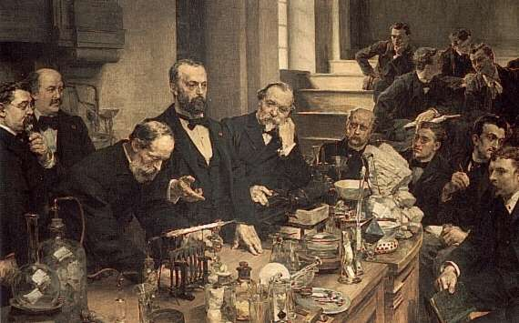
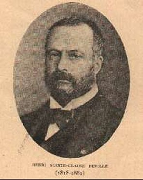
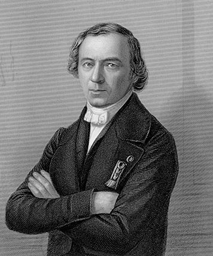
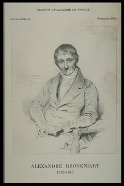
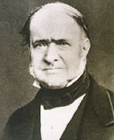
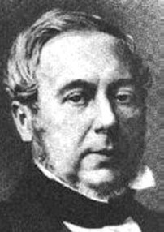
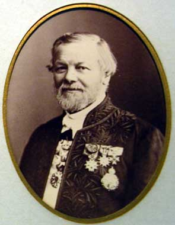

II
est rare de voir deux frères unis déjà par la
naissance,
liés plus tard par l'affection et rapprochés enfin par
l'étude,
siéger à la fois parmi les membres de la même
Académie;
il est moins commun encore et plus touchant de les voir,
obéissant
à un mystérieux appel de la destinée,
disparaître
au même âge, après pareil nombre d'années
d'une
activité féconde.
Charles
et
Henri Sainte-Claire Deville, qui nous ont offert cet émouvant
spectacle,
avaient appliqué toutes les facultés de leur esprit aux
mêmes
recherches, toutes les forces de leur cœur aux mêmes sentiments.
Entre eux, solidarité complète, dévouement sans
limite.
Celui des deux qu'on félicitait à l'occasion d'un
succès
rappelait avec vivacité les travaux de son frère. L'un
était-il
critiqué, l'autre se portait impatient à sa
défense.
L'éloge ou le blâme les trouvaient toujours en
éveil;
chacun avec son tempérament toutefois : Henri, ferme, calme,
sceptique,
n'acceptant jamais pour lui sans marchander la louange que, sans
compter,
il reportait sur son frère; Charles, impétueux,
frémissant,
levant au ciel des mains agitées par la joie ou protestant,
l'œil
en feu, contre l'iniquité. Car, chacun à sa
manière,
nos deux confrères étaient passionnés, l'un avec
ténacité,
l'autre avec élan; ne faisant qu'un, cependant, confondant avec
abandon : pensées, projets, renommée, affections,
familles.
Toujours
d'accord et surtout quand il s'agissait de la dignité de la
science,
de l'honneur national et des destinées de la France,
s'effaçant
aux époques prospères, prêts à tous les
dévouements
au temps du malheur. Comment séparer dans l'histoire de
l'Académie
ceux qui ont voulu demeurer mêlés dans le travail, le
souvenir
de la postérité, l'amour de la patrie ? L'éloge de
l'un ne semblerait-il pas inachevé si celui de l'autre ne venait
s'y confondre ? Ne leur imposons pas après la mort, un divorce
dont
ils n'ont jamais connu la douleur pendant la vie. Leurs ombres
attristées
s'élèveraient au milieu de nous pour protester contre cet
outrage posthume infligea leur union fraternelle ! La Section de
minéralogie
et de géologie à laquelle appartenaient Charles et Henri
Deville offrait sous son double aspect une juste consécration
à
leurs travaux respectifs: le premier étudiant sur
l'écorce
de la terre le mode d'apparition et l'agencement des couches dont elle
est composée ; le second séparant par l'analyse chimique
les éléments des roches et reproduisant les
espèces
minérales naturelles par des moyens artificiels de laboratoire.
Mais ces distinctions, ils ne les acceptaient pas; leurs recherches se
pénétraient, et si l'un était un peu plus
géologue,
l'autre un peu plus chimiste, il est telles de leurs découvertes
dont l'attribution entre les deux savants fait hésiter
déjà
leurs contemporains.
Originaire
de Périgueux, la famille Deville s'était
réfugiée
à Bergerac à la suite des troubles de la Ligue. Vers la
fin
du XVIIe siècle, un de ses membres, s'étant
fixé
aux Antilles, y devint le chef de la branche à laquelle
appartenaient
nos deux éminents confrères. Nés, Charles Deville,
en 1814, Henri en 1818, ils entraient dans la vie sous les plus
favorables
auspices. Le monde était en paix. Leur père, tout en
conservant
sa nationalité, s'étant établi à
Saint-Thomas,
des entreprises bien conçues lui avaient procuré une
fortune
considérable. Sa situation dans l'île était
prépondérante;
il remplaçait le gouverneur lorsque celui-ci était
appelé
en Europe.
Secourable
à ses compatriotes fixés dans le pays; hospitalier aux
marins
dont les navires mouillaient dans le port; providence toujours
prête
pour les victimes des accidents ou désastres maritimes, si
fréquents
dans ces parages, la contrée, accoutumée à ses
bienfaits,
en a gardé la mémoire. L'île de Saint-Thomas, la
plus
grande des îles Vierges, offrait par la sûreté de
son
port, l'étendue de son commerce et la paternelle administration
du Danemark, auquel elle avait été restituée,
toutes
les conditions de sécurité nécessaires à
une
famille laborieuse; mais M. Deville, resté Français,
voulut
rendre ses fils à leur patrie. Avec ce dévouement, qu'en
attendait leur père, ils lui ont apporté, ce que rien ne
faisait prévoir, une large part dans la gloire scientifique du
siècle,
et ils ont, à leur tour, élevé haut l'honneur de
leur
nom. Placés, à Paris, dans l'institution Sainte-Barbe,
devenue
le collège Rollin, les deux jeunes créoles excitaient la
sympathie : petits, maigres, chétifs même, mais
intelligents,
vifs et précoces; l'un, rosé et blond, très
nerveux,
un peu timide ; l'autre, brun, aux yeux noirs pleins de vivacité
et de malice; ils sortaient du commun. Quelque chose leur était
resté de ces premières apparences pendant toute la vie;
au
déclin de l'âge, je retrouvais encore entre eux ces
analogies
et ces différences que j'avais remarquées, non sans
intérêt,
pendant les premières années de leur séjour
à
Paris.
Les
études
classiques des deux frères terminées, l'aîné
fut reçu comme externe à l'Ecole des mines où,
parmi
d'autres maîtres illustres, se trouvait Élie de Beaumont,
auquel il devait succéder dans sa chaire du Collège de
France
et dont les doctrines acclamées alors par l'Europe savante lui
inspirèrent
des sentiments de conviction et de respect qu'il conserva toujours. Du
premier coup, il avait trouvé sa voie; la direction de ses
études
et celle de son esprit étaient fixées. Les cours de
l'Ecole
des mines lui offraient tous un enseignement positif et précis
d'accord
avec ses habitudes droites. Cependant, l'étude de la
géologie
ouvrant à son imagination des horizons étendus et
variés,
il y trouva bientôt un but pour ses travaux; il n'avait
qu'à
choisir. Rien n'est stable autour de nous. Les montagnes
s'émiettent
et comblent les vallées; la poussière des continents va
former
au fond des océans des dépôts stratifiés;
ici,
les terres s'inclinent, plongeant lentement dans la mer; là,
elles
en émergent en se relevant; ailleurs, des masses de
granité,
poussées par une force intérieure, montent vers le ciel;
et ces altérations de notre domaine s'effectuent par les efforts
d'une mécanique insensible, intéressant, dans ses
manifestations,
le globe tout entier. Il n'en est plus de même des
phénomènes
brusques et éclatants de la chimie des volcans et de ceux qui en
dépendent. A une époque éloignée, ils ont
laissé
des traces ineffaçables à la surface de la terre ; ils en
ont changé l'aspect. Depuis les temps historiques, ils ont
montré
leur pouvoir redoutable par la destruction soudaine des villes de la
mer
Morte, de Pompéi, d'Herculanum, de Lisbonne, de Caracas, de
Chio,
d'Ischia. Où se trouve l'origine de cette force locale et
limitée
dans ses effets, qui se ravive avec fureur quand elle semble
éteinte
? Problème irritant offert à notre curiosité,
qu'ont
vainement tenté de résoudre Empédocle et Pline
dans
l'antiquité, Davy et Gay-Lussac dans les temps modernes, et que
Charles Deville a eu l'audace d'aborder. Les souvenirs confus de son
enfance,
les récits de sa famille, la lecture des voyages entrepris dans
les diverses îles du groupe des Antilles contribuèrent,
sans doute,
à fixer sa pensée sur les questions relatives à
l'action
des feux souterrains. Son parti pris, il visita l'Auvergne, le Gantai
et
le Vivarais, théâtres classiques des anciennes convulsions
volcaniques dont la Franco a été le témoin dans
des
siècles éloignés. L'étude des effets
produits
pendant leur période ardente par ces foyers éteints
devait,
lui rendre plus facile l'analyse des phénomènes propres
aux
volcans actifs de l'époque actuelle. Il n'avait pas encore de
plan,
cependant, car il s'embarqua pour les Antilles, résolu à
se partager entre celles de ces îles qui appartiennent aux
formations
volcaniques et celles ou l'on rencontre des terrains de
sédiment.
Après une exploration générale, abordant en 1841
à
la Guadeloupe, il ne tardait pas à reconnaître qu'une
topographie
exacte de cette île devait précéder l'étude
de ses régions volcaniques. Les circonstances n'étaient
pas
favorables à ce dessin : un sol tourmenté, des
forêts
épaisses à ouvrir la hache à la main; des cimes
couronnées
de vapeurs masquant les signaux, tout se réunissait pour rendre
les observations difficiles. La carte générale de
l'île
fut dressée néanmoins et, pour la partie volcanique, elle
repose encore sur les résultats obtenus par notre
confrère.
Cette
étude
géodésique à peine terminée, il se rendait
à Tenériffe, pour en étudier le groupe volcanique.
Dès la sortie du navire, il organisait une expédition du
Pic, dont il atteignait le sommet le quatrième jour au soleil
levant.
L'astre radieux colorait au loin de ses feux Canaria, Palma, Cornera et
Ferro; plus près de lui, à ses pieds, les terres
éclairées,
dès l'aurore, se teignaient de tons vigoureux contrastant avec
les
parties de l'île que l'ombre portée du Pic couvrait de son
grand voile. Mais, si la vive imagination de Ch.. Deville le
préparait
à jouir de pareils tableaux, il ne s'en laissait pas distraire
de
soins plus positifs. Huit jours lui suffirent pour contrôler la
hauteur
du Pic, déterminer la déclinaison magnétique de ce
point du globe et réunir des échantillons en grand nombre
représentant les roches dont il avait reconnu l'existence et la
position. A cette époque, ou la théorie des
soulèvements
occupait tous les géologues, un élève
d'Élie
de Beaumont, placé sur le théâtre même un
Léopold
de Buch, son prédécesseur, avait vu les premiers
linéaments
do cette doctrine se former dans son esprit, pouvait-il échapper
à la tentation de plaider leur cause ? On ne s'y attendait pas.
Mais Ch. Deville fut sage; il raconta simplement ce qu'il avait vu,
caractérisant
les terrains observés et précisant leurs rapports dans
une
narration correcte et sincère. « Ce tableau restera
toujours
vrai, quelle que soit l'hypothèse à laquelle on
s'arrêtera
sur la manière dont la masse du cône central du Pic a
reçu
sa forme et sa position, » disait Elie de Beaumont, dans son
rapport
à l'Académie sur le mémoire du jeune
géologue.
L'élève n'avait pas flatté les sentiments du
maître
et celui-ci lui en faisait un mérite, ce dont il faut lui savoir
quelque gré. Après une excursion rapide aux îles du
Cap Vert et l'ascension du pic du Fogo, Ch. Deville, revenu à la
Guadeloupe, avait entrepris l'élude des îles calcaires de
la Grande-Terre et de Marie-Galante, lorsqu'il fut surpris à la
Dominique par un tremblement de terre violent, celui du 8
février
1843. Du point élevé où il était
placé,
apercevant l'immense nuage de poussière couvrant la Guadeloupe,
il comprit, le cœur serré, qu'une catastrophe
épouvantable
venait de la ravager. En effet, la ville de la Pointe-à-Pitre
était
en ruines; les maisons, les édifices même,
s'étaient
écroulés, et l'incendie, éclatant de toutes parts,
avait achevé le désastre. Deux mille victimes, parmi
lesquelles
le premier magistrat de la cité, M. Deville, son oncle, dont la
demeure renfermait la plupart de ses collections, une partie
considérable
de ses notes et de ses dessins ! Tout avait disparu ! Doublement
atteint
dans ses affections les plus chères et dans les résultats
de ses travaux, en présence des ravages causés par !le
tremblement
de terre, des ruines couvrant le sol et des émotions
déchirantes
d'une population en deuil, Ch. Deville, chargé par l'amiral
Gouboyre,
commandant la station navale, de lui faire un rapport sur les causes,
l'étendue
et les conséquences du phénomène, ne se laisse pas
en traîner à son émotion. C'est un désastre,
dit-il, mais ce n'est pas un grand fait géologique. Les
fatigues,
les tristesses, le climat devaient cependant avoir raison des forces
que
Ch. Deville venait de prodiguer avec une généreuse
imprudence.
Une ophtalmie grave dont il guérit, un rhumatisme articulaire
aigu
dont les atteintes étaient destinées à se
reproduire
trop souvent pendant le reste de sa vie, exigèrent son retour en
Europe. Son frère le reçut dans ses bras au Havre et le
ramena
à Paris, sur un brancard. Sa famille qu'il avait quittée,
plein d'espoir, jeune homme prenant possession de la vie, il la
retrouvait
en deuil; il rentrait auprès d'elle presque aveugle,
brisé
par la souffrance; à ses maîtres qui l'avaient vu partir,
au début de la carrière, le cœur gonflé de
projets,
il ne rapportait qu'une faible part de ses travaux, la meilleure ayant
disparu dans les convulsions d'un tremblement de terre. Tout autre
eût
trouvé, dans ce concours de circonstances douloureuses, un
prétexte
de repos ou même un motif de s'écarter de la voie
scientifique
dont les abords se montraient d'un si rude accès; Ch. Deville, a
peine rétabli, se mit à la recherche d'un laboratoire. A
l'abondance des matériaux, il voulut suppléer par
l'examen
approfondi de ceux qu'il avait conservés. Chacun d'eux fut
soumis
à un triage microscopique de ses éléments
minéralogiques;
ceux-ci, à une étude cristallographique exacte et
à
une analyse chimique complète. Il sépara de cette
manière
les unes des autres des roches volcaniques, identiques par l'aspect,
différentes
par la composition et jusqu'alors confondues. Le soufre se montre
souvent
parmi les déjections volcaniques; l'attention de Ch. Devillc se
dirigea particulièrement sur cet élément. Tout
autre
corps devient plus fluide quand sa température
s'élève
: celui-ci, liquéfié, s'épaissit quand on le
chauffe.
Prend-il l'état solide, il se montre tantôt dur et
friable,
tantôt mou et ductile. Ch. Deville, analysant ces circonstances,
découvrit deux propriétés de la matière,
dont
l'une touche à la philosophie naturelle, dont l'autre
éclaire
certains incidents de la formation des terrains ignés.

Henri Sainte Claire Deville
On
savait
qu'un même corps peut revêtir des caractères
extérieurs
opposés; le diamant et le charbon noir, par exemple, n'en sont
pas
moins identiques, quoique l'un soit dur, dense, limpide,
éclatant,
tandis que l'autre est tendre, léger, opaque et terne. Si, pour
la forme comme pour la couleur, ces deux matières se
séparent,
cependant, par leurs propriétés chimiques, elles se
confondent.
Ch. Deville a reconnu, le premier, qu'il existe des soufres
différents,
non seulement par des caractères physiques extérieurs,
comme
le charbon et le diamant, mais aussi par des propriétés
chimiques
plus intimes; on dirait non plus un même personnage ayant
changé
de vêtements, mais des êtres absolument distincts. L'un de
ces soufres est soluble dans le sulfure de carbone, l'autre ne s'y
dissout
pas. Lorsque Schrôtter, le savant secrétaire
perpétuel
de l'Académie des Sciences de Vienne, annonçait, plus
tard,
l'existence d'un phosphore rouge ressemblant si peu au phosphore
ordinaire,
il donnait une sanction indirecte aux expériences de Ch,
Deville.
Le soufre soluble et le soufre insoluble, le phosphore inflammable et
le
phosphore ne prenant pas feu à l'air, sont toujours du soufre et
du phosphore, dont les molécules diffèrent seulement par
l'intensité des mouvements vibratoires dont elles sont
agitées.
En
passant
de l'état vitreux à l'état cristallisé, le
soufre se contracte et diminue de volume; Ch. Deville le constate et
reconnaît
qu'il en est de même des roches. Dans ses leçons, on a
dû
plus d'une fois retrouver le souvenir de ces expériences, car
les
phénomènes se rapportant à la fusion des masses
cristallisées
ou à la cristallisation des masses vitreuses ne sont pas rares,
à la surface de la terre, elles changements de volume obtenus de
la sorte peuvent produire des soulèvements ou des affaissements
du sol plus ou moins étendus. Si de tels résultats
témoignaient
d'une forte préparation scientifique et d'une intelligence
ouverte,
le problème auquel notre confrère s'était
voué
n'en restait pas moins intact. On n'échappe pas à sa
destinée
cependant, et Ch. Devillc devait donner l'impulsion à la
théorie
des volcans. N'était-il pas juste qu'après avoir perdu
dans
sa jeunesse la meilleure partie de ses travaux scientifiques, par
l'intervention
brutale d'une éruption volcanique, plus heureux que Pline, il
fit
connaître, dans son âge mûr, par une revanche de
savant,
les principaux traits de ces convulsions du globe ? Pour y parvenir, il
fallait abandonner l'exploration des volcans dans leur condition de
repos
et celle des laves refroidies. Mais, en présence des
phénomènes
produits pendant la période active, les méthodes du
laboratoire
de l'École des Mines ne suffiraient plus. Cependant la science,
tandis que Ch. Deville parcourait les Antilles, avait acquis des
procédés
nouveaux applicables à la récolte et à l'analyse
des
gaz rejetés par les volcans en pleine éruption. Ce fut un
trait de lumière pour notre confrère. Son plan et son
programme,
embrassant dans toute son étendue la mission qu'il avait
à
remplir, furent bientôt tracés. Il voulut étudier
l'action
volcanique avant, pendant et après ses manifestations dans un
même
lieu et dans des contrées diverses; dresser procès-verbal
de l'apparition des matières volatiles, rejetées par les
bouches volcaniques : vapeurs et produits gazeux. Leur nature fugitive,
les dangers dont leur récolte est accompagnée, les
difficultés
que présente leur analyse avaient éloigné ou
découragé
les observateurs jusqu'à l'époque ou Ch. Deville,
aidé
de son savant ami M. Félix Le Blanc, entreprenait cette
étude.
Munis d'appareils spéciaux permettant de puiser les gaz et les
vapeurs
dans les crevasses de la lave brûlante, à la surface
même
de la lave en fusion, partout enfin où se manifestaient des
émanations
appréciables, ils parvinrent à réunir dans de
pénibles
et longues explorations les produits provenant des éruptions du
Vésuve, des émanations des champs
phlégréens
et de l'Etna; plus tard; des îles Eoliennes : Lipari, Vulcano,
Panaria,
Stromboli; enfin, des lagoni de la Toscane. Ces explorations ne
s'effectuaient
pas sans péril. Au voisinage des laves incandescentes, une
crevasse
s'ouvrant tout à coup menaçait parfois de l'ensevelir
vivant
sous le flot de la matière en fusion ou de l'asphyxier par les
vapeurs
qui s'en échappaient. Dans les terrains volcaniques d'un
régime
plus calme, au fond des cavités où il cherchait à
récolter les gaz, une brusque irruption d'acide carbonique ou
d'hydrogène
sulfuré l'obligeait souvent à prendre la fuite. Ce n'est
pas tout. Ces contrées servent de refuge à une population
de bandits : quelques naturels du pays avaient été
enrôlés
comme sauvegarde. Mais quels défenseurs dans l'Italie d'alors !
C'était bien le cas de s'écrier : Qui gardera mes
gardiens
? Ayant conçu quelques inquiétudes dans une de ses
excursions, notre confrère réclama le secours des
bersaglicri.
À peine le premier uniforme était-il en vue, qu'il se
trouvait
seul avec ses compagnons français. Tout le reste avait fui,
comme
une volée de moineaux, et il n'était plus aisé de
savoir où avait été le danger, si c'était
parmi
les brigands ou parmi les guides.
Ces
voyages
dans des contrées redoutées pour leur insalubrité
ont plus d'une fois compromis la santé de notre confrère,
mais rien ne pouvait l'arrêter; son dévouement a obtenu sa
récompense. Ch. Deville a démontré qu'il existe un
rapport constant entre la température des bouches volcaniques et
la nature de leurs émanations : les tissures incandescentes
rejettent
des solides peu volatils, des sels de potasse et de soude; au-dessous
de
la chaleur rouge, la vapeur d'eau, les acides chlorhydrique et
sulfureux
deviennent prédominants; en s'approchant de la
température
ordinaire, la vapeur aqueuse elle-même diminue et
l'hydrogène
sulfuré, l'acide carbonique, prennent le dessus. Ces trois
groupes
de produits se manifestent à la fois dans un volcan en
activité
: les moins volatils au centre du foyer, les moins coercibles à
la circonférence, les autres dans la zone moyenne. Dans les
volcans
éteints, les gaz permanents et particulièrement l'acide
carbonique
continuent à se dégager, et cela pondant de longs
siècles,
comme on le voit dans les volcans des bords du Rhin, de l'Auvergne, du
Cantal et du Vivarais, ou dans ceux d'une extinction plus
récente
si bien étudiés par noire confrère M. Boussingault
dans l'Amérique du Sud. Faut-il attribuer à l'expansion
subite
de ces vapeurs et de ces gaz les effets prodigieux des convulsions
volcaniques
? Leur intervention est incontestable; elle ne suffit peut-être
pas
pour expliquer ces ébranlements formidables de la croûte
terrestre.
Pourquoi ce retour sur les mêmes points du globe, qui, dans les
environs
de Smyrne par exemple, lie, par une série non interrompue, des
catastrophes
remontant aux époques fabuleuses de Thésée et de
Pélops,
à la destruction récente de Chio ? D'où provient
cette
force qui, naguère, faisait disparaître en quelques
minutes,
autour de Krakatoa, des villages par centaines et leurs infortunes
habitants,
au nombre de 50 à 60000; soulevant des vagues assez hautes pour
submerger l'Observatoire de Paris, les portant aux
extrémités
des Océans, imprimant à l'air une impulsion dont l'onde
faisait
le tour de la terre et lançant aux confins de
l'atmosphère
des poussières ténues dont la présence pendant de
longs mois nous a dotés du spectacle magique des plus
merveilleux
crépuscules ? Notre planète n'est pas arrivée au
jour
du repos; elle recelé des énergies capables d'en
bouleverser
à chaque instant la surface; la moindre agitation de ses
membres,
le plus faible des soupirs exhalés de ses bouches
enflammées,
sont pleins de menaces et rappellent à l'homme qui
prétend
y régner en maître que son règne d'une heure
s'évanouit
dès qu'il plaît au vrai Maître de se manifester. Ces
questions posées a l'homme depuis son apparition sur la terre,
Ch.
Deville ne pouvait songer à les résoudre toutes; le
concours
de nombreuses générations sera nécessaire. Mais il
a créé la méthode d'observation; il en a fait une
application heureuse, ouvrant à ses successeurs une voie large
et
sûre. C'est assez pour lui obtenir une place d'élite parmi
les créateurs de la physique du globe, fondée sur
l'expérience,
et pour lui mériter un rang élevé parmi les
représentants
de la science française. Il n'est plus permis de
considérer
le feu des volcans comme le résultat d'une combustion. Tout
indique,
au contraire, que c'est la température élevée
propre
aux régions intérieures du globe qui détermine la
formation brusque de vapeurs et de compositions chimiques secondaires
qu'on
signale dans chaque éruption et qui se produisent quand les
masses
incandescentes rencontrent l'eau des mers. Au sujet des manifestations
volcaniques, Ch. Deville a donc fermé l'ère du roman et
ouvert
celle de l'histoire. Pendant ses premières explorations aux
Antilles,
Ch. Deville avait accordé une grande attention aux observations
relatives à la température de l'air et à celle des
courants de la mer. A la fin de sa vie, la météorologie
devint
l'objet principal et même exclusif de ses pensées. Il
obtint
la création de l'observatoire départemental de Montsouris
et l'installation de nombreuses stations météorologiques
sur des points bien choisis de la France africaine. Sans souci des
ardeurs
du climat, il allait de l'une à l'autre, organisant le service
et
vérifiant les instruments. De telles fatigues n'étaient
plus
de son âge. Dans une de ses savantes campagnes hydrographiques,
notre
confrère l'amiral Mouchez, arrivant à Tunis, apprenait
que
Ch. Deville s'y était arrêté presque mourant. Il
s'empressait
de le recueillir a son bord et, l'entourant de soins, il avait la joie
de le ramener en France et de le rendre à sa famille. Elle ne
devait
plus le conserver longtemps; il succombait, le 10 octobre 1876, au
milieu
d'atroces souffrances, après une courte maladie, laissant,
après
lui, ses proches dans la douleur, ses amis attristés et, parmi
ses
élèves, un collaborateur fier de continuer son œuvre et
jaloux
d'honorer sa mémoire.
En
perdant
son frère, Henri Deville, accablé de chagrin, nous laissa
voir combien l'affection qu'il lui portait était profonde;
suivant
d'un œil ému cette moitié de lui-même qui
descendait
dans la tombe, il semblait avoir comme un pressentiment de sa fin
prochaine.
Ses pensées si fermes, si calmes, étaient devenues
hésitantes,
inquiètes. L'avenir des siens l'occupait beaucoup. Le
désir
de terminer les travaux dont il poursuivait l'exécution avait
pris
un caractère impatient qu'on aurait traité de simple
état
nerveux, si l'on n'y avait reconnu l'expression d'un mal
intérieur
profond. Ses forces déclinaient; son âme restait sans
atteinte,
et jusqu'à la dernière heure, fidèle a ses
habitudes,
il continuait a partager, entre ses élèves et sa famille,
les trésors d'intelligence et de bonté qu'il leur avait
toujours
prodigués. Henri Sainte-Claire Deville n'avait pas eu comme son
frère le bénéfice de l'éducation
scientifique
d'une école fermée. Se destinant à la
médecine,
il prit place parmi les élèves de la Faculté de
Paris,
dont il suivit les cours avec assiduité et qui lui donna le
titre
de docteur en 1843. Mais l'enseignement de la Sorbonne l'avait
attiré;
ces leçons magistrales improvisées, où la foule se
presse nombreuse, animée, échauffant par son attention
émue
la pensée du professeur, enflamment la jeunesse; il en avait
reçu
une vive impression. Ce genre d'éloquence, dont le pays latin
garde
surtout la mémoire, compte parmi ses représentants dans
les
temps éloignés Albert le Grand, Abeilard, et près
de nous, Guizot, Villemain, Cousin, Saint-Marc Girardin. Les sciences
n'y
sont pas restées étrangères, et Berzélius,
à la plus brillante époque de sa vie, sortant de la
première
leçon qu'il eût entendue à la Sorbonne, celle de
Thenard,
disait ingénument : « II y a vingt ans que je professe la
chimie,
je
viens d'apprendre comme on doit l'enseigner. » C'est là,
en
effet, que Humboldt recommandait à ses protégés de
chercher leur modèle; c'est là que les maîtres les
plus éminents de l'Allemagne scientifique, Mitscherlich, Magnus,
Liebig et bien d'autres encore sont venus s'inspirer, il y a un
demi-siècle.
L'Allemagne d'alors apprenait à la fois, de l'Ecole
Polytechnique,
à faire manipuler les élevés; de la Sorbonne,
à
remplacer la froide lecture d'un texte écrit par des
leçons
vivantes. Ne reprenons pas maintenant ce qu'elle abandonnait jadis et
n'allons
pas remplacer dans la chaire publique par des faits entassés,
décrits
en style de télégramme, les liantes pensées et le
noble langage qui élèvent l'âme de la jeunesse,
forment
son esprit et maintiennent, dans leur plénitude et leur force,
les
traditions les plus pures du génie national. Henri Sainte-Claire
Deville ne se contentait pas de suivre les cours de la Faculté
des
sciences. Il voulait en reproduire les démonstrations. Dans son
petit laboratoire personnel, relégué dans un taudis de la
rue de la Harpe, il ne se bornait même pas à
répéter
les expériences dont il avait été témoin;
curieux
et hardi, il cherchait à faire naître des réactions
ignorées, à produire des composés nouveaux. A
cette
époque, la chimie organique, en pleine éclosion,
absorbait
l'attention; le jeune débutant ne pouvait hésiter dans
son
choix; son premier mémoire eut pour objet l'essence de
térébenthine.
Cette étude, exécutée avec méthode et
précision,
annonçait un talent déjà mûri,
associé
à une imagination en éveil; elle fut jugée digne
de
figurer parmi les publications de l'Académie. L'auteur avait
à
peine dépassé sa vingtième année, lorsqu'il
obtenait cet honneur envié; une telle faveur ne l'enivra
pas; il y vit l'obligation de se vouer à la science. Il serait
hors
de propos d'insister sur les travaux de ses premières campagnes
scientifiques. Henri Deville s'était engagé dans
l'étude
des résines et des essences, labyrinthe ou les plus habiles
pourraient
s'égarer encore. Il n'en revint pas les mains vides. La
découverte
d'un carbure d'hydrogène nouveau extrait du baume de Tolu, celle
d'un éther de l'esprit de bois provenant de la même
source,
n'ont pas perdu de leur importance. Le toluène a joué un
grand rôle dans la fabrication de ces brillantes couleurs rouges
dont la chimie a doté l'art de la teinture, et le benzoate de
méthylène
constitue le premier éther composé extrait d'un produit
naturel.
L'esprit inventif révélé par ces premiers travaux
inspira confiance aux maîtres de l'époque. A peine Henri
Deville
avait-il obtenu le titre de docteur es sciences, qu'il fut
appelé
par Thenard, non seulement à la chaire de chimie, mais
même
au décanat de la Faculté de Besançon, nouvellement
fondée. Il devait y laisser des souvenirs durables. La
municipalité
de Besançon désirait une analyse des eaux du Doubs et de
celles des sources surgissant aux alentours de la ville. Elle s'adressa
au jeune doyen, et celui-ci, étendant son travail sur les
principaux
fleuves de la Franco, constatait la présence de la silice et
celle
des nitrates dans la plupart des eaux courantes; ce dernier
résultat
n'a pas tardé à prendre place dans les préceptes
de
l'hygiène publique. Les eaux aérées, salubres,
saines,
sont caractérisées par la présence de quelques
traces
de nitrates; celles qui renferment des matières organiques
altérées
n'en contiennent pas. Des travaux de cette nature, d'une
exécution
longue et pénible, sont rarement récompensés par
l'opinion,
en proportion des soins qu'ils ont coûtés. Il n'en est
plus
de même quand, d'un coup d'éclat, on renverse les opinions
admises et qu'on crève comme une bulle de savon quelque
théorie
trop légèrement conçue. Aussi, la belle
expérience
par laquelle Henri Deville mettait en évidence l'existence de
l'acide
nitrique anhydre, exécutée en quelques jours, eut-elle
une
tout autre influence sur la science et sur sa propre carrière
que
sa longue étude des eaux du Doubs. Il me semble entendre encore
les applaudissements par lesquels l'intelligent et sympathique
auditoire
de la Sorbonne saluait, à la fois, le récipient
tapissé
de beaux cristaux d'acide nitrique anhydre que je mettais sous ses yeux
en 1849, et le jeune doyen de la Faculté de Besançon qui
lui offrait la primeur de ce produit nouveau. Cette découverte
arrivait
à point nommé. Elle faisait connaître dans sa forme
pure un des anciens acides de la chimie, l'un des plus usuels,
l'eau-forte
des ateliers, l'un des plus remarquables, l'agent efficace de la poudre
a canon. Henri Devillc attachait ainsi polir toujours son nom à
celui d'un produit familier à la science et aux arts. Il
détruisait,
à peine née, une doctrine soutenue avec quelque
solennité,
tendant à établir que l'existence à l'état
pur
et sec de certains acides et de l'acide nitrique en particulier
était
inadmissible. C'était un coup de fortune : Henri Deville ayant
marqué
désormais sa place à Paris, l'Ecole normale
supérieure
lui offrait, avec le titre de conférencier, un laboratoire
à
constituer.
Cette
Ecole,
établie pour former le personnel destiné aux chaires de
l'enseignement
secondaire, n'avait rien préparé pour donner une
éducation
forte et pratique aux candidats au doctorat, aux futurs professeurs de
Faculté. Sa bibliothèque pouvait suffire, sans doute, aux
lettrés et aux géomètres; son modeste atelier de
physique,
aux apprentis physiciens. Délaissée, la chimie n'y
possédait
ni l'installation, ni le matériel nécessaires à
toute
opération délicate et à toute recherche nouvelle.
Les événements politiques avaient dispersé mes
propres
collaborateurs; après vingt-cinq années
d'activité,
mon laboratoire des hautes études chimiques était
fermé.
Henri Deville recueillit ma succession ; mais, plus heureux que moi, il
ouvrit le sien avec le concours de l'Etat, qui m'avait manqué,
et
s'y consacra sans réserve pondant trente ans à son tour.
Il ne faut pas considérer la situation d'un chef d'école,
s'il s'agit des beaux-arts, d'un directeur de laboratoire, s'il s'agit
de science expérimentale, comme une fonction ou il suffirait de
s'entourer d'élèves intelligents, laborieux et de les
aider
des conseils d'une expérience bienveillante. Ce n'est pas ainsi
que les choses se passent. Le chef de laboratoire ou d'atelier doit
donner
l'exemple de l'assiduité : tout entier à sa tâche,
patient, travaillant de ses mains, le premier à la besogne et le
dernier. Il faut que les élevés puissent s'honorer de
leur
maître; que des découvertes remarquées, des
idées
nouvelles mises en mouvement ou des chefs-d'œuvre applaudis,
appellent sur son école l'attention du monde savant ou celle des
hommes de goût. Sous une semblable influence, les
dévouements
se réunissent, les imaginations s'exaltent, des
générations
animées d'un même esprit marchent avec ensemble à
la
conquête du vrai dans la science ou du beau dans l'art; c'est
à
ce prix seulement qu'on fonde une école, qu'on est un
maître,
et un maître aimé, si, aux dons de l'intelligence imposant
la confiance et le respect, on ajoute cette bonté souveraine du
cœur, source ineffable de l'affection. Henri Deville ne s'est soustrait
à aucune de ces obligations; il a réalisé avec
éclat
toutes ces conditions. Renonçant de bonne heure aux distractions
dont la vie de Paris est si prodigue, il se proposa et il tint parole,
de consacrer ses journées au travail matériel, ses
soirées
a la réflexion. Le dimanche, ses élèves et ses
amis,
réunis à l'Ecole normale, assistaient à la
répétition
des expériences qu'il avait imaginées ou de colles dont
on
voulait le rendre témoin. Géomètres, physiciens,
chimistes,
naturalistes, industriels, philosophes, historiens, gens de lettres et
gens du monde, chacun se plaisait dans ce milieu sans
prétention,
ouvert à toutes les hardiesses, fermé à toutes les
idées fausses. Dès le moment où il entra dans ce
laboratoire
de l'Ecole normale, jusqu'à celui où la maladie à
laquelle il devait succomber vint l'en éloigner, il s'y montra
le
plus assidu, le plus simple et le plus heureux de ceux que l'amour de
la
science y réunissait. Toute morgue en était bannie, une
camaraderie
charmante y régnait; une gaieté franche et communicative
en écartait les discussions. On sortait de là content des
autres et de soi-même; on avait appris quelque chose; on avait
fourni
son contingent au progrès; on s'était vu entouré
de
grands talents et d'éminents esprits, ne marchandant pas
l'éloge,
prompts à l'admiration, étrangers à l'envie,
ignorant
la jalousie et pratiquant la plus large tolérance. Ces souvenirs
seront l'honneur éternel de l'Ecole normale. Parmi ceux que la
réputation
du maître y attirait, les uns avaient leur carrière faite,
les autres leur avenir assuré. Si, par aventure, dans le nombre
se rencontrait quelque déclassé, notre confrère
savait
bien trouver le moyen et saisir l'occasion de lui ouvrir la route.
N'ayant
jamais rien demandé pour lui-même, aucune démarche,
aucun effort ne lui coûtait pour les autres ; il ne se reposait
qu'après
le succès. L'Ecole normale, ignorée des chimistes
jusqu'à
ce moment, devint ainsi, sous l'influence d'Henri Deville et de son
école,
l'un des principaux centres, dans le monde entier, du haut enseignement
de cette science et l'une des sources les plus fécondes en
nobles
vérités. La chimie minérale, qu'on disait
épuisée,
vint s'y rajeunir et briller d'un grand éclat. Après
quelques
études destinées à donner à son laboratoire
l'assiette nécessaire et à s'entourer d'aides
intelligents,
Henri Deville eut la bonne fortune d'extraire

Sainte Claire Deville :
dépuration de
l'aluminium
l'aluminium
de ses combinaisons, de l'obtenir sous forme métallique et de
reconnaître
ses principales propriétés. Déjà le savant
professeur de Göttingue, Wöhler, avait isolé ce
métal
et constaté ses caractères physiques. Mais le chimiste
français
l'ignorait, et lorsqu'il en fut informé, au charme d'une
intéressante
nouveauté avait déjà succédé
l'entraînement
d'une étude pleine de promesses et riche en obstacles. Henri
Deville
s'y précipita comme un coursier généreux. Certains
métaux se présentent dans leurs mines à
l'état
de pureté, comme l'or; il n'y a qu'à les ramasser.
D'autres,
tels que le fer, l'étain, le cuivre, le plomb, s'y trouvent
à
l'état de rouille ou bien unis au soufre; mais il suffit de
chauffer
fortement leurs minerais, soit au contact de l'air, soit au contact du
charbon pour voir reparaître dans tout leur éclat
les métaux qu'ils recèlent. D'autres, enfin, se montrent
rebelles à ces influences; pour séparer de l'argile le
métal
qu'elle renferme, l'aluminium, la chimie de ces temps primitifs, ou
Vénus
était maîtresse de forges, ne suffisait pas; toutes les
ressources
de la science la plus moderne étaient nécessaires.
L'homme
a donc pu, dès les premiers temps de la civilisation, approprier
a ses usages certains métaux faciles à extraire de leurs
gangues et, utiliser des terres durcissant au feu. Aucune peuplade,
aucune
nation n'a pu se passer des services rendus par l'argile : briques,
poteries,
vases colorés et couverts de peintures, faïences et
porcelaines
éclatantes, ces productions prennent l'humanité à
son berceau et l'accompagnent jusque dans les palais. L'origine de
l'art
du potier, cependant, se perd dans la nuit des temps; son inventeur n'a
pas été admis dans l'Olympe. Les métaux, au
contraire,
ont leur place dans les cieux de la mythologie poétique et dans
le firmament de l'astronomie positive : l'or, l'argent, le cuivre, le
fer,
le plomb, le vif-argent, c'est le soleil, la lune, les planètes;
c'est Apollon, Diane,
Vénus, Mars, Saturne ou Mercure. L'argile,
humble servante de l'homme, malgré le rôle universel
qu'elle
a joué dans l'économie de la famille ou dans les
conceptions
architecturales, l'argile est restée dans un rang
inférieur,
jusqu'au moment ou Henri Deville, la touchant de sa baguette, est venu
mettre en évidence le précieux métal qu'elle
recelé.
Cette argile, en effet, renferme un métal, ainsi que l'avait
annoncé
Lavoisier; mais, ce que Lavoisier ne pouvait prévoir, ce
métal
est léger comme le verre, presque aussi
beau que l'argent, comme lui inaltérable
à
l'air, au feu, et résiste même à la plupart des
agents
chimiques. Ductile, malléable, fusible, exigeant cependant pour
fondre une température assez haute et ne se volatilisant pas,
c'est
un métal noble de plus, prenant place à côté
de l'or, du platine et de l'argent, et un métal
prodigué par la nature, plus répandu que le fer
dans les couches superficielles du globe, formant comme une
réserve
pour les besoins des époques les plus civilisées. Nous
assistons
à l'aurore de son introduction dans les habitudes de
l'espèce
humaine ; mais ses qualités et sa prodigieuse abondance le
rendent
propre à un si grand nombre d'usages qu'un jour ce sera le plus
usuel et le plus répandu des métaux. On se rendra compte
alors du service rendu à la civilisation par un des plus nobles
efforts de la science, un des plus désintéressés
et
des plus dignes d'admiration. Que de conditions a remplir, en effet !
Il
fallait une terre argileuse facile à purifier; le Midi de la
France
se chargea de la fournir, et le procédé de purification,
bientôt découvert, ne varia plus. Convertir cette terre en
un composé susceptible de permettre l'extraction du
métal,
c'était une industrie à créer avec son outillage;
on s'y appliqua si bien qu'on n'y a rien changé. La
libération
de l'aluminium exigeait une température élevée et
rendait nécessaire l'emploi d'un fondant;
le Groenland, après l'avoir mis entre les mains de Deville,
continue
à alimenter les creusets de ses successeurs. Enfin et surtout,
il
s'agissait d'imaginer des méthodes pratiques pour la
préparation
du métal du sel marin, l'agent
principal
de la nouvelle industrie; elles furent portées du premier coup
à
leur perfection. Quel ensemble merveilleux ! Mais de telles
études
ne pouvaient s'accomplir sans de grandes dépenses, auxquelles
n'auraient
suffis ni les ressources d'un particulier ni celles d'un
établissement
public. Le chef de l'Etat intervint alors avec la
générosité
dont il a donné tant de preuves à ceux qu'il voyait
occupés
d'une recherche scientifique importante, ou d'un projet utile au pays;
il mit, sur sa cassette, à la disposition d'Henri Deville, les
sommes
nécessaires à la poursuite de ces expériences et
notre
confrère eut la satisfaction de donner la forme pratique aux
vues
de son esprit, de faire passer les procédés du
laboratoire
dans le domaine de la manufacture, enfin de livrer au commerce des
métaux
usuels les raretés les plus précieuses de nos
collections.
Le premier kilogramme d'aluminium obtenu avait coûté plus
de 10000 francs; aujourd'hui, ce métal revient à 80
francs
le kilogramme et couvrirait dix fois plus d'espace que l'argent, avec
la
même dépense. Les usages auxquels on l'a jugé
propre
à l'état de pureté sont intéressants et
nombreux;
le bronze, auquel il donne naissance en se combinant au cuivre, trouve
dans les arts mécaniques un emploi journalier plus varié
et plus important encore. Ce n'est pas tout, le sodium
nécessaire
pour dégager l'aluminium de ses combinaisons se payait
littéralement
au poids de l'or; Henri Deville en a rapproché le prix de
revient
de celui du cuivre. Ce métal, que nous conservions autrefois en
petits globules comme reliques précieuses dans nos cabinets
réservés,
manié par tonnes maintenant, intervient comme agent principal
dans
les études si fécondes par lesquelles la chimie organique
multiplie ses créations. Henri Deville devait montrer le premier
quel puissant
instrument il venait de mettre aux mains des chimistes, en isolant
à
son aide, sous une forme qui les rapproche du diamant, le radical du
cristal
de roche et celui de l'acide borique.
Après
s'être mesuré avec les métaux les plus oxydables,
H.
Deville, tenté par une étude nouvelle de ceux qui le sont
le moins, entreprit avec notre confrère M. Debray, son
élève
et son ami, l'examen du platine, ainsi que celui des cinq métaux
curieux dont il est accompagné dans ses mines, parmi lesquels la
substance la plus dangereuse de la nature, l'osmium, et la plus
réfractaire,
l'iridium. Au cours de ces études, riches en découvertes,
en présence de métaux dont nos fourneaux ordinaires et
nos
forges les mieux alimentées ne pouvaient opérer la
fusion,
nos deux confrères furent conduits à chercher, dans la
combustion
du gaz de l'éclairage par l'oxygène, le moyen de produire
sous une forme manufacturière un foyer de chaleur dont les
arts
n'avaient
pas encore connu l'usage. Par un ensemble de dispositions
ingénieuses,
ils apprirent à manier avec autant de sûreté que
d'économie
ces appareils de chauffage d'une intensité extraordinaire et
d'un
genre nouveau ; l'industrie s'en est emparée. Sur ces
entrefaites,
la conférence diplomatique du mètre ayant adopté
le
système français des poids et mesures, au nom des nations
réunies, on chercha, parmi les matières connues, la plus
apte à fournir des prototypes inaltérables cl exacts.
L'alliage
de platine et d'iridium proposé par MM. Deville et Debray obtint
la préférence, non seulement à cause de sa grande
densité, mais aussi comme étant le moins fusible des
solides
propres à cet usage, et le plus capable de résister aux
effets
prolongés de l'humidité ou de l'air. Son grain fin, son
poli
parfait, sa dureté, sa malléabilité, le
désignaient
d'ailleurs aux préférences de l'assemblée. On a
obtenu
à son aide les prototypes du mètre et du kilogramme,
comparables
les uns au 1/1000e de millimètre, les autres au 1/100ede
milligramme, précision dont on n'aurait jamais cru pouvoir
approcher.
Pour l'atteindre, il est vrai, il a fallu dix années
d'études,
soit pour amener le platine et l'iridium à un état de
pureté
irréprochable, soit pour constituer à leur aide un
alliage
exempt de tout corps étranger, soit enfin pour obtenir les
masses
destinées à fournir les prototypes des mètres et
des
kilogrammes réclamés
par les diverses nations. H. Deville n'y avait épargné ni
son génie inventif ni ses veilles; il y avait perdu sa
santé
; il se consolait en songeant à la postérité pour
laquelle il travaillait. Ces prototypes braveront, en effet, l'action
des
siècles, qu'ils soient conservés dans l'air sec, dans
l'air
humide ou même plongés dans l'eau. On les verrait sortir
intacts
des flammes du plus violent incendie. Ils ne peuvent être
altérés
que par des actions mécaniques intentionnelles :
déformations
ou pertes de substance, produites par le choc du marteau ou l'action de
la lime. Cet ensemble de publications sorties du laboratoire d'Henri
Deville,
et si dignes d'intérêt, il ne m'est pas permis même
de le parcourir, mais les élèves de notre confrère
y ont pourvu ; leurs notices complètes me laissent la
liberté
de choisir et de me borner aux inventions magistrales. Pour obtenir des
températures fixes, nous ne connaissons qu'une seule
méthode
consistant à faire usage d'une matière prise au moment on
elle change d'état : la glace qui fond, l'eau qui bout;
c'est-à-dire
le zéro de nos thermomètres et le centième
degré,
choisis par Newton. Mais on ne s'était pas occupé de
constituer
des milieux à température fixe pour des chaleurs plus
hautes.
Les travaux de MM. H. Deville et Troost ont comblé cette lacune
et mis à la disposition des expérimentateurs des
appareils
dans lesquels le mercure, le soufre, le sélénium, le zinc
fournissent, à leurs ébullitions respectives, des
températures
fixes à 35°, 440, 650 et 1300 degrés. A leur aide,
ils ont
pu définir les propriétés des vapeurs des corps
les
moins volatils, écarter les anomalies offertes par la vapeur de
soufre au voisinage de son point d'ébullition, déterminer
les densités de vapeur d'un grand nombre de substances entrant
en
ébullition au-dessus de la chaleur rouge et fournir aux
théories
de la chimie moléculaire des informations indispensables. Mais
ces
travaux qui ne connaissaient pas le repos, ces découvertes
frappant
à coups redoublés l'attention de l'Europe
éclairée
et ramenant les esprits vers la chimie minérale, bases
fondamentales
de la science, n'atteignaient pas cependant les hauteurs d'une
doctrine.
Henri Deville mettant le complément à sa gloire, et c'est
a dessein que j'emploie ce mot, eut le rare bonheur de s'arrêter
devant un phénomène qu'on laissait passer inaperçu
et d'en faire sortir, par une analyse délicate,
pénétrante
et rigoureuse la vraie théorie de l'union chimique des
éléments.
Voici
le
fait. La flamme fournie par l'hydrogène et l'oxygène est
capable de fondre le platine. La température produite par la
combinaison
de ces deux gaz au moment de leur conversion en eau atteint donc le
point
de fusion de ce métal. Un éminent physicien anglais, M.
Grove,
avait reconnu, cependant, que des globes de platine incandescents et
presque
en fusion, jetés dans l'eau froide, y déterminent un
dégagement
d'hydrogène et d'oxygène gazeux provenant de l'analyse de
cette eau. Le
point
de fusion du platine représente donc une température au
voisinage
de laquelle la formation ou la décomposition de l'eau semblent
s'opérer
indifféremment. Sous l'influence de l'illustre chimiste
suédois,
Berzélius, on avait admis, sans preuves, l'existence d'une force
capable de se manifester au seul contact des corps et n'empruntant rien
à ceux-ci, soit comme matière pondérable, soit
comme
énergie.
Par un
privilège
spécial, le platine était considéré comme
doué
au plus haut degré de ce pouvoir mystérieux. Henri
Deville
avait en horreur les forces occultes, les mots vides de sens dont
s'accommode
trop facilement une science a ses débuts ; il n'acceptait donc
pas
l'explication complaisante donnée à la curieuse
expérience
de M. Grove. Il fit voir que le phénomène qu'elle
présente,
loin d'être une exception, est général ; que le
platine
n'y est pour rien; qu'il y a pour chaque combinaison une zone de
chaleurs
telle, que ses éléments se séparent ou se
réunissent
partiellement au gré des circonstances. C'est à cet
état
d'équilibre qu'il a donné le nom de dissociation. Il en a
multiplié les exemples, précisé les conditions et
créé la théorie. Autour de lui, ses
élèves
se sont appliqués avec vénération a
compléter
son œuvre. Dans les pays étrangers, on en a fait l'objet
d'études
nombreuses et importantes : on a écrit des volumes, mais on n'a
rien changé à la doctrine sortie de l'Ecole normale. En
quoi
consiste la dissociation chimique produite par la chaleur ? Comment
diffère-t-elle
de la décomposition proprement dite, déterminée
par
une température élevée, dont les effets
étaient
depuis longtemps familiers aux chimistes et même aux artisans ?
Ce
n'est pas seulement à 100 degrés que l'eau entre en
vapeur,
et chacun sait qu'à une température bien
inférieure,
elle disparaît, prenant l'état aériforme et se
mêlant
à l'atmosphère; chacun sait aussi que, sous certaines
conditions,
il lui est indifférent de revêtir l'état gazeux
dans
un air sec ou de se précipiter sous forme de brouillard dans un
air humide. Henri Deville, par une inspiration de génie, saisit
l'analogie qui lie le changement d'état chimique au changement
d'état
physique. Il fit voir qu'aux approches de la température
nécessaire
pour déterminer la combinaison totale de deux substances, elles
peuvent se réunir ou se séparer selon les conditions du
milieu.
Vers la température où l'eau cesserait d'exister, s'il y
a excès des deux gaz qui lui
donnent
naissance, une portion de ceux-ci s'enflamme en s'unissant; la vapeur
d'eau
est-elle en excès, celle-ci se décompose partiellement au
contraire. Telle est la loi de la nature. Changement d'état des
corps, séparation ou
réunion
des éléments, ce sont effets d'une même force, la
chaleur,
produisant d'abord une action purement physique, atteignant ensuite la
constitution chimique des êtres; isolant les atomes du chimiste,
après avoir disjoint les molécules du physicien, et
réduisant
peut-être la matière dans le soleil, à un
état
plus ténu, dont la nature nous échappe sur la terre.
Laplace,
Lavoisier, Berthollet et la plupart des géomètres,
envisageant
l'union des éléments au point de vue mécanique, ne
pouvaient accepter le sens absolu sous lequel l'acte de la combinaison
était envisagé par les chimistes. H. Deville leur a
donné
raison. Les corps volatils cessent d'émettre des vapeurs
à
une température basse, s'évaporent plus ou moins selon le
milieu à une chaleur moyenne, prenant tout entiers l'état
aériforme à l'ébullition. Il en est ainsi des
composés
chimiques absolument
stables quand le froid est suffisant, plus ou moins
décomposés
selon le milieu quand la température s'élève,
réduits
à leurs éléments quand elle est assez haute.
Grande
et mémorable découverte ! En rattachant par un lien
étroit
la dissociation chimique à l'évaporation, la
décomposition
chimique à l'ébullition,
Henri
Deville
a réalisé l'une des plus belles inventions de ce
siècle
fécond. Les vues de Newton sur l'action chimique, si longtemps
méconnues,
y ont trouvé la plus éclatante confirmation ; et, lorsque
la science mathématique viendra réunir, comme
conséquences
de l'attraction, les mouvements des éléments dans la
formation
des composés et les lois qui régissent le système
du monde, les vues de l'immortel Newton et celles d'Henri Deville
auront
servi de base à cette évolution mémorable de la
philosophie
naturelle. Au sujet des affinités chimiques, notre
confrère
a donc aussi fermé l'ère des romans, ouvert celle de
l'histoire
et préparé l'union de la chimie
et
de l'astronomie. A peine énoncée, la doctrine de la
dissociation
jetait la plus vive lumière sur une foule de
phénomènes
demeurés sans explication; on ne comptait pas, en effet, les cas
très nombreux dans lesquels on avait vu se produire des actions
inverses entre des corps semblant obéir à quelque
caprice,
s'unissant par des noces passagères, se séparant par des
divorces sans cause apparente. Mais, dans cette étude des
éléments
prêts à s'associer, des composés prêts
à
se détruire, il fallait saisir au passage des êtres
fugitifs
qu'un changement de décor allait faire disparaître. Henri
Deville, avec une sûreté de vues extraordinaire, imagina
une
élégante méthode expérimentale : au gaz
devenu
libre, il présente un filtre qui le sépare de celui
auquel
il
allait se combiner; aux vapeurs momentanément isolées, il
offre des surfaces qui les condensent avant toute altération; il
fait ainsi toucher du doigt les témoins irréprochables de
ces phénomènes éphémères dont
l'existence
avait échappé jusqu'alors à l'attention. il
reproduit,
comme en se jouant, les effets les plus bizarres, les moins
vraisemblables,
ramenant au rang des plus simples tels problèmes rebelles depuis
longtemps aux efforts de la science. Il rattache avec bonheur aux
effets
de la dissociation, la volatilisation apparente des matières les
plus réfractaires. Il y trouve les conditions de la formation
des
filons métalliques; il fait voir que la dissociation jouait un
grand
rôle aux époques géologiques
éloignées
et qu'elle ne reste pas étrangère aux manifestations des
volcans actuels. Si la théorie de la dissociation, si largement
mise en lumière, avait pu laisser les moindres doutes, notre
confrère
M.

Henry Debray (1827-1888)
Debray,
venant
en aide à son maître et à son ami, par sa belle
étude
de l'action de la
chaleur
sur le carbonate de chaux, se fût chargé de les faire
disparaître,
en donnant à la fois à la physique l'un de ses meilleurs
modèles, à l'art du chaufournier, remontant aux origines
de la civilisation, le guide théorique dont il manquait.
Un
autre
de nos confrères, M. P. Bert, y découvrait le
complément
de la théorie de la respiration et montrait les bicarbonates
alcalins,
incessamment produits dans le sang, venant perdre par dissociation une
partie de leur acide carbonique en se mettant en rapport avec l'air pur
dans les vaisseaux du poumon. Ce n'est pas tout. L'air qui nous
environne
contient de l'acide carbonique, en proportion très faible, mais
constante, ainsi que l'ont démontré les analyses
effectuées
dans les contrées si diverses choisies comme stations pour
l'observation
du dernier passage de Vénus sur le Soleil. D'où vient
cette
fixité ? C'est, nous apprend M. Schlœsing, que depuis de longs
siècles
il s'est établi, entre les bicarbonates contenus dans l'eau des
mers et l'acide carbonique atmosphérique, un équilibre
qui,
à peine troublé, tend à se rétablir. Si les
eaux pluviales enlèvent à l'air une certaine
quantité
d'acide carbonique, les bicarbonates de la mer s'empressent de la
restituer.
Si le bicarbonate de chaux des eaux salées se décompose
et
forme ces dépôts crayeux où les géologues
des
races futures iront chercher les restes des animaux de l'époque
actuelle, les eaux douces, chargées d'acide carbonique,
parcourant
la surface des continents, y trouvent le calcaire qu'elles
convertissent
en bicarbonate de chaux et qu'elles portent aux mers.
Voilà
certes un budget en parfait équilibre ! L'atmosphère rend
à la mer tout ce qu'elle en a reçu ; celle-ci lui
restitue
tout ce qu'elle lui a pris et les eaux pluviales remplissent leur
office
d'honnête courtier, opérant sans frais le transport de
l'acide carbonique
de l'une à l'autre. Ainsi l'acide carbonique ne s'accumule pas
dans l'air
au
point de le rendre irrespirable; les sels calcaires ne se concentrent
pas
dans l'eau des mers au point d'amener la mort de tous les êtres
qui
l'habitent; un simple équilibre, effet de la dissociation, entre
l'acide carbonique de l'air, celui des eaux douces
et
celui des eaux salées, assure la permanence de la vie sur le
globe,
détermine l'érosion des continents et l'exhaussement du
fond
des Océans. Pour produire les plus grands effets, la nature,
encore
une fois, se contente des plus petites forces, mettant en mouvement des
rouages si artistement combinés qu'on y sent la main d'un habile
horloger et non le brutal effet du hasard. Henri Deville, placé,
par cette mémorable découverte, au nombre des
législateurs
de la science, si peu
nombreux
en tout pays et en tout temps, n'avait plus qu'à jouir.
Entouré
d'élèves dévoués, d'amis fidèles,
chef
d'une famille heureuse et unie, il se vit frappé d'un mal dont
la
nature paraissait obscure, mais dont la gravité n'était
que
trop évidente. Bientôt, les soins les plus
éclairés
devenus inutiles, chacun comprit que la France allait perdre un de ses
meilleurs fils, l'Institut un de ses membres les plus dignes de
vénération.
Envisageant sa fin prochaine d'un œil calme, après avoir
reçu
les adieux
de tous
ceux
qui l'entouraient de leur affection, il expirait au milieu des siens en
pleurs, le 1er juillet 1881, dans la modeste retraite de
Boulogne,
où il avait été chercher, pour quelques jours, un
air pur et le repos. Quel
deuil
! La perte de la science était irréparable; elle fut
cruellement
sentie. Les voix les plus autorisées, préludant au
jugement
de la postérité, s'empressèrent de rendre hommage
aux travaux d'Henri Deville. L'Académie des sciences,
appelée
à décerner
le prix quinquennal, destiné à couronner, selon le vœu de
sa noble fondatrice (Madame
Jean Reynaud.),
« une
œuvre originale, élevée, offrant le double
caractère
de l'invention et de la nouveauté
», n'avait pas hésité a l'attribuer à la
découverte
capitale du principe de la dissociation; elle eut la douleur de
déposer
cet hommage sur une tombe à peine fermée. La
mémoire
d'Henri Deville a donc été entourée d'honneurs.
Son
souvenir demeure vivant parmi nous. Il est pour ses amis l'objet d'un
éternel
regret, pour ses anciens élèves celui d'un
véritable
culte; il inspire un profond respect à tous les esprits
éclairés.
Ces sentiments sont la consolation de notre époque et de notre
pays.
A travers tant de changements, de troubles, de révolutions, on
éprouve
violemment le besoin de glorifier les génies heureux dont les
œuvres
marquent au genre humain sa voie, et de rappeler en même temps au
monde prompt à l'oubli les droits de la France à sa
gratitude.
Plus que jamais, gardons avec un soin religieux la tradition des
services
rendus par nos prédécesseurs, par nos ancêtres;
honorons
nos grands hommes ! Toute nation manquant a eu devoir prépare sa
ruine intellectuelle, morale et matérielle ; elle ne vivra pas
longtemps
sur la terre et ne laissera en périssant qu'une
trace
bientôt obscurcie parmi les peuples de l'avenir. Veillons donc
sur
les titres de nos morts, en héritiers attentifs; ne laissons ni
dépérir ni envahir leur domaine
!
Ne comptons pas sur la justice d'autrui. Les nations qu'on a
initiées
aux travaux de l'esprit, de même que celles qu'on a dotées
de la liberté, ne se croient point obligées a la
reconnaissance
et ne craignent pas de donner de grands exemples d'ingratitude. Tel
peuple
qui, dans la première moitié du siècle, venait
nous
demander des leçons, se croit prêt à nous en donner
aujourd'hui et jette un regard de commisération sur notre pays,
comme si les sources de l'invention y étaient taries. Eh bien,
non
! La France n'est pas morte ! La flamme d'une lampe peut en allumer
mille
autres, sans que sa propre lumière en soit affaiblie; leur
éclat
ne fera jamais pâlir le sien, il est son ouvrage. Les sillons
profonds
tracés par les frères Deville, la poussière du
temps
ne les comblera pas et, pour en méconnaître la
maîtresse
direction, il faudrait un aveuglement volontaire. Puissent leurs
successeurs
demeurer toujours fidèles, comme eux, aux traditions de la
science
française ! C'est près d'elle qu'ils trouveront, le plus
souvent encore, ces inspirations claires, conformes a son génie,
menant aux régions supérieures de la philosophie
naturelle
et conduisant aux découvertes dont l'éclat répandu
sur notre patrie bien-aimée affirmera son rang parmi les nations.

Henri Sainte Claire Deville
DISCOURS
PRONONCÉ AUX
FUNÉRAILLES DE M. HENRI SAINTE-CLAIRE DEVILLE PAR M. PASTEUR.
«
Cher
Deville, Un jour, dans l'élan d'une amitié dont tu m'as
donné
tant de preuves,
voulant
éloigner
de moi l'idée de la mort qui avait de bien près et
longtemps
veillé à mon chevet, tu me demandais de parler sur ta
tombe.
Pour me donner l'espoir de vivre, tu cherchais à trahir ta
pensée
et la mienne. Je ne m'y trompais pas. Telle est cependant la
fragilité
de nos pressentiments, que ton aimable fiction est devenue la
réalité.
Me voilà devant ta froide dépouille, obligé,
malgré
le chagrin qui m'accable, de demander à des souvenirs ce que tu
as été, pour le redire à la foule qui se presse
autour
de ton cercueil. A quoi bon, hélas ! Tes traits sympathiques, ta
spirituelle gaieté, ton franc sourire, le son de ta voix nous
accompagnent
et vivent au milieu de nous. La terre qui nous porte, l'air que nous
respirons,
ces éléments que tu aimais à
interroger et qui furent toujours si dociles à te
répondre,
sauraient au besoin nous parler de toi. Les services que tu as rendus
à
la Science, le monde entier les connaît, et tout homme que le
progrès
de l'esprit humain a touché porte ton deuil.
Messieurs,
Étienne-Henri
Sainte-Claire Deville est né à Saint-Thomas des Antilles,
de parents français, le 18 mars 1818. Ses études
n'étaient
pas terminées, qu'il manifesta une passion ardente pour les
connaissances
chimiques. Celles-ci brillaient alors du plus vif éclat dans
notre
chère patrie. Les immortels travaux des Thenard, des Gay-Lussac,
des Chevreul, des Dumas, des Balard, des Pelouze, enflammaient la
fiévreuse
activité du jeune créole. Petit de taille, le front haut,
l'œil vif, la démarche précipitée, lui aussi
eût
pu dire : « Mon sang bout
dans mes veines comme les flots dans le Rhône.
» A peine
âgé
de vingt ans, il marquait sa place par un travail original dont il
agrandit
le cadre, dans les années suivantes, en y mêlant tant de
preuves
d'un esprit inventif et sûr, qu'on eut la hardiesse de l'envoyer
dans la capitale de la Franche-Comté, chargé d'organiser
la Faculté des Sciences nouvellement créée dans
cette
ville et de la diriger comme doyen. Il avait vingt-six ans !... Un
doyen
de vingt-six ans !...Et pourtant comme il justifia vite la confiance de
tous ! Le Conseil municipal de Besançon lui demande de faire
l'analyse
des eaux du Doubs et des nombreuses sources qui environnent la ville.
Non
seulement il accepte cette tâche ardue, sans gloire apparente
possible,
avec le dévouement de l'homme mûr qui cherche la
considération
dans la cité où il vient d'être accueilli, mais il
y trouve l'occasion d'affirmer qu'il est un chimiste de premier rang.
Aux
procédés d'analyse en usage, le jeune doyen en ajoute de
nouveaux et si exacts, qu'il découvre simultanément la
présence
des nitrates et celle de la silice dans toutes les eaux, faits
confirmés
plus tard par notre grand chimiste-agronome Boussingault, qui en
signala l'importance agricole. Bientôt après, le
même
esprit d'exactitude que Deville apporte dans ses travaux lui permet de
préparer, par une des opérations les plus simples,
l'acide
nitrique anhydre, vainement cherché jusque-là. Quel
glorieux
contraste ! la précision inventive dans cette jeune tête
ardente,
pleine d'imagination, de projets, qualités d'esprit parfois si
dangereuses
et qui paraissaient à tous devoir le conduire, lui
personnellement,
à la précipitation et à l'erreur ! Ce talent
d'analyste
hors ligne qui est un trait du génie de Deville ne l'abandonnera
plus, et, si vous parcourez dans son ensemble le champ de son
opiniâtre
labeur, vous le trouvez, à chaque pas, jalonné par la
recherche
passionnée des méthodes analytiques les plus parfaites.
Cette rigueur
dans
l'analyse, qui est la probité du chimiste, comme Ingres voulait
que le dessin fût la probité de l'art, Deville la
communiqua
à ses élèves. On la voit briller dans les travaux
de tous ceux qu'il a inspirés, Debray, Troost, Fouqué,
Grandeau,
Hautefeuille, Gernez, Lechartier et tant d'autres. Dans notre pays de
centralisation
excessive, Deville ne devait pas rester longtemps professeur d'une
Faculté
de province. A trente-trois ans, il succéda à Balard dans
la chaire de Chimie de l'Ecole Normale supérieure. Que nos
hommes
politiques, que nos hommes d'affaires ou nos grands industriels,
ceux-ci
enrichis peut-être par les travaux de Deville, saluent
en
passant
le désintéressement du savant ! Ce chimiste,
déjà
consommé, venait à Paris occuper une chaire dont les
émoluments
s'élevaient à 3000 F...Il était heureux cependant,
parce qu'il allait redevenir le confident de ses maîtres et
pouvoir
donner à son activité les ressources de la grande
capitale.
Quelques
années se passent dans des travaux distingués, au milieu
de la jeunesse d'élite qu'il embrase de sa flamme, lorsque
soudainement
Deville se signale par la belle et populaire découverte des
remarquables
propriétés de l'aluminium, puis, sans désemparer,
en quelques mois, par la solution vraiment prodigieuse de toutes les
difficultés
qui entravaient la fabrication
industrielle du beau et curieux métal. Vinrent ensuite ses
grandes
recherches sur la métallurgie du platine, où l'on vit
reparaître
avec tant de puissance sentaient d'analyste, associé à
celui
de son éminent élève et ami M. Debray. Que n'ai-je
le temps de m'y arrêter ! Que ne puis-je surtout mettre un
instant
sous vos yeux le plus beau fleuron de la couronne de notre illustre
confrère,
ces lois si fécondes de la dissociation, qui trouvent
vraisemblablement
une de leurs applications aussi surprenantes qu'inattendues et
grandioses
dans les phénomènes qui se passent à la surface du
Soleil ! Permettez-moi de résumer par un trait la gloire durable
de notre ami : pendant que les Wurtz, les Berthelot, les Cahours et
leurs
émules agrandissaient les méthodes léguées
par les immortels travaux de nos illustres maîtres, les Chevreul
et les Dumas, et assuraient à la Chimie organique ses plus beaux
triomphes, Deville, trente années durant, a tenu, en France et
en
Europe, le sceptre de la Chimie minérale. Cher Deville,
pardonne-moi
cette esquisse si imparfaite de ton œuvre. Dirai-je maintenant ce que
tu
as été dans l'intimité ? A quoi bon, encore !
Est-ce
à tes amis que je rappellerai la chaleur de ton cœur ? Est-ce
à
tes élèves que je donnerai des preuves de l'affection
dont
tu les enveloppais et du dévouement que tu mettais à les
servir ? Vois leur tristesse. Est-ce à tes fils, à tes
cinq
fils, ta joie et ton orgueil, que je dirai les préoccupations de
ta paternelle et prévoyante tendresse ? Est-ce à la
compagne
de ta vie, dont la seule pensée remplissait tes yeux d'une douce
émotion, qu'il est besoin de rappeler le charme de ta
bonté
souriante ? Ah ! je t'en prie, de cette femme éperdue, de ces
fils
désolés, détourne tes regards en ce moment. Devant
leur douleur profonde, tu regretterais trop la
vie
! Attends-les plutôt dans ces divines régions du savoir et
de la pleine lumière, où tu dois tout connaître
maintenant,
où tu dois comprendre même l'infini, cette notion
affolante
et terrible, à jamais fermée à l'homme sur la
terre,
et pourtant la source éternelle de toute grandeur, de toute
justice
et de toute liberté.
¯

Jean-Baptiste Dumas (1800-1884)
Jean-Baptiste
Dumas
NOTICE
SUR
LA VIE ET LES TRAVAUX DE JEAN-BAPTISTE DUMAS, SECRÉTAIRE
PERPÉTUEL
DE L'ACADÉMIE DES SCIENCES, LUE DANS LA SÉANCE PUBLIQUE
ANNUELLE
DU 16 DÉCEMBRE 1912
PAR M.
PH.
VAN TIEGHEM SECRETAIRE PERPETUEL
MESSIEURS,
Parmi
les
devoirs, chaque jour plus nombreux et plus difficiles, qui composent la
tâche toujours grandissante de vos deux Secrétaires
perpétuels,
il en est un que leur impose une tradition déjà longue,
puisqu'elle
remonte à Fontenelle : c'est de venir à tour de
rôle
chaque année, dans notre séance publique, nous rappeler
la
vie et les travaux, nous redire les mérites, en un mot prononcer
l'éloge de quelqu'un de nos confrères disparus. Par un
juste
retour, ne semble-t-il pas que tout Secrétaire perpétuel,
surtout s'il lui a été donné d'exercer son
ministère
pendant de longues années, ait acquis par là quelque
droit
à recevoir, lui aussi, après sa mort, le tribut de
louanges
qu'il a payé à tant d'autres? Pourtant, s'il est
ordinairement
reconnu, si, en remontant quelque peu le cours des années, nous
voyons M. Darboux nous retracer la vie de Joseph Bertrand, Vulpian
celle
de Flourens, Bertrand celle d'Elie de Beaumont, Jamin celle d'Arago,
Flourens
celle de Cuvier, Arago celles de Fourier et de Condorcet, ce droit
à
l'éloge académique n'est pas toujours respecté, et
plusieurs anciens Secrétaires perpétuels attendent encore.
Voici,
par
exemple, un chimiste illustre entre tous, Jean-Baptiste Dumas, le digne
successeur de notre grand Lavoisier. Pendant seize ans, de 1868
à
1884, il a occupé parmi nous le siège de
Secrétaire
perpétuel pour les Sciences physiques, illustré par
Cuvier
et Flourens et dont il a su
encore
rehausser l'éclat. A ce titre, il a eu à prononcer
l'éloge,
et quels beaux éloges ! de dix de nos confrères
regrettés.
Eh bien ! il y a vingt-huit ans qu'il nous a quittés et l'on
peut
constater, non sans un étonnement profond, qu'il n'a pas encore
reçu de nous ce qu'il a si libéralement donné
à
nos prédécesseurs. Non pas que notre Académie ait
méconnu ou négligé ses grands mérites, loin
de là. En plusieurs circonstances solennelles, elle s'est plu
à
les reconnaître et à les exalter : d'abord, de son vivant,
en 1882, par le président Jamin, qui lui offrait la
médaille
commémorative de son cinquantième anniversaire
académique,
puis à ses obsèques, en 1884 par le président
Rolland
et le Secrétaire perpétuel Joseph Bertrand, et plus tard,
en 1889, à l'érection de sa statue à Alais, par
deux
membres délégués : Pasteur et M. Armand Gautier.
II
n'en reste pas moins qu'ici, chez nous, sous cette coupole, nous
gardons
une dette envers cette grande mémoire. Aussi, sans vouloir
rechercher
ici la cause, peut-être trop personnelle, de ce long retard,
ai-je
pensé qu'il convenait, pour l'honneur de l'Académie, de
combler
au plus tôt cette regrettable lacune. Mais je me suis
aussitôt
souvenu que Dumas a écrit quelque part : « L'Académie
veut que ceux qui l'ont honorée soient loués dignement.»
Et l'exigence de cet avertissement m'a tout d'abord
arrêté.
Lui, qui l'a tant honorée, saurais-je le louer dignement ? Puis,
sans consulter davantage les forces, les sachant par avance
insuffisantes,
mais comptant sur ma bonne volonté et sur l'indulgence de
l'Académie,
j'ai tout de même entrepris cette grande et belle tâche.
Puisse-je
n'être pas resté trop au-dessous d'elle !
I.
Dumas
(Jean-Baptiste-André)
est né le 14 juillet 1800 à Alais (Gard), ville qui ne
comptait
alors que quelques milliers d'habitants. Son père, dessinateur
de
talent et peintre distingué, après avoir
séjourné
plusieurs années à Paris, s'était retiré
dans
sa ville natale, où il exerçait les modestes fonctions de
secrétaire de l'Hospice civil. Sa mère, sous des dehors
très
simples, était pleine d'intelligente et calme énergie. Il
fit avec grand succès ses études classiques au
collège
d'Alais, estimé de ses maîtres, qui fondaient
déjà
sur lui de grandes espérances: un de ses discours
français
resta longtemps affiché dans le salon d'honneur; aimé de
ses camarades, auxquels il faisait oublier sa supériorité
en rédigeant souvent leurs devoirs en même temps que les
siens.
Il avait l'idée, encore un peu vague, de se préparer
à
l'Ecole navale. Mais, vers sa seizième année, le cours de
ses études se trouva brusquement interrompu. Un jour, profitant
d'une absence momentanée du maître, les
élèves
avaient fait du tumulte en classe. Étranger à toute cette
agitation, Dumas, pensif et absorbé, suivait sur la carte de
France,
les Commentaires de César à la main, la marche des
armées
romaines, lorsque, attiré par le bruit, le Principal du
collège
arriva tout effaré et, saisissant le premier élève
qu'il rencontra, le seul qui fût debout, le frappa violemment
à
la tête de son trousseau de clefs. C'était Dumas.
Blessé
jusqu'au sang et nullement coupable, il sortit aussitôt du
collège
et refusa d'y rentrer, malgré les supplications et les excuses
qui
furent faites par le Principal au père et à l'enfant.
Dès
lors, grâce aux facilités que lui donnait la situation de
son père, c'est la Bibliothèque de la ville qui lui
remplaça
le collège. II en devint pour un temps l'hôte assidu, et
solitaire,
car elle était abandonnée de tous, même de son
gardien.
Là, pour dire de lui ce qu'il a dit plus tard de son ami et
contemporain
Balard, au même âge et dans des conditions analogues, ce il
vivait au milieu des grands écrivains de la France, il se
familiarisait
avec les hautes pensées de la morale, avec les méthodes
de
la logique, aussi bien qu'avec les jeux de l'imagination et les
finesses
de l'esprit ; il apprenait et retenait des pièces tout
entières.
Ces lectures abondantes, cette appréciation personnelle de
chacune
d'elles, cette habitude de suivre patiemment un auteur dans les
développements
auxquels il se livre, semblent mieux faites pour créer des
inventeurs
pénétrants et des esprits vigoureux qu'une
éducation
qui, voulant
tout
embrasser, ne pouvant rien approfondir, se borne à faire lire
aux
jeunes gens quelques pages d'élite et les oblige à
accepter,
sur l'œuvre entière qu'ils ignorent, des jugements tout faits
qu'ils
ne sauraient contrôler. Tout avantageuse qu'elle fût
à
la formation de son esprit, cette situation ne pouvait pourtant pas
durer;
il fallait songer à gagner sa vie. C'est alors que, sur les
conseils
d'un parent de Montpellier, Étienne Bérard, savant
industriel,
ami de Chaptal, il entra comme apprenti dans une pharmacie d'Alais.
Apprenti
pharmacien ! Comme avant lui Scheele,
en même temps que lui Balard et Liebig, après lui Claude
Bernard.
Dès le matin, il ouvrait la boutique, lavait les vitres,
balayait
à terre, époussetait les flacons ; puis, tout le jour, il
pilait les drogues, roulait les pilules, pulvérisait la
rhubarbe:
en un mot, il avait la charge de tous les travaux mécaniques de
l'officine. Le moyen, avec tout cela, d'étudier la pharmacie et
surtout de satisfaire le besoin impérieux qu'il éprouvait
de compléter son éducation scientifique, que les
circonstances
avaient laissée si imparfaite ! Aussi en souffrait-il et s'en
plaignait-il
amèrement. D'autre part, son pays était à cette
époque
profondément troublé par des divisions politiques et
religieuses,
amenant des scènes sanglantes. Tout cela lui inspira
bientôt
un violent désir
de quitter Alais. Après y avoir résisté, ses
parents,
émus de ses angoisses, cédèrent enfin à ses
vœux. Mais où aller et que faire ? On consulta de nouveau le
cousin
de Montpellier. Etienne Bérard avait à Genève un
compatriote,
un ami, Le Royer, qui y avait fait d'abord de la pharmacie pour vivre,
y avait réussi, était entré en relations avec tous
les savants de la ville et s'y était définitivement
fixé.
Il proposa le jeune homme à Le Royer, qui l'accepta, et peu
après,
le 26 avril de l'année 1817, Dumas quittait sa ville natale,
s'éloignait
de sa chère famille et, riche d'espérance, confiant dans
l'avenir comme on l'est à seize ans,. mais léger
d'argent,
partait à pied
pour
Genève, le bâton à la main et le sac au dos.
Souvent,
plus tard, conversant avec des amis, il a rappelé les
impressions
pénibles que ce premier voyage avait laissées dans son
esprit.
Tout le long du chemin, les tristes vestiges des guerres de l'Empire.
Par
surcroît, des pluies continuelles avaient dévasté
le
pays, détruit les récoltes et amené la famine avec
toutes ses horreurs. Sur ce début de la vie de Dumas, qui lui en
a fait le récit, il faut entendre Pasteur :
«
Ce
voyage, dit-il, m'apparaît et m'émeut comme la tentative
courageuse,
presque héroïque, d'un jeune homme pauvre attiré
vers
l'étude. Il me semble le voir, ce petit commis, au fond de cette
boutique d'un pharmacien d'Alais, rêvant, un formulaire en main,
de science lointaine, comme un écolier rêve de voyages en
lisant Robinson. Tout à coup, ses pensées
méditatives
sont troublées par le bruit de la rue : on est en 1816. La
politique
a tourné toutes les têtes et la religion, loin d'apaiser
les
âmes, les a jetées dans la violence. On se bat dans Alais.
Trop jeune pour être mêlé à de telles luttes,
trop indépendant pour s'y intéresser, Dumas, impatient de
travail, déclare à ses parents qu'il veut quitter Alais
et
se rendre à Genève. Les parents effrayés essaient
d'ébranler un pareil projet. L'enfant tient bon. Par un
changement
de rôle attendrissant, c'est le fils qui démontre à
son père et à sa mère l'utilité de ce
départ.
Le voilà sur la grande route, doublant les étapes pour
arriver
plus tôt vers ce foyer d'études.
»
II.
Aussitôt
installé dans l'hospitalière maison de Le Royer, il a
vite
fait de gagner l'estime et l'affection de son nouveau patron, de son
«
noble maître », comme il l'appelle. Sous son intelligente
direction,
il s'applique d'abord à l'étude de la pharmacie et
parvient
en deux ans à posséder tous les secrets pratiques de son
art. Mais il veut aller plus loin.
«
On
ne peut être pharmacien, écrit-il alors à son
père,
sans être chimiste, sans connaître l'ensemble des sciences
naturelles et sans avoir étudié la marche
générale
de la médecine. »
Et
encore :
«
II est bien
facile de concevoir que, pour atteindre une certaine
supériorité
dans notre art, il faut se livrer à l'étude de la Chimie
et à celle de l'Histoire naturelle. »
Plus
tard, en diverses circonstances et encore à la fin de sa longue
carrière, il s'est plu à proclamer la grande influence
que
cette forte discipline a exercée sur la formation de son esprit.
«
Les opérations de
la pharmacie, dit-il à l'Académie dans son éloge
de
Balard en 1879, constituent, on ne le sait point assez, la meilleure
des
écoles pour un esprit pénétrant et
réfléchi.
Elles s'exercent sur des productions provenant des minéraux, des
plantes ou des animaux. Elles apprennent à observer les
résultats
de leur action réciproque, à tenir compte des
effets
de l'air, de la chaleur et des dissolvants sur chacune d'elles,
c'est-à-dire
à mettre à profit pour la défense de la vie de
l'homme
les matières et les forces dont il dispose. Ne laissons pas
dégénérer
cette profession, que l'Académie a si souvent associée
à
ses travaux. Elle opposa pendant de longs siècles les
leçons
de choses à l'esprit de système ; elle dissipa les
rêves
de l'alchimie, présida à la naissance de la Chimie
moderne
et donna l'essor à l'étude des plantes. Les plus humbles
de ses laboratoires, souvent témoins de méditations
solitaires
et fécondes sur les lois de la nature, ne perdraient ce
privilège
qu'au détriment de la science et du pays.
»
La
générosité
de Le Royer lui laissant tous les loisirs nécessaires, il
cherche
à compléter son éducation scientifique. Il suit le
cours de Physique de Pictet, le cours de Chimie de Gaspard de la Rive,
le cours de Botanique d'Auguste-Pyrame de Candolle. Il avait
été
recommandé à de Candolle et aussi à
Théodore
de Saussure par Étienne Bérard et par le maire d'Alais,
baron
d'Hombres-Firmas, à qui de Candolle écrivait
peu de temps après : « Votre
jeune protégé nous donne les plus grandes
espérances.
» Ces deux savants illustres lui témoignèrent de
l'intérêt,
l'encouragèrent dans ses études et enfin l'admirent dans
leur intimité. A sa grande pharmacie, Le Royer avait joint un
laboratoire
assez vaste et assez bien outillé, où Tingry, peu de
temps
auparavant, avait travaillé et préparé son cours
de
Chimie pratique. Les étudiants en pharmacie, camarades de Dumas,
qui se réunissaient souvent en été pour des
excursions
botaniques, eurent l'idée de former pendant la saison d'hiver
une
association pour les études scientifiques. On s'assemblait
chaque
mardi dans un petit local, qui coûtait trois francs par mois.
«
Nous
y faisons bon. feu, écrit Dumas à son père en
1817,
et nous lisons par tour un Mémoire de notre composition. C'est
là
l'objet de nos discussions, qui sont toujours paisibles, par la
conviction
que chacun a de sa faiblesse.
»
Puis,
profitant de ce qu'il avait un laboratoire à sa disposition,
ses camarades lui proposèrent de leur faire un cours de Chimie
expérimentale.
Ce fut son début dans sa carrière de professeur. La
tâche
n'était pas aisée, car le laboratoire manquait de bien
des
choses, notamment des instruments nécessaires pour
préparer
et recueillir les gaz. Il fallut s'ingénier. En place
d'éprouvettes,
on se servit de verres de lampe qu'on bouchait à une
extrémité
avec des verres de montre mastiqués à la cire. Une
vieille
seringue en bronze fît l'office de machine pneumatique et des
tubes
de baromètre courbés à la lampe
complétèrent
l'assortiment. Le laboratoire se monta peu à peu et, son
ambition
croissant à mesure, le jeune professeur en vint à
désirer
une balance de précision. Avec l'aide d'un ouvrier horloger, il
parvint à construire un instrument assez sensible pour
apprécier
le vingtième de grain et lui permettre de commencer des
recherches
analytiques. Ainsi se forma peu à peu l'admirable
expérimentateur
qu'il se montra plus tard dans tous ses travaux. En même temps,
il
poursuivait avec ardeur son instruction théorique dans les
livres
et les mémoires des savants les plus illustres. Dans le
Traité
de Physique de Biot, qui venait de paraître, il trouvait nombre
de
sujets d'étude sur l'art d'observer, d'expérimenter, de
consulter
la nature et de découvrir les lois de ses
phénomènes.
Les Annales de Chimie lui offraient de beaux modèles dans les
Mémoires
de Berzélius, de Davy, de Gay-Lussac et de Thénard, qui y
paraissaient successivement. Il lisait avec un zèle infatigable
les Mémoires de Lavoisier et la Statique
chimique de Berthollet. La Théorie élémentaire de
la Botanique de A.-P de Candolle et les conseils affectueux de son
illustre
auteur ne l'ont retenu que peu de temps, assez toutefois pour lui
permettre
d'écrire une monographie des Gentianées, de poursuivre
avec
Guillemin des observations sur l'hybridité des plantes et de projeter un
voyage à Berlin
«
qui
lui aurait, dit-il, fourni les moyens de comparer la
végétation
de nos glaciers avec celle d'une contrée beaucoup plus
rapprochée
du pôle ».
En
lui ouvrant
les larges horizons de la science, cette forte éducation,
à
la fois pratique et théorique, le remplit d'un enthousiasme dont
on trouve la preuve dans la lettre qu'il écrivait à son
père
le 8 novembre 1818, un an et demi seulement après son
arrivée
à Genève,
«
Mon
bon père, pendant la première époque de ma vie,
pendant
cette époque de bonheur que j'ai passée près de
vous,
la littérature seule m'occupait; elle embellissait mes jours, et
ne me laissait même pas soupçonner l'existence des hautes
sciences auxquelles je me livre aujourd'hui avec un enthousiasme sans
bornes.
Combien j'étais loin de supposer, lors de mon départ,
qu'un
horizon aussi vaste déploierait à mes yeux toute sa
magnificence
! Quel serrement de cœur j'éprouvai lorsque je sentis toute ma
nullité,
lorsque je vis en un seul instant s'écrouler l'édifice
étroit
et borné de mon éducation de collège ! A cette
première
impression de découragement et de tristesse succéda
bientôt
une émulation ardente, qui ne m'a plus abandonné. Elle
m'a
fait supporter des veilles forcées, de pénibles
études....
Ah ! s'il était possible que je perdisse un jour cette
avidité
de savoir et de connaître, cette soif de science que rien ne
saurait
éteindre, la vie ne m'offrirait plus aucune douceur. Quelles
voluptés,
quelles douceurs accompagnent le plein exercice de nos facultés
intellectuelles ! Il en est sans doute du savoir comme de la puissance
: c'est le banquet des dieux. »
Celui
qui
écrivait cela, ce jeune homme de dix-huit ans, était
vraiment
mûr pour la recherche personnelle. Il ne tarda pas à en
donner
la preuve en faisant coup sur coup deux petites découvertes,
dont
il a raconté le singulier destin. En analysant divers sulfates
et
autres sels du commerce, il remarqua que l'eau qu'ils renfermaient s'y
trouvait en proportions définies. Après avoir
généralisé
l'observation, il alla un matin chez G. de la Rive, dont il suivait le
cours, mais à qui il n'avait jamais parlé, et lui soumit
timidement le manuscrit où elle était consignée.
En le parcourant, le professeur
ne put cacher sa surprise et lui dit :
«
Berzélius
a déjà vu cela, vous avez la bonne fortune de vous
rencontrer
avec lui ; mais il est plus âgé que vous, il ne faut pas
lui
garder rancune. »
Puis,
le voyant tout interdit, il lui prit le bras et, avec sa rondeur
affable, l'emmena déjeuner avec lui. La glace était
rompue,
la conversation s'anima et Dumas sut gagner pendant ce déjeuner
une amitié précieuse, qui ne se démentit jamais.
Voici
maintenant la seconde découverte. Il réfléchit
que,
si l'on connaît d'une part le poids atomique, d'autre part la
densité
d'un corps solide ou liquide, on arrive aisément à
trouver
le volume de l'atome solide ou liquide. Il fut conduit de la sorte
à
déterminer avec beaucoup
de précision la densité d'un grand nombre de substances
simples
ou composées d'une pureté certaine. Après avoir
travaillé
quelque temps sur ce sujet, il rédigea un Mémoire qu'il
présenta
à de la Rive. Mais celui-ci, tout en admettant la
nouveauté
du point de vue auquel la question était traitée,
n'engagea
pas son jeune ami à poursuivre ses recherches dans cette
direction.
Aussi Dumas était-il découragé en quittant son
professeur,
«
La première fois,
lui dit-il, mes expériences étaient bonnes, mais elles
n'étaient
pas nouvelles ; aujourd'hui, elles, sont nouvelles, mais il
paraît
qu'elles ne sont pas bonnes. C'est à recommencer ».
Pourtant
ce travail, continué avec le fils de Le Royer, fut publié
plus tard. Ce qui en reste, c'est la méthode, encore
actuellement
usitée, pour prendre la densité des corps solides ; c'est
surtout le principe sur lequel se sont basées toutes les
recherches
ultérieures relatives aux volumes atomiques des corps.
Bientôt,
en 1819, il eut à examiner la question que l'un des premiers
médecins
de la ville, le Dr Coindet, lui avait posée, de savoir si l'iode
existe dans les éponges. La réponse ayant
été
positive, le médecin n'hésita plus à regarder
l'iode
comme un spécifique contre le goitre et pria Dumas de lui
indiquer les différentes formes sous lesquelles, suivant lui, on
pourrait administrer convenablement l'iode. Il proposa la teinture
d'iode,
l'iodure de potassium et l'iodure de potassium ioduré,
inaugurant
ainsi la médication iodée moderne. Ses recherches sur ce
sujet furent l'objet de deux Mémoires, publiés en
français
en 1819 et 1820 dans le journal allemand de Meisner: imprimé
à
Berne, sous la
double
signature: « A. Le Royer,
pharmacien, et J.-B. Dumas, son élève. ».C'est
ainsi, très modestement, que le nom de J.-B. Dumas fit sa
première
apparition dans la Presse scientifique; il avait dix-neuf ans. La
découverte
du Dr Coindet fit sensation, circonstance qui contribua d'une part
à
faire connaître Dumas dans le monde savant de Genève, de
l'autre
à assurer pendant plusieurs années, dans là
préparation
des iodures
pour
l'usage thérapeutique, une source de bénéfices et
de réputation à la pharmacie Le Royer. C'est à
cette
époque qu'il se lia d'amitié avec un parent de Le Royer,
le Dr Prévost, jeune et savant médecin qui, après
avoir parcouru la France et l'Allemagne et avoir passé de
brillants
examens à Edimbourg, Dublin et Londres, venait de rentrer
à
Genève. Sa grande fortune lui permettait d'entreprendre des
travaux
considérables, en rapport avec ses vastes connaissances. Il y
associa
Dumas, et les deux amis, tout en étudiant ensemble la
Physiologie
de Richerand, Ouvrage qui jouissait alors d'une grande
réputation,
et les Mémoires de Magendie, qui commençaient à
attirer
l'attention publique, se tracèrent un plan de recherches qui
n'embrassait
pas moins que le domaine entier de la Physiologie animale. Il
était
naturel de commencer par le sang, dont l'analyse approfondie et les
conditions
à remplir pour sa transfusion firent l'objet de trois
Mémoires,
publiés en 1821 et dont le premier fut encore signé par
Dumas
comme élève en pharmacie. La même année, ce
fut la démonstration de ce fait capital que l'urée n'est
pas formée par les reins, mais préexiste dans le sang,
dont
les reins ne font que la séparer. Aussi s'accumule-t-elle dans
le
sang après l'extirpation des reins, comme l'expérience
l'a
établi. La même année encore, ils entreprennent
l'étude,
poursuivie les deux années suivantes, de la fécondation
chez
les Vertébrés et en particulier chez les
Mammifères.
Ils y observent la formation des spermatozoïdes du mâle, des
œufs de la femelle. Ils démontrent que non seulement le contact
du sperme, mais la pénétration
du spermatozoïde dans l'œuf est nécessaire au
développement
ultérieur de l'œuf en embryon et voient dans la segmentation du
vitellus la première phase de ce développement. En un
mot,
ils découvrent et publient en quatre Mémoires successifs
tous les traits essentiels de la génération des
Vertébrés,
devançant ainsi les recherches classiques de Baer, qui ont paru
en 1827. En même temps, d'autres questions les attirent. Ils
étudient
tour à tour le développement du cœur, les
phénomènes
qui accompagnent la contraction musculaire, l'emploi de la pile dans le
traitement des calculs de la vessie, le changement de poids des œufs
pendant
l'incubation, le développement du poulet dans l'œuf. Ils
répètent
aussi, en en vérifiant la parfaite exactitude, toutes les
expériences
de Spallanzani sur la digestion artificielle. Aucune tâche n'est
trop ardue, aucune question n'est trop difficile pour ces vaillants
travailleurs.
Des recherches si étendues et si variées dans le domaine
de la Physiologie animale exigeaient d'une part une profonde
connaissance
de l'anatomie comparée, de l'autre la pleine possession des
méthodes
employées en Physique et en Chimie. Il va sans dire que, durant
cette précieuse collaboration, les opérations anatomiques
étaient faites par Prévost, tandis que les observations
microscopiques
et les expériences de Physique et de Chimie étaient
dévolues
à Dumas. La nature délicate de ces expériences
l'obligeait
souvent à modifier ses appareils ou à en
créer
d'autres, de sorte que les travaux physiologiques de sa jeunesse
à
Genève lui fournirent d'amples occasions de développer
cette
faculté d'invention qu'il exerça plus tard avec tant de
succès.
Issus coup sur coup de cette collaboration féconde, tous ces
travaux
ne manquent pas d'attirer bientôt sur les deux jeunes
physiologistes l'attention
des savants de tous les pays. Ils sont célèbres. Mais
voici
venir le moment où cette célébrité
même
va provoquer dans la carrière de Dumas un changement aussi
brusque
que profond. Dans sa chambre d'étudiant, il est en manches de
chemise,
occupé à dessiner une préparation au microscope.
Quelqu'un
monte l'escalier, s'arrête à sa porte et frappe doucement.
Entrez, crie-t-il sans s'interrompre. Levant la tête, il se
trouve
en face d'un homme élégamment vêtu : habit bleu
barbeau
à boutons de métal, gilet blanc, culotte nankin, bottes
à
revers. Évidemment un étranger de distinction. Vite il
passe
sa redingote, s'excuse, offre l'unique chaise qu'il possède.
«
Ne
vous dérangez pas davantage, dit l'arrivant, je suis Alexandre
de
Humboldt et je n'ai pas voulu passer par Genève sans me donner
le
plaisir de vous voir. Je vais au Congrès de Vérone ;
pendant
les quelques jours que j'ai à séjourner ici, voulez-vous
être mon cicérone ? Je vous avertis toutefois que mes
courses
commencent de bonne heure et finissent tard. Pouvez-vous être
à
ma disposition de six heures du matin à minuit ?
»
Acceptée
avec joie, naturellement, cette proposition fut
pour Dumas une source de plaisirs inattendus. Humboldt se plaisait
à
parler et aimait à être écouté. Son jeune
guide
fut frappé notamment de ce qu'il lui disait de la vie
parisienne,
de ses facilités de travail, de l'heureuse collaboration des
hommes
de science. C'était tout un monde nouveau qui s'ouvrait à
son esprit; il était sous le charme. Aussi, après le
départ
de a l'irrésistible enchanteur », comme il l'appelle,
Genève
lui parut vide et, au bout de quelques jours de réflexion, sa
résolution
fut prise : il irait à Paris.
III.
Il y
arriva
vers la fin de 1822, précédé par la jeune
réputation
due à ses beaux travaux physiologiques. Si le légitime
désir
d'étendre ses relations parmi les hommes de science de son temps
l'avait poussé à quitter Genève, il fut satisfait
au delà de toute espérance. Bien n'égale, en
effet,
la bienveillance avec laquelle il fut accueilli par des hommes comme
Alexandre
Brongniart, Arago, Laplace, Cuvier, Geoffroy Saint-Hilaire,
Ampère,
Thénard, tous savants illustres vers lesquels il n'avait
jusqu'alors
levé les yeux qu'avec respect et vénération.
«
Vous
avez bien compris, Monsieur, a dit Pasteur recevant Joseph Bertrand
à
l'Académie française, ce que pouvait être pour
Dumas
la vision lointaine de tous ces grands hommes. Bien que vous accusiez
de
témérité le départ de ce simple
étudiant
qui signait encore ses Mémoires : Un élevé en
pharmacie
et qui pour l'amour de tels noms allait: se jeter ainsi en plein
inconnu,
on sent que vous eussiez fait comme lui. Tous, nous avons eu de ces
entraînements
et nous ne nous les reprochons guère. Il y a, en effet, dans la
jeunesse de tout homme de science, et sans doute aussi de tout homme de
lettres, un jour inoubliable où il a connu à plein esprit
et à plein cœur des émotions si généreuses,
où il s'est senti vivre avec un tel mélange de
fierté
et de reconnaissance que le reste de son existence en est
éclairé
à jamais. Ce jour-là, c'est le jour où il approche
des maîtres à qui il doit ses premiers enthousiasmes, dont
le nom n'a cessé de lui apparaître dans un rayon de
gloire.Voir
enfin ces allumeurs d'âmes, les entendre, leur parler, leur vouer
de près, à côté d'eux, le culte secret que
nous
leur avions si longtemps gardé dans le silence de notre jeunesse
obscure, nous dire leur disciple et ne pas nous sentir trop indignes de
l'être! Ah ! quel est donc le moment, quelle que soit la fortune
de notre carrière, qui vaille ce moment-là et qui nous
laisse
des émotions aussi profondes ? Dumas en avait gardé
l'ineffaçable
souvenir. »
Bientôt
il se lia d'amitié avec trois jeunes gens de son âge : les
zoologistes Victor Audouin et Henri Milne-Edwards, et le botaniste
Adolphe
Brongniart. L'affection de ces trois hommes, cimentée par des
relations
journalières et plus tard par des liens de famille, a toujours
été
regardée par lui comme un des plus grands bonheurs de sa vie.
Avec
deux d'entre eux, Audouin et Brongniart, il fondait en 1824 les Annales
des Sciences naturelles. Recueil encore aujourd'hui vivant et
prospère,
dont les premiers volumes renferment les trois Mémoires sur la
génération,
exécutés à Genève en commun avec
Prévost.
La chaire de Chimie de l'Athénée, où Mignet
enseignait
l'histoire et Magendie la physiologie, étant devenue vacante en
1823 par la démission
de son titulaire Robiquet, Ampère réussit à y
faire
nommer Dumas, sans même lui eu parler. L'année suivante,
Arago
le fait élire par le Conseil de l'Ecole Polytechnique à
la
place de répétiteur du cours de Chimie de Thénard,
sans qu'il ait eu à poser sa candidature. Le voilà donc
pourvu
d'une chaire publique et d'un laboratoire. Son départ de
Genève
a fait cesser nécessairement sa collaboration
physiologique
avec Prévost et désormais c'est à la Chimie seule,
dont les problèmes l'avaient déjà beaucoup
occupé
à Genève, comme on a vu, qu'il va pouvoir consacrer toute
son activité. Mais ce
n'est
pas tout de suite qu'il parvient à s'y mettre. La
préparation
de ses leçons à l'Athénée,
l'expérimentation
en public pour le cours de l'Ecole Polytechnique, art difficile
où
il acquiert bientôt une rare maîtrise, enfin l'organisation
de son laboratoire lui prennent beaucoup de temps. On se ferait
aujourd'hui
difficilement une idée du misérable
réduit, décoré du nom pompeux de laboratoire,
où
était confiné le répétiteur de Chimie
à
l'Ecole Polytechnique quand Dumas prit ce poste. C'était une
sorte
de cuisine pour la préparation du cours et une petite chambre
sans
fourneau, munie d'armoires pour les échantillons. Les appareils
et produits usités pour les manipulations et pour les
démonstrations
dans un cours de Chimie générale constituaient
tout l'approvisionnement. Aucun instrument de précision pour les
recherches. Aussi fut-il tout d'abord très
désappointé.
Mais ensuite, faisant appel au talent inventif et
persévérant
qui l'avait déjà tiré à Genève de
semblables
difficultés, il finit avec le temps par monter son laboratoire
sur
un pied convenable, de manière à pouvoir y
exécuter,
avec l'aide d'un préparateur, les recherches personnelles qu'il
avait
en
vue. On arrive ainsi à l'année 1826, qui marque une date
doublement mémorable
dans la vie de Dumas. Il a trouvé sa voie dans la Science ; il
est
en pleine possession de ses méthodes et de son talent. Pour en
donner
la preuve, il publie, sous ce titre modeste : Sur quelques points de la
théorie atomistique, un premier Mémoire sur l'ensemble de
la Chimie. « Je m'occupe,
y dit-il, d'une série d'expériences ayant pour objet de
fixer
les poids atomiques d'un grand nombre de corps en déterminant la
densité de ces corps à l'état de gaz ou de vapeurs
». Ce mémoire admirable, devenu aussitôt et
resté
encore aujourd'hui classique, où il s'élève aux
plus
hauts sommets de la philosophie chimique, attire immédiatement
sur
lui les regards du monde savant. C'est le premier rayon d'une gloire
scientifique
dont l'éclat ira toujours croissant. En même temps, admis
dans

portrait d'Alexandre Brongniart (1770 - 1847)
l'intimité
de la famille d'Alexandre Brongniart, il épouse la fille
aînée
de l'illustre géologue, la sœur de son ami Adolphe et fonde avec
elle cette maison aimable et hospitalière qui, pendant plus d'un
demi-siècle, a été un centre d'attraction pour la
société parisienne. C'est le commencement d'un bonheur
domestique
assuré sans nuages pour toute la vie. Puis, pendant vingt-deux
ans,
jusqu'en 1848, ses travaux se succèdent sans interruption,
marqués
par tout autant de découvertes. On ne peut en citer ici que
quelques-uns
parmi les principaux. C'est d'abord, en 1827, avec Boullay,
l'étude
approfondie de la constitution des éthers composés, qu'il
avait déjà commencée seul à Genève.
Il y démontre définitivement l'opinion qu'il avait
naguère
suggérée avec hésitation, à savoir que ces
corps doivent être considérés comme des
composés
de l'éther avec des acides anhydres et non pas, comme le voulait
Berzélius en 1825, avec des acides hydratés. C'est,
bientôt
après, en 1830, la découverte de l'oxamide, premier type
du groupe des amides, corps dérivés par
déshydratation
des sels ammoniacaux correspondants, groupe sur lequel il reviendra
plus
tard. En 1834, avec son élève Péligot, il
démontre
que l'esprit de bois est un corps doué de toutes les
propriétés
de l'alcool, que c'est en réalité un second alcool,
l'alcool
méthylique, différant du premier, de l'alcool
éthylique,
par un atome de carbone et deux atomes d'hydrogène en moins.
Puis,
aussi avec Péligot, étudiant le blanc de baleine, il
prouve
que ce corps est un troisième alcool, l'alcool cétylique,
se distinguant de l'alcool de vin et de l'alcool de bois par un
multiple
de la quantité de carbone et d'hydrogène qui les
distingue
l'un de l'autre. Enfin, sur ses conseils, son préparateur
Cahours
étudie l'huile de pomme de terre et en extrait un
quatrième
alcool, l'alcool amylique, occupant
une place intermédiaire entre l'alcool de vin et l'alcool de
blanc
de baleine. La famille des alcools était fondée. Avec une
rare perspicacité, il prévoit, dès cette
époque,
l'importance de cette classe de composés.
«
Découvrir
ou caractériser un corps comme alcool, écrit-il, c'est
enrichir
la Chimie organique d'une série de produits analogue à
celte
que représente en Chimie minérale la découverte
d'un
métal nouveau, »
Le
13 janvier
1835 est une journée inoubliable dans l'histoire de la Chimie
organique.
Dumas lit à l'Académie un Mémoire ou il
démontre
que
«
le chlore possède
le pouvoir singulier de s'emparer de l'hydrogène et de le
remplacer
atome par atome »
et
il établit la règle suivante :
«
Quand
un corps hydrogéné est soumis à l'action
déshydrogénante
du chlore, du brome, de l'iode, de l'oxygène, etc., pour chaque
atome d'hydrogène qu'il perd il gagne un atome de chlore, de
brome,
d'iode ou un demi-atome d'oxygène.
»
C'est
le premier énoncé de la loi dite des substitutions,
dont la démonstration de plus en plus complète,
achevée
par la belle découverte de l'acide chloracétique en 1839,
l'a occupé pendant nombre d'années, et qui, aboutissant
enfin
à la théorie des types, est la partie capitale de son
œuvre
chimique. A cette époque, dit Pasteur en 1885, la Chimie
organique
«
se trouvait
entraînée
dans les conceptions de Lavoisier, fortifiées par les travaux de
Berzélius et consacrées par les théories
électriques.
Le dualisme était partout, c'est-à-dire que partout les
espèces
chimiques, même les plus complexes, semblaient pouvoir se ramener
à un antagonisme de deux substances simples ou elles-mêmes
déjà composées. Dumas déclara qu'il
était
d'une opinion entièrement différente. Il envisageait les
espèces chimiques comme des édifices moléculaires
unitaires, dans lesquels on pouvait remplacer un élément
par un autre sans que l'édifice fût modifié dans sa
structure, à peu près comme on pourrait substituer pierre
à pierre aux assises d'un monument des assises nouvelles.
Comme devant toute
idée
neuve; les contradictions se précipitèrent.
Berzélius,
comprenant que le système dualistique était en
péril,
déclara qu'il était impossible qu'un
élément
électronégatif, comme le chlore, pût prendre la
place
d'un élément électropositif, comme
l'hydrogène.
Mais le jeune chimiste français, comme Berzélius appelait
Dumas, avec l'ironie un peu hautaine d'un vieux savant contredit, le
jeune
chimiste accumule les preuves. Il entraîne les convictions; il
est
suivi par Laurent, Regnault, Malaguti, Cahours, Deville ; il termine
enfin
par cet admirable travail sur l'acide acétique chloré,
où
.tout l'hydrogène du radical acétique est remplacé
par du chlore, atome par atome. Le nouveau composé
chloré,
comparé à l'acide acétique dont il dérive,
offre les propriétés les plus voisines, de sorte
qu'à
l'idée de substitution d'un élément à un
autre
vient s'adjoindre l'idée de parité dans les rôles
chimiques
des deux corps qui se remplacent, ainsi que Laurent l'avait pressenti
et
annoncé. Une grande révolution était faite en
Chimie.
Un mot de Liebig en indique la portée. A l'Exposition
internationale
de 1867, il y eut un grand banquet des présidents du Jury.
Dumas,
qui était à la place d'honneur, questionna Liebig sur les
motifs qui l'avaient éloigné de la Chimie organique
théorique
pour
s'occuper de Chimie agricole. J'ai renoncé à la Chimie
organique,
lui répondit Liebig, parce qu'avec la théorie des
substitutions
pour base, l'édifice de la Chimie peut être bâti par
des ouvriers ; il n'est plus besoin de maîtres. »
Ainsi
établie
et à mesure qu'elle s'établissait, la théorie des
substitutions conduisait Dumas à formuler la théorie des
types chimiques, « la
notion
forte et juste »
a
dit Wurtz, à laquelle il a consacré, en 1840, 1841 et
1842,
six Mémoires successifs, dont le troisième en commun avec
Stas, le quatrième avec Péligot, le sixième avec
Piria.
«
Tels
ont été, a dit Wurtz en 1884, les débuts d'une
théorie
qui devait exercer sur les progrès de la Science une influence
décisive.
Elle a pris sa place lentement et avec effort; choquant les
idées
reçues, elle a rencontré la plus vive opposition.
Témoins
émue de ces grands débats, les hommes de ma
génération,
ses élèves, n'ont pu oublier que c'est Dumas qui a
soutenu
le choc et supporté victorieusement le poids d'une lutte qui
était
inégalé et semblait désespérée. Il
nous
apparaissait comme un vaillant athlète, comme un triomphateur;
quand
nous l'entourions dans son modeste laboratoire. »
«
il
a aujourd'hui encore, à écrit Hoffmann en 1880, toutes
les
fois que nous étudions le passé et l'avenir d'une
combinaison,
que nous examinons la longue série des Corps reliés les
uns
aux autres, la manière la plus simple d'envisager les
transitions
est de les considérer comme des produits de substitution. Si,
avec
nos vues actuelles, la formation des composés par la
substitution
du chlore à l'hydrogène nous paraît si
évidente
par elle-même, c'était une noble audace, ne l'oublions
pas,
que d'avancer cette idée en 1835. Et si, aujourd'hui, nous nous
réjouissons de la transparence de nos formules de structure,
nous
ne pouvons là regarder, souvenons-nous-en avec reconnaissance,
que
comme réalisant des conceptions dont Dumas était
possédé
il y a un demi-siècle, lorsque en opposition avec les
idées
du temps, il insistait sur ce fait que les substances chimiques doivent
leurs propriétés beaucoup moins à la
qualité
de leurs atomes élémentaires qu'à l'ordre de
position
de ces atomes dans le composé, ordre que nos formules
s'efforcent
de représenter. »
En
1840, dans
un travail exécuté en commun avec Stas, qui sera toujours
regardé comme un modèle de perfection
expérimentale
et de critique, Dumas établit le véritable poids atomique
du carbone, aussitôt universellement admis. Ce résultat le
conduit bientôt, en 1842, à réviser le poids
atomique
de l'oxygène, c'est-à-dire à réviser la
composition
de l'eau. C'est ainsi que les nombres fondamentaux 1, 12 et
16,
pour
l'hydrogène, le carbone et l'oxygène, furent
définitivement
acquis à la Science. Ces rectifications du poids atomique du
carbone
et de l'oxygène doivent être considérées
comme
le prélude d'une longue série de recherches sur les poids
atomiques des corps simples, entreprises par Dumas en vue de
vérifier
l'exactitude de l'hypothèse de Proust, d'après laquelle
les
poids atomiques des éléments seraient
des
multiples
du poids atomique de l'hydrogène. Publiées beaucoup plus
tard, en 1858, elles n'ont jamais cessé d'occuper sa
pensée.
En 1841, il s'associe à son ami Boussingault pour
déterminer,
avec une précision inconnue jusqu'alors, la véritable
composition
de l'air atmosphérique et pour en démontrer la constance
malgré les changements de lieux, de saisons et d'altitude. Ce
beau
travail conduit les deux chimistes à rédiger cette
même
année leur Essai de statique chimique des êtres
organisés,
opuscule fameux, aussitôt répandu partout et traduit dans
toutes les langues; on y reviendra tout à l'heure.
Déjà,
dans son étude des alcools, Dumas n'avait pas manqué de
distinguer
les rapports de propriétés et de composition qui relient
ces divers corps entre eux, de sorte qu'il faut y voir l'origine de la
classification des composés organiques en séries
homologues.
En 1842, comparant entre eux les acides issus de l'oxydation de ces
alcools
et les rapprochant des autres acides extraits par Chevreul des huiles
et
des graisses,
il découvre une seconde série de cette sorte, la
série
des acides gras ou série aliphatique. Il remarque qu'entre
l'acide
formique et l'acide margarique s'y étagent
régulièrement
quinze termes, différant les uns des autres par un atome de
carbone
et deux atomes d'hydrogène et dont neuf seulement sont alors
connus.
Une fois signalés ainsi à l'attention, les six autres
n'ont
pas tardé à être découverts. Il faut citer
encore
: le perfectionnement qu'il a apporté à l'analyse
organique
par son procédé dit volumét-rique de dosage de
l'azote,
si simple et si facile qu'il est encore journellement employé
aujourd'hui
; sa classification des métalloïdes en cinq groupes,
universellement
admise et que le temps a respectée; puis, tout un ensemble de
recherches
de Chimie physiologique, auxquelles ses travaux de physiologie
exécutés
à Genève avec Prévost au début de sa
carrière
l'avaient préparé, et qui en étaient comme la
suite
naturelle : sur les matières
azotées neutres de l'organisation,
en commun avec Cahours (1843) ; sur
l'engraissement des bestiaux et la
formation du lait, en commun avec Payen et Boussingault ( 1843 )
; sur
la production de la cire des abeilles, en commun avec H.
Milne-Edwards
( 1843 et 1845 ) ; sur la
constitution du
lait des
carnivores (1845); sur le sang
(1846). Il faut signaler enfin ses recherches
sur les amides et les nitriles, continuées en collaboration avec
Malaguti et Leblanc (1847 et 1848), dernier anneau de cette longue
chaîne.
Mais une foule d'autres travaux secondaires, exécutés
pendant
la même période par cet infatigable chercheur, assez
importants
cependant pour suffire à eux seuls à illustrer un homme,
ne peuvent même pas être mentionnés ici. Il y en a
trop
; on en a compté 288. Au début, les recherches qu'on
vient
d'énumérer furent accomplies à l'Ecole
Polytechnique
dans le petit laboratoire ancien, amélioré à
mesure.
Mais bientôt le travail solitaire ne lui suffit plus. Il voulut
expérimenter
avec des élèves et, dans ce but, il fonda dans l'Ecole
à
ses frais, en 1833, et entretint de ses deniers un laboratoire
privé,
où il admit,
en
les associant à ses travaux, quelques élèves
d'élite,
comme Boullay, Péligot,
Laurent et Malaguti. Plus tard, quand il
quitta l'Ecole Polytechnique, en 1889, il transféra ce
laboratoire
privé dans une maison de la rue Cuvier, en face du Jardin des
Plantes,
mise à sa disposition par son beau-père Alexandre
Brongniart.
C'est là que se sont formés, sous sa direction, toute une
pléiade déjeunes chimistes, français et
étrangers
: Piria, Stas, Melsens, Delalande, Wurtz, Lewy, Bonis, Leblanc, devenus
plus tard des maîtres à leur tour, quelques-uns illustres.
Ce fut le premier modèle de ces laboratoires de recherches de
l'École
pratique des Hautes-Études, créés plus tard par le
ministre Duruy, précisément sous la persuasive influence
de Dumas.
Aussi
a-t-il
pu dire, en 1870, dans son Éloge de Pelouze
:
«
Lorsque
les directeurs des laboratoires de recherches libéralement
créés
par l'Etat se voient entourés d'élèves choisis, en
possession de toutes les ressources de la Science, qu'ils n'oublient
pas
que la voie leur a été ouverte par des savants moins
favorisés,
dont la conviction font le seul appui et dont les travaux n'ont
été
soutenus qu'au prix de sacrifices au-dessus de leurs forces.
»
Les
premiers
de cette longue série de travaux avaient déjà
suffi
à le faite élire à l'Académie des Sciences
en 1832, à la place de Sérullas. L'Académie de
Médecine,
à son tour, se l'associa en 1843. Il était Correspondant
de l'Académie des Sciences de Berlin depuis 1834 et Membre
étranger
de la Société royale de Londres depuis 1840. En 1843, la
Société royale lui décerna la médaille si
enviée
de Copley et bientôt les Sociétés savantes du monde
entier s'empressèrent de l'inscrire sur leurs listes.
Grand-Croix
de la Légion d'honneur, chevalier de l'ordre Pour le
mérite,
la plus haute distinction scientifique que l'Allemagne puisse accorder,
il était, en outre, décoré d'un grand nombre
d'ordres
étrangers. Si nombreuses, si variées et si importantes
qu'elles
fussent, ces recherches étaient lion d'épuiser toute sa
capacité
de travail et d'absorber toute l'activité de son esprit, il en
consacrait
encore une grande
partie
à l'enseignement. Dès 1828, frappé de ce que
l'enseignement
scientifique, tel qu'il était donné jusqu'alors en
France,
avait de défectueux au point de vue des applications, il
conçut
avec trois de ses amis, Olivier, Péclet et Lavallée, le
projet
de fonder à Paris une école où cette lacune serait
comblée. Sous le titre d'École centrale des Arts et
Manufactures
elle s'ouvrit en 1839. On sait quel en fut l'extraordinaire
succès
et les importants services qu'elle a rendus à l'industrie
française
dans toutes ses directions par la création d'un corps
d'ingénieurs
civils dont la compétence et la distinction ne sont pas moins
appréciées
à l'étranger qu'en France. Il y enseigna d'abord toute la
Chimie: générale, analytique et industrielle ; plus tard,
il se borna à la Chimie générale, qu'il professa
jusqu'en
1833, époque à laquelle il résigna ses fonctions
en
faveur de Cahours. Cette même année 1829, il se retira de
l'Athénée, où Bussy fut nommé. Mais ce fut
pour prendre bientôt, en 1832, la chaire de Chimie de la
Faculté
des Sciences que Gay-Lussac venait de quitter. Il l'occupa jusqu'en
1853,
ou il fut suppléé d'abord, puis en 1868 remplacé
par Henri Sainte-Claire
Deville; il fut pendant huit ans doyen de cette Faculté, fin
1835,
il succéda à Thénard dans la chaire de
l'École
Polytechnique, dont il avait été le
répétiteur
pendant douze ans et l'occupa jusqu'en 1840, on il fut remplacé
par Pelouze. En l836, il suppléa au Collège de France
Thénard,
empêché par la maladie. C'est là qu'il fit ces
célèbres
Leçons sur la. philosophie chimique, aussitôt
publiées,
où, dans un style d'une élégante clarté,
s'élevant
parfois jusqu'à l'éloquence, il retrace le
développement
des doctrines chimiques depuis l'antiquité la plus
reculée
jusqu'au temps présent, ouvrage qui conserve encore aujourd'hui
toute sa haute valeur. Enfin, en 1839, après la mort de Deyeux,
il se présenta à la chaire de Chimie de la Faculté
de Médecine et y fut admis après un très brillant
concours. Il l'occupa avec éclat jusqu'en 1850, où il fut
remplacé par Wurtz. C'est la dernière leçon de son
cours de 1841 qui; résumant les résultats de ses
recherches
avec Boussingault, a été publiée, comme il a
été
dit plus haut, sous le titre de Essai de statique chimique des
êtres
organisés. Sous une forme simple et élégante, cet
opuscule résume les principaux traits
de
la vie des plantes et des animaux, considérée au peint de
vue chimique et telle que les deux auteurs la concevaient à
cette
époque, c'est-à-dire comme un antagonisme entre la
plante,
appareil de réduction, et l'animal, appareil de combustion. On
sait
que plus tard ce point de vue a dû être profondément
modifié; l'antagonisme a fait place à une complète
similitude, qui est devenue le fondement même de la Biologie
générale.
On le voit, il enseigne partout et partout il exerce une influence et
suscite
un enthousiasme dont rien ne peut donner l'idée. Partout, devant
les auditoires les plus divers, auxquels pourtant il lui faut chaque
fois
s'adapter, il se montre un admirable professeur. Voyez-le à la
Sorbonne.
« J'arrivais du fond de ma
province, dit Pasteur, quand je l'entendis pour la première
fois.
Il avait alors 43 ans. J'étais élève de l'Ecole
Normale.
Nous suivions assidûment ses leçons à la Sorbonne.
Longtemps avant son arrivée, la salle était pleine, les
hauteurs
couronnées de groupes d'auditeurs; les derniers arrivés
étaient refoulés jusque dans l'escalier. A l'heure
sonnante,
il apparaissait. Les applaudissements éclataient de toutes
parts,
des applaudissements comme la jeunesse seule sait en donner. Toute sa
personne
avait quelque chose d'officiel : habit noir, gilet blanc et cravate
noire
; il semblait qu'il se présentât devant le public comme
devant
un juge difficile, presque redoutable. La leçon
commençait.
On sentait dès les premiers mots qu'une exposition claire,
facile,
quoique mûrement étudiée, allait se
dérouler.
Comme il cherchait à rendre la Chimie populaire en France, il
voulait
à la fois être compris immédiatement de tous ses
auditeurs
et habituer les réfléchis à l'esprit
d'observation.
Nulle surcharge dans les détails, quelques idées
générales,
des rapprochements ingénieux, un choix d'expériences dont
l'exécution était irréprochable. Son art
consistait,
non pas à accumuler les faits, mais à en présenter
un petit nombre en demandant à chacun toute sa valeur
d'instruction.
Son respect pour le public était tel que si son
préparateur
laissait échapper la plus petite faute, il en était
presque
déconcerté. Autant il se fût imposé à
chacun de ses auditeurs pris isolément, autant leur ensemble le
dominait.... C'est au bas de cette chaire que j'ai
éprouvé
pour Dumas les sentiments qu'il avait éprouvés
lui-même
pour les grands maîtres de sa jeunesse. Cette éloquence,
émue,
cette raison hardie mais sûre d'elle-même, ces
séries
de vérités inductives aujourd'hui
démontrées,
cet enseignement aux grands horizons, tout cela faisait de lui un de
ces
éveilleurs d'idées qui suscitent les vocations
scientifiques.
»
Écoutez-le
maintenant, à l'École de Médecine.
«
Au
milieu d'un amphithéâtre envahi, débordant jusque
dans
ses approches d'une jeunesse avide d'idées et de spectacle, dit
M. Armand Gautier, son second successeur dans cette chaire qu'il occupe
encore aujourd'hui, Dumas arrivait, irréprochable de tenue,
maître
de son émotion, un peu solennel. Le tumulte se figeait
aussitôt
sur place. II commençait à voix basse, très basse,
et de son auditoire silencieux l'ardente attention, montait et
s'élevait
lentement avec la pensée du maître. Peu à peu sa
voix
grandissait; sa parole prenait la couleur et l'éclat; sa
période
se déroulait plus large, plus pressante; puis, dans un
merveilleux
tableau, portait tout; à coup jusqu'au fond des esprits la
vision
intérieure d'une vérité nouvelle.
L'amphithéâtre
éclatait en applaudissements. A cette ardeur de la jeunesse,
Dumas,
s'il l'eût fallu, aurait réchauffé la sienne; mais,
maître de sa flamme comme de son sujet, brûlant de sa
passion
contenue, à mesure qu'il parlait les choses s'animaient, se
remplissaient
de l'émotion, des doutes, du triomphe de chaque inventeur.
L'auditoire
suivait le drame, attentif, préoccupé et, triomphant
à
son tour, faisait résonner ses bravos.... La brillante
leçon
se poursuivait ainsi, vivante, mesurée, ne développant
que
l'indispensable, reliant, tous les faits à la pensée
doctrinale
qui en était l'âme et laissant aux esprits la pleine
satisfaction
d'une conquête faite par eux-mêmes. On se donnait
rendez-vous
à la leçon prochaine; on voulait. savoir la suite et la
fin.
Mais où est la fin de l'éternelle vérité
?...
Ah ! la belle tradition que l'on garde dans notre Faculté de
Médecine
de ce puissant enseignement !
»
C'est
encore,
rappelons-le, un fruit de son multiple et fécond professorat
lorsqu'il
publie la série de ses onze Leçons sur la philosophie
chimique,
faites au Collège de France en 1836, lorsqu'il imprime son Essai
de statique chimique des êtres organisés, dernière
leçon de son cours de 1841 à la Faculté de
Médecine,
et surtout lorsqu'il tire progressivement de l'ensemble de ses
leçons
les matériaux de ce grand édifice
qu'est son Traité
de Chimie appliquée aux Arts. Le premier
volume en a paru dès 1828 et renferme la substance de ses trois
années d'enseignement à l'Athénée; le
huitième
et dernier n'a été publié qu'en 1846. Ce bel et si
utile Ouvrage lui a donc coûté dix-huit ans d'efforts.
IV.
Comme
savant
à la fois et comme professeur, Dumas a donc atteint vers 1848
l'apogée
de sa gloire scientifique. C'est à ce moment qu'une nouvelle
carrière
s'ouvre devant lui. Après la Révolution de
Février,
les habitants de Valenciennes lui demandèrent
d'accepter la députation et d'aller défendre à
l'Assemblée
législative leurs intérêts industriels
menacés.
Il ne se déroba point.
«
Pensait-il,
dit Pasteur, que, dans ces jours troublés, il pouvait rendre
plus
de services à son pays qu'en restant enfermé dans un
laboratoire
? Rêvait-il, après avoir répandu tant
d'idées
fécondes du haut des chaires universitaires, d'en offrir aux
assemblées
du haut de la tribune ? II y eut de tout cela et peut-être aussi
quelque grain d'ambition.... Il aimait le pouvoir. »
Aussi
lorsque, en 1849, le Prince Président lui offrit le
Ministère
de l'Agriculture et du Commerce en lui disant gracieusement « Vous
serez mon Chaptal »,.
accepta-t-il sans hésiter. C'est ainsi qu'il entra dans la vie
politique
et qu'il dut renoncer
pour un long temps d'abord à ses recherches personnelles et
à
son enseignement expérimental en fermant son laboratoire de la
rue
Cuvier, puis à ses chaires de la Sorbonne et de l'Ecole de
Médecine,
où il fut remplacé par ses deux illustres
élèves
Henri Sainte-Claire Deville et Wurtz. Plus tard, lorsqu'il put
reprendre
et poursuivre ses recherches sur les poids atomiques des corps simples
signalées plus haut, c'est au laboratoire de la chaire de la
Faculté
des Sciences, dont il
était
resté titulaire, et, après son départ
définitif
en 1868, au laboratoire de son École centrale qu'il dut
installer
son travail. Sénateur sous l'Empire, Président de la
Commission
municipale de la ville de Paris, Inspecteur général de
l'Enseignement
supérieur, Président du Conseil supérieur de
l'Instruction
publique, Président de la Société d'encouragement
pour l'industrie nationale, Président de la Commission des
Monnaies,
puis, à la fin, Directeur de la Monnaie de France, dans toutes
ces
hautes situations, il sut rendre au pays pendant plus de vingt ans les
plus nombreux et les plus éclatants services. J'en emprunte
à
M. Armand Gautier la brève énumération.
«
Député,
il défend l'industrie sucrière; il étudie et
discute
les méthodes de l'enseignement public. Ministre de
l'Agriculture,
il règle le commerce des grains, de la boucherie, des engrais ;
il favorise l'élève du bétail; il encourage et
vulgarise
les pratiques de l'irrigation et du drainage; il fonde l'enseignement
public
de l'agriculture; il organise le Crédit foncier, etc.
Sénateur,
il lit de fréquents rapports sur l'assainissement des pays
marécageux,
la loi des brevets d'invention et marques de fabrique, l'exploitation
des
forêts, celle des eaux minérales. Il organise
l'instruction
primaire et supérieure, celle de la médecine et de la
pharmacie.
Il éclaire les discussions publiques sur les routes
forestières,
le reboisement des montagnes, la télégraphie, la refonte
des monnaies de cuivre et d'argent. Président du Conseil
municipal,
il contribue à toutes les améliorations de la voirie
parisienne.
Il transforme l'hygiène de la ville, son système
d'égouts,
son éclairage. Il dote Paris d'eaux de source abondantes.
Résultat
surprenant ! car il avait contre lui le Conseil presque entier, tous
les
ingénieurs de la ville, sauf Belgrand, auteur du projet, plus
que
cela, la tradition ! La nymphe de la. Seine plaisait aux Parisiens. Ils
oubliaient complaisamment que, sous les ponts de la Cité, elle
recevait
volontiers de compromettantes visites. Dumas montrait bien,.chiffres en
main, que chaque trente mètres cubes d'eau de fleuve en recevait
un d'eau d'égout; on pérorait, on pointillait, on
hésitait,
on invoquait l'usage immémorial. C'est alors qu'il eut
l'idée
d'une démonstration topique. Il fit remplir deux grands flacons
semblables de dix litres d'eau du fleuve et
de
dix litres d'eau de la Dhuis, les fit sceller et mettre sous clef. Un
mois
après, il déposait ces deux témoins sur la table
des
délibérations du Conseil. L'eau de Seine était
devenue
verdâtre, marécageuse, puante ; c'est ce qu'on proposait
de
faire boire aux Parisiens. L'eau de source était restée
claire,
limpide, agréable. La Commission municipale comprit enfin cette
leçon de Chimie à sa portée, le projet
Belgrand fut
adopté
et la vie de milliers d'hommes épargnée, grâce
à
cette heureuse inspiration. »
Dans
le même
temps et avec la même ardeur, il défendait la
mémoire
de Lavoisier, l'invention de Leblanc, la découverte de Daguerre.
Il encourageait et soutenait les recherches de Pasteur, qui s'est plu
en
toute circonstance à reconnaître ce qu'il devait à
son chaleureux appui.
«
Une
approbation de lui, disait-il en 1885, me payait de toutes mes peines.
Ce qu'il fit pour moi, il le fît pour tant d'autres ! Il avait
l'esprit
ouvert à tout homme et à toute œuvre.... C'était
là
l'un des traits distinctifs de sa nature. Derrière les
individus,
il a toujours envisagé la France et sa grandeur. Comme il avait
au plus haut degré la conscience des services rendus, soit par
les
hommes, soit par les institutions, il était toujours prêt
à les défendre de son intelligence et de son cœur. A la
moindre
alerte, il avait l'instinct du danger et de ce qu'il fallait faire pour
le déjouer ».
On
le vit bien le jour où le Muséum d'Histoire naturelle
fut à la veille d'être atteint par ce que
l'Administration,
par un de ses euphémismes habituels, appelait un projet de
réorganisation:
Sentant que la personnalité morale de ce grand
établissement
pouvait être menacée, Dumas pousse le cri d'alarme :
« Comment
oseriez-vous porter la main sur le Muséum ? »
Puis il rappelle tous les services rendus par « les
illustres fondateurs de la Science de la nature
», avec une si vibrante éloquence que Pasteur,
après
avoir cité son discours, ajoute :
«
Après
l'évocation de tels souvenirs et ce ton même de
prosopopée,
quel Ministre eût osé toucher au Muséum d'Histoire
naturelle, si ce n'est pour l'honorer et l'agrandir ?
».
Mais
quelque reconnaissance que doivent à Dumas les institutions
et les savants qu'il ne cessa de protéger et d'honorer durant
ces
vingt années de politique active, on ne peut pourtant pas se
défendre
d'un amer regret en songeant à ce grand espace de vie perdu pour
la Science. Combien plus rapides eussent été les
progrès
de la chimie si, pendant tout ce temps, cette grande force
créatrice
avait été dépensée pour elle seule ? A ce
regret,
souvent exprimé, Dumas a répondu lui-même, vers la
fin de sa carrière.
«
Ma
vie s'est partagée entre le service de la Science et celui de
mon
pays. J'aurais préféré demeurer le serviteur de la
Science seule; mais, sorti des rangs obscurs de la démocratie,
j'ai
pensé que mon pays avait tant fait pour moi que je ne pouvais
lui
refuser aucun service. Si je me suis trompé, la Science
elle-même
ne m'en
tiendra pas
pour
coupable. En me bornant à des recherches scientifiques, j'aurais
été plus heureux, ma vie eût été
moins
anxieuse et peut-être aurais-je embrassé une vue plus
large
de la vérité.
»
Une
autre fois, il a laissé percer le sentiment de tristesse
que lui causait ce long détournement de sa vie.
«
Le vrai bonheur, disait-il dans une sorte d'examen rétrospectif
de sa propre carrière, le vrai bonheur m'apparaît sous la
forme du savant consacrant ses jours et ses veilles à
pénétrer
les secrets de la nature et à découvrir des
vérités
nouvelles. Laplace, Cuvier, Candolle, Brongniart, ajoutait-il en se
reportant vers ses premiers et meilleurs souvenirs, ont connu la vie
heureuse.
Animés de l'amour de la vérité,
indifférents
aux jouissances de la fortune, ils ont trouvé leur
récompense
dans l'estime publique. »
V.
Avec
la chute
de l'Empire, en septembre 1870, la carrière politique et
administrative
de Dumas se trouva brusquement terminée. Malgré ses
soixante-dix
ans, ce ne fut pas pour lui le repos, mais seulement une autre sorte
d'activité.
Il revint à la Science, qu'à vrai dire il n'avait jamais
quittée tout à fait. II avait été
élu,
en 1868, Secrétaire perpétuel de l'Académie des
Sciences
pour les Sciences physiques, en remplacement de Flourens. C'est
à
nous désormais, dans ces hautes fonctions où il exerce
une
véritable magistrature, qu'il donne la meilleure part de sa vie.
Quand il expose, à chacune de nos séances, les recherches
d'autrui, il sait relever la valeur de ce qu'il communique en y
ajoutant
des observations tirées du trésor de sa propre
expérience,
et souvent il montre ainsi les choses sous un jour nouveau que
n'avaient
pas
entrevu
les
auteurs de ces recherches. C'est ce vif intérêt pour le
travail
des autres, cette pénétration dans leurs vues, cette
profonde
sympathie pour leurs aspirations qui ont conservé intacte
jusqu'à
la fin cette jeunesse intellectuelle que nous admirions en lui. Dans
les
discussions entre Confrères, il apporte une hauteur de
vues,
une
modération, une sagesse qui calme les plus animés.
«
Il
n'était pas homme de discussion, a dit Pasteur, qui en savait
bien
quelque chose, mais homme de persuasion. Sa
sérénité
dominatrice s'étendait sur toute une assemblée.
»
Enfin,
«
zélé
pour tous ses devoirs académiques, dirons-nous avec son
collègue
Joseph Bertrand, il n'en remplissait aucun avec une joie plus
émue
que celui de louer les confrères regrettés et de mettre
leur
œuvre en lumière. Faraday, Pelouze, Isidore Geoffroy
Saint-Hilaire,
Auguste de la Rive, les deux Brongniart, Balard, Regnault, les deux
Sainte-Claire
Deville, évoqués par la mémoire fidèle de
l'ami
qui les connaissait si bien, deviennent sous sa plume l'occasion des
plus
magnifiques leçons
».
Ces
beaux
éloges n'ont pas peu contribué à le faire
élire
en 1876 à l'Académie française, où il
prenait
la place de Guizot et où Saint-René Taillandier,
chargé
de le recevoir, le saluait ainsi :
«
Il
était le premier de son ordre, vous êtes le premier du
vôtre.
»
Et
il ajoutait :
«
Vous,
qui secondez si bien les vivants, vous ne faites que continuer votre
œuvre
quand vous rendez aux morts de magnifiques hommages. Les éloges
que vous avez prononcés de vos confrères de
l'Académie
des Sciences sont présents à tous les souvenirs. Quelle
sûreté
de vues et quelle largeur ! Vous jugez le savant comme le jugera
l'avenir
et, parlant de l'homme en contemporain, vous excellez à mettre
en
lumière les traits qui le font aimer...Toutes ces pages sont
d'un
écrivain, quelques-unes d'un peintre et d'un poète.
Voilà
des titres qui vous signalaient particulièrement au choix de
l'Académie
française. »
Et
puisque
l'Académie française a bien voulu reconnaître
à
sa prose quelque vertu poétique, c'est peut-être le moment
d'avouer ce qu'il a toujours soigneusement caché : s'il
était
parfois poète en prose, il rimait aussi volontiers. Composer des
vers était même pour lui un besoin, un repos
nécessaire
à certaines heures. Seulement, dans sa parfaite modestie, qui
n'était
peut-être après tout qu'une sage prudence, il jetait ses
poésies
dans un vieux meuble et les brûlait régulièrement
tous
les cinq ou six ans. Sa famille conserve pourtant de lui une
pièce
de soixante-dix vers alexandrins; rassurez-vous, je ne vous la lirai
pas.
Ce que j'en puis dire, c'est qu'elle est une imitation de Jocelyn, si
parfaite
qu'elle a tenu dans l'illusion et le ravissement pendant toute une
soirée
l'auditoire familial devant lequel il l'a récitée, en
l'intercalant
habilement
entre deux pages de vrai Lamartine. Ses fonctions académiques
sont
loin toutefois d'absorber toute son activité. Elle
déborde
de toutes parts. Pas de problème dans le domaine de la Chimie,
de
la Physique et de la Physiologie à la solution duquel il ne
s'estime
heureux de contribuer, pas de mouvement scientifique d'aucune sorte
pour
l'avancement duquel il ne s'empresse d'ouvrir le trésor de sa
mûre
expérience ou de prêter au moins le prestige de son nom.
Mais
c'est surtout sur les questions d'intérêt public qu'il
concentre
ses efforts. Déjà, en 1865, il avait, par sa pressante
insistance,
obtenu de Pasteur qu'il acceptât la mission d'aller dans le
Midi
étudier
la maladie des vers à soie et rechercher le moyen de la
combattre.
C'est ainsi que, comme l'a si bien dit M. A. Gautier,
«
prête
à périr, cette belle industrie dut son salut à
l'union
patriotique de leurs communes préoccupations
».
Maintenant,
il fait nommer par l'Académie des Sciences
une Commission permanente pour l'étude de la maladie de la Vigne
provoquée par le phylloxéra et devient l'âme de
cette
Commission, qu'il préside.
«
Il
envoie dans les départements envahis, dit M. A. Gautier, des
savants
délégués qui, sous sa haute direction,
étudient
sur place la nouvelle maladie. Il fait voter par l'État et les
grandes
Compagnies les fonds nécessaires pour les premiers travaux de
défense.
Bientôt, du haut de la tribune académique, il proclame la
valeur de la méthode de la submersion et fait récompenser
son auteur. Enfin, comme on ne peut pas tout submerger, il
préconise
le sulfure de carbone, signalé par P. Thénard; il
découvre
l'action des sulfocarbonates et crée l'industrie de la
fabrication
de ces sels, qui ont sauvé ou longtemps conservé nos
vignes
partout où la submersion est impraticable ».
Il
est d'ailleurs
comme voué aux présidences. Président à vie
du Conseil de perfectionnement de l'École centrale depuis la
fondation,
Président de la Société d'encouragement pour
l'industrie
nationale, réélu chaque année depuis 1845, il
préside
en 1878 la Commission qui prépare l'expédition
française
chargée d'observer le passage de Vénus sur le Soleil en
1874
et de rectifier ainsi la grande unité de mesure
astronomique,
la distance de la Terre au Soleil. Il préside, en 1878, la
Commission
internationale du Mètre et fait accepter par dix-neuf Etats sur
vingt le principe du mètre et du kilogramme français. Il
préside en 1881 la Conférence monétaire
internationale.
La même année, il préside le Congrès des
électriciens
et y fait adopter les nouvelles unités modernes. Enfin,
élu
président de la Société des Amis des Sciences en
1873,
en remplacement du maréchal Vaillant, il plaide en son nom la
cause
des petits, des imprévoyants, et vient à leur aide :
«
Ces
talents trahis par le sort, s'écrie-t-il, ces inventeurs
imprudents,
ces génies imprévoyants, tous ces généreux
insensés qui, s'oubliant eux-mêmes, n'ont pensé
qu'à
la grandeur et à la prospérité de leur pays, ont
droit
à notre protection...Ne répudions pas ce devoir
sacré.
»
Partout
il paraît nécessaire, partout on s'incline
devant son autorité.
Pourtant, il revient encore de temps à autre à des
recherches
personnelles. Ainsi, en 1872, après avoir demandé
à
Pasteur « avec un
mélancolique
sourire »
l'hospitalité
dans son laboratoire de l'Ecole Normale, il y entreprend une
série
d'expériences sur la fermentation alcoolique et sur les ferments
du groupe des diastases.
«
Malgré
ses soixante-douze
ans,
dit Pasteur, il n'avait rien perdu des qualités qui avaient fait
de lui un grand investigateur. Outre l'imagination qui, par les
idées
qu'elle éveille, est l'inspiratrice de toute recherche, il
possédait
encore dans sa force entière le don d'observer, d'interroger
l'expérience
et cet esprit de critique ingénieuse et décisive qui sait
enfermer les faits dans une explication théorique.
L'étude
qu'il publia sur les fermentations mérite de prendre place
à
côté de ses lointains Mémoires
précédents.
Et en travaillant près de lui, avec lui, je retrouvais, moi son
élève vieilli, toutes mes émotions et tous mes
enthousiasmes
de jeunesse. Ah ! pourquoi la politique de la Science ?
»
En
1878 enfin,
il découvre que l'argent, à l'état solide, occlut
des quantités très appréciables d'oxygène,
qui sont mises en liberté quand le métal est
chauffé,à
une haute température dans le vide, fait absolument inattendu et
très important au point de vue de la fixation du poids atomique
de l'argent. Deux ans après, en 1880, il étend ce
résultat
à deux autres métaux, l'aluminium et le magnésium,
et montre que le gaz occlus par eux est de l'hydrogène,
sensiblement
pur dans le premier, mêlé d'une petite quantité
d'oxyde
de carbone dans le second. Le travail d'ensemble qu'il projetait et
annonçait
sur cette vaste et intéressante question n'a pas
été
publié. Ce fut là sa dernière découverte :
le chant du cygne. Il avait toujours conservé la haute direction
de son Ecole centrale. En 1872, il résolut d'en élargir
le
cadre en y introduisant un enseignement supérieur agricole, de
manière
que chaque année quelques élèves,
spécialisés
dans cette nouvelle direction, puissent à leur sortie
obtenir
le
diplôme d'ingénieur agronome. Il voulut bien me charger de
combiner avec lui les programmes des trois années de ce nouvel
enseignement.
Puis, sur sa désignation, le cours de Biologie aux
élèves
de première année me fut confié. C'était,
pour
le dire en passant, le premier cours de Biologie existant en France.
Lorsque,
quelques années plus tard, en 1876, fut fondé à
Paris
l'Institut agronomique, cette section agronomique de l'Ecole centrale
fut
supprimée comme faisant double emploi, mais, sur les instances
de
Dumas, le cours général de Biologie fut conservé
comme
étant d'une incontestable utilité pour tous les
ingénieurs.
C'est seulement après la mort de son fondateur et de son
défenseur,
en 1886, que le Conseil de l'Ecole en décida
la suppression. Si je rappelle ici ce souvenir personnel, c'est parce
que
cette circonstance m'a permis, à moi l'élève de
ses
deux élèves aimés, Henri Sainte-Claire Deville et
Pasteur, d'approcher Dumas de plus près et d'éprouver
à
mon tour et directement les effets de sa bienveillante sympathie. En
1879,
il eut le rare bonheur de célébrer le cinquantenaire de
l'École
qu'il avait fondée et de voir à cette occasion
réunie
autour de lui la nombreuse famille des ingénieurs qui en sont
sortis.
«
Un demi-siècle
à
peine écoulé, disait-il en commençant son
discours,
les élèves de l'École centrale l'ont rendue
célèbre;
de grands travaux exécutés sur leurs plans leur ont
mérité
l'estime universelle; d'innombrables usines fondées de leurs
mains
on perfectionnées par leurs soins occupent les premiers rangs de
l'industrie nationale. Ils ont pris dans toutes les directions de
l'activité
sociale des places d'élite et l'on voit en ce jour des milliers
d'ingénieurs se presser autour de leurs maîtres pour
proclamer
les bienfaits de cette École, leur mère, devant une noble
assemblée, touchée de la plus vive sympathie pour leur
filiale
affection. »
Et
en
terminant :
«
Parvenu au terme
d'une longue carrière, consacrée dans la mesure de mes
forces
à la Science et au Pays, je salue avec bonheur ces vaillants
champions
de l'industrie vieillis dans la lutte, cette jeunesse ardente qui se
prépare
à les seconder ou à les remplacer et, contemplant,
réunis
pour la première fois dans une même enceinte, les
représentants
de cinquante promotions venant fêter les noces d'or de
l'École
en pleine prospérité, je puis dire, au nom des fondateurs
de l'Ecole et au mien : Notre tâche est accomplie, ma vie est
finie.
»
Sa
vie n'était
pas finie. Il allait fêter bientôt un autre jubilé,
plus personnel et plus intime, plus près encore de son cœur. En
1882, il y avait cinquante ans qu'il faisait partie de
l'Académie
des Sciences et ses Confrères avaient fait frapper une
médaille
d'or en son honneur. En la lui remettant, le Président de
l'Académie,
Jamin, terminait ainsi son discours :
«
Quand
on récapitule les travaux que vous avez accomplis, les services
de toute nature que vous avez rendus, les découvertes que vous
avez
faites, les leçons que vous avez données dans toutes les
chaires, les œuvres littéraires que vous avez écrites,
les
idées que vous avez semées, toute cette existence enfin
qui
n'a jamais connu le repos, on s'étonne que vous n'ayez pris
qu'un
demi-siècle pour remplir un aussi vaste programme, et quand on a
le bonheur de vous voir et de vous entendre, on s'émerveille
qu'un
demi-siècle de travaux sans trêve vous ait encore
laissé
tant de jeunesse à dépenser. C'est que, de toutes les
passions
humaines, celle de l'étude est la plus saine, qu'elle laisse aux
organes toute leur force, à l'esprit toute sa
sérénité,
car elle est la sagesse. Jouissez, mon cher maître, jouissez de
ces
fruits. Tous les biens qui viennent de Dieu vous ont été
donnés sans compter : le bonheur intime, une santé que
rien
n'a effleurée, la bienveillance de cœur envers tous, une vigueur
d'esprit qui n'a cessé de grandir. Et toutes les
récompenses
humaines sont venues s'ajouter par surcroît : une autorité
qui s'impose et survit à tous les régimes, un respect qui
déconcerte l'envie, et l'affection de vos Confrères, qui
leur a inspiré le don de cette médaille. Ce n'est qu'un
petit
fragment d'or; mais il vous sera précieux, parce qu'il est
amalgamé
avec notre reconnaissance.
»
Dans
sa réponse
émue, Dumas disait :
«
Rien
ne m'avait préparé à penser que, parmi mes
Confrères,
beaucoup voudraient bien aujourd'hui se dire mes élèves.
Mes élèves ! De tous les témoignages auxquels
pouvait
prétendre un vieux maître, on a trouvé le secret de
lui offrir le plus cher à son cœur. J'en demeure confus,
reconnaissant,
attendri. Ah ! mes élèves bien-aimés, je me
reporte
souvent vers ces trente années d'un apostolat qui n'a pas
été
stérile, grâce au talent de disciples tels que vous; mais
j'en croyais le souvenir enfoui dans la tombe des compagnons de lutte
que
nous avons perdus, ou sorti de la mémoire de ceux qui leur
survivent.
Ces leçons d'un autre temps, d'un temps si heureux, elles ne
sont
donc pas encore oubliées.... Vous avez raison ! Il faut honorer
le professorat, car la parole est une puissance; car, du haut de sa
chaire
publique, le professeur remplit une mission sacrée. Sa
conviction
loyale et pénétrante échauffe les cœurs et
élève
les âmes vers les régions
désintéressées
de l'idéal. Il réfléchit l'état
présent
de la Science comme un miroir fidèle, il prépare les
découvertes
de l'avenir, il fait revivre les grandes traditions d'un passé
glorieux.
Ouvrant son cœur tout entier et toute sa pensée à ses
auditeurs,
il leur apprend à aimer la vérité, à
respecter
le génie, à chérir la patrie et à la bien
servir.
Quiconque s'est vu entouré d'une jeunesse attentive,
s'enflammant
aux accents du maître, vibrant à ses émotions,
s'élançant
pleine de foi vers les conquêtes signalées à son
ardeur,
celui-là, croyez-le bien, a connu les plus nobles jouissances de
l'âme humaine.
»
Moins
d'un
an après cette touchante cérémonie, en novembre
1883,
une légère bronchite, qui n'inspirait aucune
inquiétude
et que quelques jours de repos suffirent à dissiper, l'obligea
par
prudence à passer l'hiver dans le Midi. Il partit pour Cannes,
accompagné
de sa femme et de sa fille Mme Hervé Mangon. Il y passa quelques
mois heureux au milieu de sa famille. Avec la santé, le
goût
du travail lui était revenu. Il y composait le bel éloge
des frères Charles et Henri Sainte-Claire Deville qu'il nous a
laissé
et dont, après sa mort, Joseph Bertrand nous a donné
lecture,
au milieu d'une émotion profonde, à la Séance
publique
annuelle de l'Académie, le 5 mai 1884. Le 16 janvier 1884, il
écrivait
encore à Pasteur à propos du beau livre de son gendre, M.
Vallery-Radot, Histoire d'un, savant par un ignorant, qui venait de
paraître
:
«
Témoin assidu et
sérieux admirateur de vos efforts heureux, de votre
fécond
génie et de votre méthode imperturbable, je
considère
comme un grand service rendu à la Science d'en avoir mis sous
les
yeux de la jeunesse l'ensemble exact et complet.
»
Et
le 20 février, agissant cette fois comme Secrétaire
perpétuel, il s'efforçait de faire rendre justice au
savant
qui a créé, disait-il,
«
l'admirable instrument au moyen duquel il a liquéfié
quelques-uns
des gaz les plus rebelles et rendu possible la liquéfaction de
tous
».
«
Je voudrais, ajoutait-il,
que l'Académie prît la décision de proclamer le
service
rendu par M. Cailletet en lui décernant le prix Lacaze. »
Dès
que le printemps fit son apparition, il voulut rentrer à Paris
et
reprendre près de nous ses fonctions à l'Académie,
quand tout à coup, au milieu des préparatifs du
départ,
ses forces s'affaissèrent, et tout de suite, le 11 avril, il
s'éteignit
doucement. Il n'y eut pas, à vrai dire, de maladie. Une belle
mort
couronna cette belle vie.
«
Il
a eu, a dit Wurtz sur sa tombe, le privilège de conserver
jusqu'au
bout la fraîcheur et la finesse de son esprit, la haute
distinction
de ses manières et par-dessus tout cet abord à la fois
grave
et bienveillant, signe visible des qualités de son cœur et qui
inspirait
à tous l'affection et le respect.
»
Telle
vient
de se dérouler à nos yeux, dans ses quatre
périodes
successives, physiologique, chimique, administrative et
académique,
embrassant ensemble soixante-cinq années d'un labeur
ininterrompu,
la longue vie de Dumas, une vie pleine et glorieuse, à la fois
fidèle
à la Science et consacrée aux grands
intérêts
de l'humanité. On raconte qu'à la mort du grand Cuvier
Arago
s'écria :
«
Cette mort nous rapetisse
tous. »
En
rappelant
cette parole en 1883, Pasteur ajoutait :
«
Je
ne serai pas démenti si je dis à mon tour que la mort de
Dumas nous a tous diminués. »
Et
plus tard il formulait sur son illustre maître et ami ce jugement
définitif, que nous retiendrons en terminant :
«
Il
est un petit nombre d'hommes aussi bien faits pour le travail
silencieux
que pour les débats des grandes Assemblées. En dehors des
études personnelles qui leur assurent dans la
postérité
une place à part, ils ont l'esprit attentif à toutes les
idées générales et le cœur ouvert à tous
les
sentiments généreux. Ces hommes-là sont les
esprits
tutélaires d'une nation. Dumas en fut, dès sa jeunesse,
un
type souverain. »

Elie de Beaumont (1798 - 1874)
Elie
de Beaumont
ÉLOGE
HISTORIQUE DE ÉLIE DE BEAUMONT
Lu
dans la
séance publique annuelle de l'Académie des sciences le
lundi
21 juin 1875 PAR J. BERTRAND SECRÉTAIRE PERPETUEL
MESSIEURS,
La
famille
d'Élie de Beaumont est citée, dès longtemps
déjà,
avec reconnaissance et respect ; le père de notre illustre
confrère
était Bis du défenseur des Calas ; sa mère
était
fille du président Dupaty, une des gloires les plus pures du
Parlement
de Bordeaux. Les hommes humains, disait Dupaty, croient plus
difficilement
au crime et se trompent moins. L'humanité est une
lumière.
Guidé par cette lumière, le grand-père maternel
d'Élie
de Beaumont plaçait la joie de sauver l'innocence plus haut que
le devoir de convaincre le crime. Respectueux pour la loi, mais homme
de
bien avant tout, il prit en main la cause
désespérée
de trois infortunés, constamment innocents à ses yeux, et
qui, condamnés par une injuste sentence, étaient conduits
déjà vers le lieu du supplice. Une si haute protection
obtint
un délai, puis le renvoi devant de nouveaux juges. Quittant la
robe
de président pour celle d'avocat, il plaida pour eux, et,
soulevant
tout ensemble d'irréconciliables inimitiés et de
touchantes
actions de grâces, il l'emporta sur le Parlement de Paris, fort
animé
contre cet injurieux renversement de l'ordre des procédures, en
faisant consacrer par un arrêt définitif le triomphe de
l'équité
sur le respect aveugle de la chose jugée. Léonce-Élie
de Beaumont naquit à Canon, près de Caen, le 20 septembre
1798, dans le château seigneurial où sa famille
aimée
et respectée avait traversé sans inquiétude les
années
les plus périlleuses. Le nom de Canon les Bonnes Gens dont
s'honore
la paroisse de Canon rappelle le souvenir d'une institution touchante,
qui, grâce à la libéralité du château,
y entretenait une noble émulation de dévouement et de
vertu.
Deux
médailles
d'honneur désignaient et récompensaient chaque
année
les plus méritants. Les habitants des trois paroisses voisines
concouraient
au jugement; le seigneur
de Canon, en les associant ainsi à son bienfait, renouvelait la
reconnaissance de tous et l'accroissait d'année en année.
Vingt et un électeurs désignés par le suffrage
universel
classaient les candidats par ordre de préférence. M. et
Mme
Élie de Beaumont se réservaient huit jours pour examiner
de nouveau les titres des trois premiers de la liste ; et, accroissant
par ce délai même la solennité de la décision,
chargeaient
le curé de la paroisse de proclamer en chaire, le dimanche
suivant,
les noms, impatiemment attendus, du bon vieillard et du bon père
de famille, ou ceux, de la bonne mère de famille et de la bonne
jeune fille de l'année. Dans une salle immense, appelée
aujourd'hui
encore salle des Bonnes Gens, devant les trois paroisses solennellement
réunies, le défenseur de Calas, après avoir
ému
et animé au bien les bonnes gens de Canon, en
célébrant,
comme il savait le faire , l'esprit de dévouement et de
sacrifice,
et loué, par le simple récit de leur vie, tourné
en
leçons pour tous, les lauréats confus de tant d'honneur,
remettait à chacun, avec sa médaille, un cordon bleu, que
le comte d'Artois, protecteur de la fête, avait daigné
porter
pendant une journée et une bourse pleine d'or, qui, pour de
pauvres
paysans, formait une petite fortune. De telles scènes se gravent
dans les mémoires : la fortune ébranlée de la
famille
Élie de Beaumont ne permettait pas de les renouveler, mais on en
parlait dans les chaumières et plus souvent encore au foyer du
château.
Les ingénieux emblèmes de la fête des Bonnes Gens,
sculptés sur la façade, frappèrent les premiers
regards
de Léonce et de son frère Eugène. La grande salle,
désormais sans usage, fut le théâtre de leurs
premiers
jeux; la visite fréquente des anciens lauréats, la
rencontre
des bons pères de famille, devenus de bons vieillards, devaient
en même temps imprimer dans leur esprit de douces et pieuses
émotions.
Le père d'Élie de Beaumont, terrassé par une
cruelle
maladie, ne pouvait surveiller ni diriger lui-même
l'éducation
de ses deux fils. Sous les yeux d'une mère pleine de
bonté,
de grâce et de solide instruction, un maître habile, dom
Raphaël
de Hérino, capable de les élever en même temps dans
les sciences et dans les lettres, déposa dans leur esprit les
premières
semences du savoir et le goût de l'étude. Charmé de
leur zèle, fier de leurs progrès, se promettant tout de
ces
heureuses prémices, l'habile précepteur conduisit les
deux
frères à Paris, et, au concours général de
1817, Eugène remportait le prix d'honneur de philosophie , et
Léonce
le premier prix de mathématiques spéciales et celui de
physique
; la même année il entrait le second à
l'École
polytechnique, dont il devait sortir, deux ans après, avec le
premier
rang et le titre d'élève ingénieur des mines.
Exactement
soumis à l'ordre et à la discipline, dans la
variété
de ses nouvelles études, Elie de Beaumont ne fit paraître
aucune préférence ; avide de tout savoir et soigneux de
bien
faire en toute circonstance, il conserva à la sortie le premier
rang de sa promotion. Lorsque, suivant les usages et la coutume
constante
de l'Ecole des mines, il entreprit le voyage d'instruction dont
deux
années
de sérieux travaux forment l'utile préparation, son
professeur
de géologie, Brochant de Villiers, le recommandait en ces termes
au savant ingénieur de Strasbourg, M. Voitz :
«
C'est
un de nos plus forts sujets présents et passés,
éminent
surtout en géologie.
»
L'École
des mines prescrit pour toute loi à ses jeunes
voyageurs de chercher et de mettre à profit les occasions de
s'instruire.
Le journal de voyage d'Elie de Beaumont, jugé digne d'instruire
les autres, fut inséré dans les Annales des Mines. Un
second
voyage le conduisit l'année suivante en Suisse, en compagnie de
son camarade Fournel, qui, plus tard, devait doter de puits
artésiens
notre colonie d'Alger. Recommandés
par Brochant de Villiers, ils trouvèrent chez, le directeur des
salines de Bex, M. Charpentier, un accueil bienveillant et cordial;
mais,
en insistant pour les retenir, ce savant géologue, d'un
mérite
fort au-dessus du commun, ne chercha bientôt que le plaisir
d'enseigner
et de conduire au milieu de ses chères montagnes deux jeunes
gens
pleins de distinction, prêtant à ses conseils, dont ils
savaient
le prix, une vive et sérieuse attention, et qui,
consommés
dans les études théoriques, se montraient dignes
déjà
de son commerce et de ses confidences scientifiques. Il ne
soupçonnait,
pas que l'honneur d'avoir été, dans l'art d'observer sur
le terrain, le premier maître d'Elie de Beaumont, contribuerait
un
jour, en attirant sur lui l'attention, à préserver d'un
injuste
oubli ses consciencieux et solides travaux. En
quittant,
après un mois de courses continuelles, le toit hospitalier de
Bex,
les jeunes voyageurs, attentifs aux grands spectacles de la nature,
mais
poursuivant de cime en cime les seules beautés
géologiques,
allèrent terminer en Auvergne un voyage de quinze cents lieues,
dont neuf cents, d'après leurs calculs, avaient
été
parcourues à pied. Brochant de Villiers, jaloux d'assurer le
succès
de la carte géologique de France dont l'exécution lui
était
commise, entre les jeunes ingénieurs ses anciens
élèves,
choisit Élie de Beaumont et Dufrénoy pour réclamer
le concours de leur jeunesse et de leurs talents. Vigilants et actifs,
sans affecter l'indépendance, les deux jeunes camarades
devinrent
bientôt les conseils de leur ancien maître, puis
ses
lumières
et ses guides. Consentant, pour les mieux préparer, au
retardement
de leur grand travail, les soins prévoyants de Brochant de
Villiers
les invitèrent d'abord à
étudier l'Angleterre. Les accidents naturels du sol y
favorisent,
en effet, plus souvent qu'en France, les études
géologiques,
et de nombreuses falaises y mettent à nu des couches
difficilement
accessibles sur nos côtes. Les savants auteurs de la carte
géologique
d'Angleterre, récemment terminée, tout pleins encore du
souvenir
des difficultés surmontées, ne pouvaient manquer de leur
prêter libéralement un utile et cordial secours.
Ingénieurs
aussi bien que géologues, Elie de Beaumont et Dufrénoy,
mettant
à profit les occasions et les moyens d'étude offerts de
toute part,
s'appliquèrent
à connaître, en même temps que le sol, les mines et
les usines de la Grande Bretagne. Le voyage métallurgique en
Angleterre,
heureux commencement de leurs communs, travaux, attestait, dès
l'année
suivante, la variété de leur savoir et le succès
de
leurs efforts. Pour se distribuer également le travail, ils
divisèrent
la France
en
deux régions : celle de l'est échut à Élie
de Beaumont; mais, suivant leur sage convention, chacun des
collaborateurs,
loin de se tenir rigoureusement dans les bornes
du
partage, devait, sur une bande commune, conférer les
résultats
pour constater l'accord des méthodes ou pour en faire
.disparaître
les divergences. Désireux d'associer les lumières, non de
diminuer le labeur, on se décida bientôt, dans de communes
excursions, à vider sur place les questions de fait pour
rechercher
ensemble la solution des difficultés et des doutes.
L'assiduité
de ces savantes études devint le lien nouveau d'une
amitié
déjà ancienne. La noble émulation de bien faire
n'a
pu l'altérer un seul instant, et, si les jeunes émules se
sont efforcés tour à tour de se convaincre et de se
surpasser
l'un l'autre, on ne s'en aperçoit qu'à la perfection de
l'oeuvre
commune. Brochant de Villiers, leur maître et leur chef,
assistait,
arbitre respecté, aux conférences de ses anciens
élèves
; plus d'une fois même, il étendit ses soins
jusqu'à
prendre part à leurs courses, pour s'assurer, dit-il dans un
rapport
officiel, de la manière nouvelle dont Elie de Beaumont envisageait
l'étude des terrains les plus difficiles. L'accord
dépassa
les espérances, et, dans le fruit admiré de leur long
travail,
les deux amis, après la mort de leur maître, n'eurent
à
revendiquer, pour peu que ce fût, ni à décliner sur
aucun point de responsabilité séparée.
Emancipé
par la contemplation des faits, et préférant ce qu'il a
vu
à ce qu'il a appris, Élie de Beaumont osa, dès
l'année
1827, heurter de front la doctrine de ses maîtres ; avec la
conscience
de sa force et la franchise d'une âme droite et sincère,
il
n'hésita pas à les prendre pour juges en leur demandant
publiquement
de se condamner eux-mêmes. La Bruyère a dit :
«
Il
n'est pas si aisé de se faire un nom par un ouvrage parfait que
d'en faire valoir un médiocre par le nom qu'on s'est
déjà
acquis. »
La
perspicace
bienveillance de nos prédécesseurs a dans mainte occasion
démenti ce trait de satire ; leur applaudissement, au contraire,
a précédé, en la préparant, plus d'une
renommée
éclatante. Entre les beaux et solides rapports dont s'honorent
nos
archives, aucun, j'ose l'assurer, n'est plus fortement motivé ;
aucun, relu après tant d'années, ne doit inspirer plus de
respect, que les pages lumineuses et solides dans lesquelles Alexandre
Brongniart, juge loyal en sa propre cause , relève avec bonheur
et proclame avec assurance la valeur, les conséquences et le
mérite
du mémorable chef-d'œuvre qui, contredisant sa doctrine et ses
leçons,
ébranle la base de ses propres travaux.
«
Le mémoire de M. Élie de Beaumont, disait Alexandre
Brongniart,
expose certainement une des théories les plus nouvelles et les
plus
ingénieuses qui aient été proposées depuis
longtemps ; elle semble même détruire des théories
qui ont pour elles l'honorable présomption d'un nom illustre et
qui ont été professées par plusieurs membres de
cette
Académie. Cependant votre commission n'hésite pas,
non-seulement
à vous proposer de sanctionner le travail de M. de Beaumont,
mais
elle vous demande de l'encourager par votre plus haute approbation.
»
Un
demi-siècle
de retentissement et de vogue consacrait alors le système
qu'Alexandre
Brongniart désavoue solennellement et abandonne sans retour.
Werner,
avait
dit Cuvier en 1818, laisse autant d'héritiers de ses
méthodes
qu'il existe d'observateurs sur le continent. Toutes les couches de
l'écorce
terrestre, suivant l'illustre
Saxon, auraient été successivement formées au sein
des eaux, dans leur position actuelle, par voie de sédiment et
de
cristallisation humide. La négation de ce principe trop absolu
était
le point de départ, non le résultat et le but du
mémoire
d'Élie de Beaumont. Plus d'un contradicteur convaincu de Werner
avait opposé déjà des objections décisives
à l'exagération d'un système trop restreint et
trop
simple ; le Danois Sténon, le Vénitien Lazaro Moro,
Desmarets
en France, Hutton, l'un des plus beaux génies de l'Ecosse,
Léopold
de Buch enfin, qu'Élie de Beaumont, avec une modestie qui
l'honore,
a nommé le plus grand géologue du siècle, avaient,
avant et après Werner, signalé, dans l'invincible
puissance
du feu, la force nécessaire pour soulever les couches
horizontales
à l'origine. Suivant ces illustres exemples, Élie de
Beaumont,
en abordant l'étude des soulèvements, tenait leur
réalité
pour connue et prouvée. L'âge
inégal des montagnes avait également frappé
quelques
esprits perspicaces. De Saussure les considérait comme d'autant
plus anciennes que leurs couches, plus bouleversées,
s'éloignent davantage de l'horizon. Son Agenda
géologique,
publié en 1786, contient cette note remarquable :
«
Constater
s'il y a des coquilles fossiles qui se trouvent dans les montagnes les
plus anciennes et non dans celles d'une formation plus récente,
et classer ainsi, s'il est possible, les âges relatifs et les
époques
de l'apparition des différentes espèces.
»
Élie
de Beaumont, dans son mémoire, renverse les
termes de ce beau problème. A l'ordre de succession
supposé
connu des fossiles et des roches, il veut rattacher l'âge des
montagnes,
et sans compter, bien entendu, par années ou par siècles,
leur assigner un rang dans la suite des périodes
découvertes
par Werner et dont la durée nous échappe.
«
M.
Cuvier, dit-il, a montré que la surface du globe a
éprouvé
une suite de révolutions subites et violentes. M. Léopold
de Buch a signalé les différences nettes et
tranchées
entre les systèmes des montagnes qui se dessinent à la
surface
de l'Europe. Je ne fais autre chose qu'essayer de mettre en rapport ces
deux ordres d'idées.
»
L'applaudissement
des juges les plus illustres consacra la réalisation
de ce programme si modestement tracé, et la faveur publique fit
rapidement du jeune ingénieur, qui n'y songeait guère, le
représentant populaire de la géologie française.
Ni le
mémoire
d'Elie de Beaumont, ni l'approbation solidement motivée de
Brongniart,
n'auraient franchi le cercle des géologues de profession. Le
style
sobre et l'exposition un peu lente du jeune novateur, le langage simple
et sévère du rapport académique, s'adressaient aux
seuls initiés ; mais l'Académie des sciences comptait
alors
parmi ses membres un savant aussi supérieur par le talent de
comprendre,
de juger et de faire retentir les vérités nouvelles, que
par l'étendue du savoir et l'éclat de ses propres
travaux.
Héraut empressé de toutes les gloires et semblable au
suffisant
lecteur que Montaigne définit avec la grâce de son vieux
style,
Arago
«
descouvroit es escripts
d'aultruy des perfections aultres que celles que l'auteur y avoit mises
et aperçues et y prestoit des sens et des visaiges plus riches.
»
La
théorie d'Elie de Beaumont fut appréciée
et comprise par le vaste et lumineux esprit qui, le premier
déjà,
avait salué de son admiration entraînante les travaux, les
découvertes et les brillantes conceptions de Fresnel et
d'Ampère.
Deux mois après la lecture du rapport de Brongniard, Arago,
éclairant
à son ordinaire et aplanissant la voie nouvelle, publiait sur
l'âge
des montagnes une de ces notices tour à tour
élevées
et familières où la science, présentée sous
son vrai jour, apparaît, pour les simples, facile et brillante,
pour
les doctes, exacte et profonde. L'ingénieuse et savante analyse
obtint le succès accoutumé. Elle fit beaucoup de bruit,
et
l'opinion, droitement conduite par Arago, accepta l'âge des
montagnes
pour une des découvertes les plus piquantes, les plus
imprévues
et les plus assurées de la science de la terre. Si la
découverte
de l'âge des montagnes éclate par son brillant et
populaire
succès au-dessus de ses autres ouvrages, l'esprit attentif
d'Élie
de Beaumont n'en séparait pas l'étude non moins
importante
et nouvelle de leurs directions. De Saussure, qui porta le premier,
comme
l'a dit Cuvier, un œil investigateur sur ces ceintures
hérissées
qui entourent le globe, avait depuis longtemps remarqué dans le
Jura et dans les Alpes un grand nombre de chaînes, à peu
près
parallèles, séparées par des vallées qui
suivent
la même direction. Léopold de Buch divisait les montagnes
de l'Allemagne en quatre systèmes caractérisés par
les directions qui y dominent. Rapprochés par la
conformité
de leur
génie,
Élie de Beaumont, bien jeune encore, et l'illustre auteur de
cette
judicieuse analyse avaient exploré ensemble la Suisse et le
Tyrol.
Unis bientôt d'une amitié, pleine d'estime chez l'un,
souvent
d'admiration, reconnaissante et respectueuse chez l'autre,
complètement
d'accord sur les principes, ils suivaient ensemble la même
carrière,
et quand Elie de Beaumont se sépara de celui qu'il n'a
cessé
de nommer son maître, ce fut pour l'y devancer de bien loin. Ses
idées sur la direction des montagnes sont d'abord celles de
Léopold
de Buch, et la nouveauté qu'il y ajoute, en insistant aux
mêmes
principes, est de les rattacher a l'âge des cataclysmes
successifs
du globe. L'effort, à chaque période géologique,
s'est
exercé suivant une direction déterminée, et les
montagnes
contemporaines suivent des directions parallèles. Quoique la
forme
arrondie du globe s'oppose à une identité
géométrique,
Élie de Beaumont étend ce parallélisme
géologique
aux régions les plus éloignées, et sa
définition
rigoureuse n'a rien à redouter du juge le plus
sévère.
Dans la
géométrie,
a dit Descartes, chacun étant prévenu de cette opinion
qu'il
ne s'y avance rien dont on n'ait une démonstration certaine,
ceux
qui n'y sont pas entièrement versés pèchent bien
plus
souvent en approuvant des démonstrations fausses qu'en
réfutant
des véritables. En géologie, au contraire,
l'autorité
même des mieux instruits reste vivement contestée. Les
théorèmes
nouveaux d'Élie de Beaumont appelaient par leur
généralité,
comme par leur éclat, le contrôle des géologues de
tous pays ; ils soulevèrent plus d'une résistance.
L'accoutumance
aux maximes
de
l'École anima plus d'un opposant à combattre et à
affaiblir ces nouveautés mal connues, mais
téméraires
et suspectes. Les temps étaient bien loin où l'on pouvait
appliquer aux géologues le mot de Cicéron sur les augures
; loin de rire en se regardant, ils s'abordaient souvent avec
colère.
Lorsque la Société géologique de France,
fondée
en 1830, tenait ses premières séances, aucun de ses
membres
n'aurait accepté le titre de Neptunien ni celui de Plutonien
exclusif;
mais, sans afficher des contrariétés aussi inconciliables
que le feu et l'eau, les géologues ont conservé, surplus
d'un point douteux, plus d'un sujet de continuelles disputes.
L'enthousiasme
sans mesure des uns pour les théories d'Élie de Beaumont
et la répugnance souvent mal éclairée des autres
partageait
les esprits en entretenant l'incertitude ; l'éminent fondateur
de
la Société, M. Boue, l'un des plus savants
géologues
de l'Europe, résistait aux démonstrations nouvelles,
mais,
attentif à se montrer impartial, il hésitait, en
apparence,
sans se déclarer ni prendre parti. De
toutes
les hypothèses offertes récemment au public, dit-il dans
son premier rapport sur les progrès de la géologie, celle
de M. Élie de Beaumont est sans contredit une des plus fertiles
en conséquences ; c'est un nouveau champ d'observations
qui promet à notre Société des discussions
intéressantes.
C'était une courtoise déclaration de guerre. Beaucoup de
combattants y apportèrent plus d'idées
préconçues
que de science solide, plus d'ardeur que d'esprit
d'équité.
La polémique cependant était variée et savante. On
discutait avec chaleur, on raillait avec enjouement, les écrits
se multipliaient. Ne ressentant rien en apparence du trouble qu'il
avait
ému, et se proposant pour objet de ses continuelles
études,
non de défendre sa théorie, mais de l'épurer et de
l'accroître, Élie de Beaumont descendait rarement dans la
lice. Attentif à toute objection sérieuse, il ne
s'empressait
pas d'y répondre. Les faits mieux observés et mieux
connus
étaient soutenus de preuves plus certaines : cela seul
importait,
car ils sont la seule règle pour mesurer toutes les autres, et,
juges irréprochables, il leur appartient seuls de mettre fin aux
disputes- Tout en redressant quelques assertions trop
précipitées,
en corrigeant sur quelques points sa doctrine encore imparfaite, il
maintint
résolument ses principes, et, affermi bien plus
qu'ébranlé
par l'ingénieuse et vigilante sévérité de
ses
plus ardents adversaires, il faisait d'eux, sans leur rien
céder,
d'utiles collaborateurs. Les
géologues
se partageaient alors et discutent encore avec ardeur sur le choix
à
faire entre les bouleversements brusques, produits
désordonnés
de subites explosions, et les transformations lentes,
continuées,
invisiblement en quelque sorte, par l'action toujours permanente des
causes
actuelles. Observateur assidu et perspicace, c'est en transportant son
cabinet de travail de colline en colline et de carrière
en carrière qu'Elie de Beaumont accroissait ses forces et
rassemblait
des armes nouvelles. Infatigable dans ses courses et patient dans ses
recherches,
ce sont les gorges inexplorées et désertes qui lui
parlent
et l'instruisent, c'est aux rochers du plus difficile accès
qu'il
demande des lumières et des preuves. Les
montagnes
de l'Oisans en Dauphiné lui fournirent les signes les plus
certains,
les arguments les plus décisifs. Jamais ses yeux n'avaient
contemplé,
dans une telle évidence, les marques visibles de bouleversements
subits et violents. Au spectacle de tant de preuves ramassées
dans
un étroit espace, son enthousiasme lui dicte ces vives paroles,
ce fier défi à ses adversaires :
«
Au
pied de ces murailles, de ces obélisques dont chaque face est
une
fente de quelques centaines de mètres de hauteur, quel
géologue
de
cabinet songerait à plaider l'influence exclusive des agents qui
opèrent sous nos yeux ? Des effets d'une grandeur égale
n'ont
été constatés nulle part depuis le commencement de
la période actuelle. En quel lieu du globe un pareil horizon
est-il
en train de se produire ?
»
Dufrénoy
et Brochant de Villiers, inclinés dès longtemps, mais
hésitant
encore à se rendre, ramenés et convaincus dans les gorges
de l'Oisans, y cédèrent enfin à
leur
jeune
collaborateur. Élie de Beaumont leur montra, sur une longue
étendue
et sans aucun doute possible, la superposition du granit aux terrains
de
sédiment calcaire. Le granit, roche primitive par excellence,
doit,
suivant les idées anciennes, servir de base à toutes les
autres. Les terrains stratifiés l'ont recouvert de leurs
dépôts
successifs, et, par une suite nécessaire, ne peuvent se
rencontrer
au-dessous. L'observation d'Élie de Beaumont, marque sensible
d'erreur
pour une expresse et formelle assertion de Werner, ébranlait
l'autorité
de toutes les autres. La méprise d'un guide peu habitué
à
diriger les touristes vers l'affleurement du granit sur le calcaire, en
accrut l'intérêt en la renouvelant sur un nouveau point.
La
petite troupe s'était mise en marche avant le jour.
Déroutée
d'abord dans l'obscurité, elle fit appel aux souvenirs
d'Élie
de Beaumont : il prit la direction. Indifférent aux
difficultés
de terrain, sur un sol mouvant de roches éboulées, au
milieu
du fracas des pyramides de
glace
s'écroulant les unes sur les autres, épuisé de
forces,
mais triomphant, il lui fut donné bientôt de poser
à
la fois, devant ses compagnons, cédant à l'évidence
d'une
telle
preuve, ses mains sur le granit, ses pieds sur le calcaire qui le
supporte.
Le but du voyage était atteint : c'était une
incontestable
victoire, mais non la fin de la
guerre.
Encore que les traces de soulèvement lui semblassent
évidentes
dans les massifs volcaniques de l'Auvergne, on s'appuyait, pour les
révoquer
en doute, sur des observations récentes faites sur les terrains
analogues qui entourent l'Etna. Ce dissentiment le conduisit en Sicile;
une occasion semblable et un même dessein y ramenaient en
même
temps Léopold de Buch, engagé plus encore dans cette
querelle,
et dont un disciple éminent, Hoffmann, en se déclarant
incrédule
aux soulèvements, avait tout récemment
déserté
la cause et excité de nouveaux doutes. Tout a
été
dit sur l'Etna depuis trois mille ans qu'on s'efforce de l'expliquer,
et
il semble difficile d'être original sur un tel sujet. Parmi les
quatre
cent cinquante volcans, actifs ou éteints, signalés
à
la surface du globe, aucun n'a été mieux
étudié,
plus attentivement surveillé dans tous les temps, que ce gouffre
où jadis Homère plaçait l'atelier des Cyclopes.
Les
philosophes anciens n'accordaient nulle créance à ces
poétiques
fictions, non plus qu'aux efforts convulsifs d'Encelade pour soulever
la
masse qui l'écrase : les sages d'Athènes et les habiles
de
Rome s'accordent avec les
modernes
sur les plus minutieuses particularités de ce grand spectacle.
La
suite des faits est assurée et précise, mais nulle
théorie
n'explique encore ces torrents enflammés, incessamment vomis par
la même source, sans l'épuiser ni l'affaiblir ; nul ne
sait
dire quelle étincelle vient périodiquement irriter
l'incendie
et l'animer à de nouveaux efforts ! Les plus brillants esprits
s'arrêtent
encore ou s'égarent devant cette énigme insoluble, qui
irritait
jadis et désespérait Empédocle ; mais, rendue
moins
présomptueuse par l'étude, l'ignorance, heureusement, est
aujourd'hui plus résignée, l'aveu en est plus
ingénu.
Ne laissant pas de porter sa vue sur l'abîme où
frémit
impétueusement le mystérieux foyer, Élie de
Beaumont
n'en recherche pas l'origine, mais il croit pouvoir assigner
l'âge
géologique et le mode de formation d'une montagne
singulière
entre toutes. C'est là tout le but qu'il se propose. Deux
hypothèses
sont en présence : le cratère, suivant les uns , est
dû
au soulèvement d'un sol volcanique horizontal, à
l'origine;
suivant les autres, à l'accumulation des déjections
vomies
par une bouche qu'elles élèvent sans cesse. La question
est
de grande importance. Ceux qui, suivant la seconde théorie,
jugent
du massif entier sur son étrange écorce, commettent, s'il
faut en croire Elie de Beaumont, la même erreur qu'en attribuant
à la végétation d'un lierre l'existence d'un vieil
arbre mort dont il enlace les rameaux. Le soulèvement de l'Etna
n'est pas moins certain à ses yeux que ceux des
Pyrénées
et des Alpes. La question est la même, mais elle devient le
centre
et le nœud de la controverse, et, dernier retranchement de ses
adversaires,
elle excite entre toutes son ardeur et son zèle.
On le
pressait
en vain d'être moins affirmatif et d'adoucir quelques expressions
trop hardies ou trop rudes. Il ignore l'art d'envelopper sa
pensée
dans des termes prudemment équivoques. Avec autant de
fierté
que d'obstination, il le déclare par ces courtes paroles :
«
Il
n'y a pas d'accommodement possible ; la question ne peut être
résolue
que par oui ou par non.
»
Sans
attribuer aux soulèvements un rôle exclusif dans
l'histoire de la terre, Élie de Beaumont s'appliquait, en toute
occasion, à en signaler les traces, évidentes suivant
lui,
pour tout observateur impartial. En changeant les limites des mers, ils
ont, à plusieurs reprises, promené sur les continents,
pour
en renouveler la face, une effroyable puissance de destruction. La
fonte
subite des neiges au contact des émanations volcaniques a
procuré
plus fréquemment encore des déluges partiels qui sont
pour
lui la clef et le dénoûment des problèmes les plus
difficiles. Les
blocs
isolés ou erratiques, constamment étrangers au sol qui
les
supporte, ne peuvent quelquefois tirer leur origine que de
régions
fort lointaines. Elie de Beaumont les croit transportés, non par
des glaciers, comme l'admet aujourd'hui plus d'un géologue, mais
par des cataclysmes de ce genre. C'est à eux également
qu'il
rattache la présence si étrange, dans les glaces de la
Sibérie,
de rhinocéros et de mammouths, vestiges incontestés d'un
monde disparu. Leur chair, d'une intégrité parfaite et
vieille
de plusieurs milliers d'années peut-être, est
recherchée,
de nos jours
encore,
sinon par les Esquimaux, du moins par leurs chiens. Tout système
géologique doit expliquer ces faits aussi certains que
singuliers
et célèbres. Ces habitants des pays chauds sont
nés,
suivant Elie de Beaumont, renouvelant une assertion de Pallas, dans le
sud de l'Asie, antérieurement aux temps historiques, et il a
fallu,
dit-il, pour les transporter, un événement d'une
dimension
colossale. Élie de Beaumont cherche les forces capables d'un tel
effet dans l'éruption d'émanations volcaniques qui,
faisant
fondre tout à coup les neiges et les glaces longtemps
accumulées,
a précipité des flancs de l'Hymalaya une masse d'eau
assez
abondante pour engloutir et submerger les habitants de la plaine, assez
impétueuse et violente pour les jeter d'une seule course de
l'équateur
au pôle, en y enveloppant de glaces éternelles leurs
cadavres
encore intacts.
«
Dans notre
naturel désir de connoissance, nous essayons, dit Montaigne,
tous
les moyens qui nous y peuvent mener. Quand la raison nous fault, nous y
employons l'expérience, qui est, ajoute-t-il, un moyen de
beaucoup
plus foible et moins digne. »
Cette
doctrine trouverait aujourd'hui peu d'approbateurs.
L'expérience,
si nous l'entendons, est mise ici pour l'histoire. Les
géologues,
d'un commun accord, l'écoutent au contraire, quand elle veut
bien
parler, comme la source assurée des connaissances
les
plus
certaines ; mais, quand elle récite des faits semblables, ils
prennent
de bien minimes proportions. Bouguer et La Condamine, étant sur
le Pinchincha le 19 juin
1742,
remarquèrent un tourbillon de fumée qui s'élevait
de la montagne du Coto Paxi.
«
Nous
apprîmes à notre retour à Quito, dit La Condamine,
que cette montagne, qui avait jeté des flammes plus de deux
siècles
auparavant, peu après l'arrivée des Espagnols,
s'était
nouvellement enflammée le 15 au soir, et que la fonte d'une
partie
des neiges avait causé de grands ravages.
»
L'incendie
du Goto Paxi, dit Bouguer parlant de la même éruption, n'a
causé de tort que par la fonte des neiges, quoiqu'il ait ouvert
une nouvelle bouche à côté, vers le
milieu
de
la hauteur. Il y eut deux inondations subites, celle du 17 juin et
celle
du 9 décembre, mais la dernière fut incomparablement plus
grande. L'eau, dans sa première impétuosité, monta
de plus de 120 pieds en certains endroits. Sans parler d'un nombre
infini
de bestiaux qu'elle enleva, elle rasa cinq à six cents maisons
et
fit périr
huit à neuf cents personnes. Toutes ces eaux avaient 17 à
18 lieues de chemin à parcourir ou plutôt à ravager
vers le sud dans la Cordillière avant de pouvoir en sortir par
le
pied de Tonguragua : elles ne mirent pas plus de trois heures à
faire ce trajet. En 1744, le village de Napo, distant de plus de 30
lieues
du volcan en droite ligne, peut-être de plus de 60 par les
grandes
sinuosités imposées au cours d'eau, fut enlevé
entre
minuit et une heure du matin, cinq à six heures après la
grande explosion. Passionné pour ses recherches originales, Elie
de Beaumont ne les allégua jamais cependant pour s'exempter d'un
devoir. Ses élèves à l'Ecole des mines
n'attendaient
pas de lui l'exposition de ses propres découvertes, mais une
instruction
nécessaire dans la connaissance et dans la pratique de tontes
les
parties de la science. Successeur de Cuvier au Collège de
France,
suivant une tradition qu'il a transmise intacte, il devait de chaque
auditeur
s'efforcer de faire un disciple, et, les guidant par ses
préceptes
jusqu'aux bornes connues de la science, les animer par son exemple
à
marcher plus outre. Supposant chez eux la volonté de
s'instruire,
non le désir de rencontrer sans travail un inutile
divertissement,
il attachait peu de prix à la lumière
qui effleure la surface des choses. L'étude minutieuse des faits
était pour lui la seule clef qui pût en ouvrir
l'intelligence
; s'efforçant de tout dire, croyant tous les détails
essentiels
et ne voulant pas abréger, il ne craignait les longueurs ni
n'évitait
les redites ; mais les auditeurs persévérants et capables
d'une application soutenue pouvaient reconnaître, à la fin
de chaque année, que, dans l'ordre et dans la proportion du
tout,
ces lenteurs et ces détours préparaient, non sans art, un
ensemble où les plus minutieux détails, liés
essentiellement
au sujet, étaient utiles à la conclusion. Ses
Leçons
de géologie pratique semblaient promettre le plus complet comme
le plus régulier de ses ouvrages. Elles resteront comme un
modèle
excellent de méthode et de clarté, préparation
inachevée
aux théories les plus hautes. Accusé de substituer
à
la patiente industrie de la nature le choc incertain d'explosions
déréglées
et subites, Élie de Beaumont, sans abandonner mais sans outrer
ses
principes, est bien éloigné de méconnaître
ou
d'exclure les actions lentes et continues. Elles font tout le sujet de
son livre, et, s'il restreint leur influence dans d'étroites
limites, on ne saurait sans injustice lui en refuser la parfaite
connaissance,
ni lui contester l'avantage d'avoir su habilement enchaîner leurs
effets avec cette suite
logique
que recommande Horace et qui produit la lumière. Laissant pour
un
temps les grandes convulsions de la nature et les mystérieux
abîmes
du passé, il s'étend sur des phénomènes
moins
cachés et, pour ainsi parler, communs et vulgaires ; l'influence
des vents et des eaux , ruisseaux, fleuves ou torrents sur la surface
du
sol; l'action de la mer, soit qu'elle recouvre, soit qu'elle abandonne
de nouveaux rivages ; la formation et le changement d'embouchure des
grands
fleuves; et, dans le détail des occasions les plus communes, son
esprit, curieux de toutes les causes, cherche surtout les traces de
l'industrie
humaine associée, pour les diriger, aux forces aveugles de la
nature.
Une autre série de leçons, plus originales par la
méthode, sinon
plus
importantes par le sujet, fait admirer, en même temps que le
savoir
du maître, l'abondante richesse d'une imagination prudente et
hardie.
On y trouve, sous ce titre modeste : Note
sur les émanations volcaniques et métallifères,
un des chefs-d'œuvre de l'auteur, source et modèle aujourd'hui
classique
de plus d'un écrit admiré. Présent en esprit aux
grands
cataclysmes, l'éminent professeur dresse pour chacun d'eux, dans
un dénombrement exact, la liste des corps simples amenés
en présence et en
lutte.
Son
ingénieuse curiosité évalue leur abondance
relative
et analyse avec une savante précision l'effet de leurs actions
mutuelles.
Comme un historien attentif veut, dans le récit d'une bataille,
assigner à chaque combattant sa place distinctement
marquée,
il examine d'une même suite les éléments des roches
volcaniques anciennes et modernes, ceux des terrains granitiques, des
filons
métallifères et singulièrement
ceux d'étain, où notre confrère M. Daubrée
avait porté déjà son attention
pénétrante.
En présence de ce chaos tumultueux, mélange confus de
tant
de composés en puissance, il ose descendre au détail,
à
la variété véritablement infinie des actions
particulières,
choisissant dans cette abondance ce qui va directement à son but
; il sait, dans les justes bornes de la vraisemblance, sur ces
grands
problèmes
scientifiquement ordonnés, proposer de larges vues,
d'ingénieuses
ouvertures et des conclusions sagement réservées, riches
de conséquences pour l'avenir.
Celui qui cherche, dit-on, est sûr de trouver. Élie de
Beaumont
cherchait sans relâche ; les années n'ont éteint ni
refroidi son ardeur. L'œuvre de prédilection de sa vie
était
la loi des alignements géologiques et des cercles
d'activité
de la masse interne du globe. Suivant leur attrait, dès qu'elles
étaient libres, ses pensées s'y appliquaient, comme par
délassement.
Il croyait fermement l'univers disposé avec poids, avec nombre
et
avec mesure, et que, dans les abîmes de la terre aussi bien que
dans
l'immensité des cieux, la confuse diversité des effets ne
doit cacher qu'aux yeux inattentifs l'harmonieuse simplicité des
causes. Il avait consulté sur ces lois mystérieuses les
plus
grands maîtres des sciences mathématiques et physiques.
Ses
fortes études lui permettaient de choisir son guide et de le
suivre
à toute hauteur; mais les temps ne sont pas venus, et les
meilleurs
esprits, incapables de ces hauts problèmes, laissent à la
présomptueuse ignorance le périlleux honneur de les
aborder
sans crainte. Étonné d'abord et incertain,
désespérant
de créer une théorie, mais dédaignant de produire
après tant d'autres un système vaguement plausible,
Élie
de Beaumont mit son imagination en campagne : loin de lui lâcher
la bride il prétend l'enfermer dans le domaine des faits,
l'épurer
à chaque pas par l'observation, la corriger
par le calcul; dans ce dessein de rattacher à un faisceau
régulier
les efforts successifs des agitations internes, il traça sur la
sphère le réseau pentagonal. Je n'ai garde d'entrer ici
au
détail de ces cercles, ingénieusement
enchaînés,
qui se comptent par milliers, empruntant chacun à des
règles
invariables une importance numériquement
assignée. Les savants qui, rebelles à ses preuves, ne
purent
consentir à ses conclusions, n'en admirèrent pas moins
l'assiduité
de son immense travail. Il n'est
pas
croyable avec quelle aisance et quel esprit de finesse il savait se
jouer
dans ce réseau toujours extensible, soumis à des lois
sévères,
mais flexible aux irrégularités les plus bizarres et
compatible,
sans donner de mécomptes, aux accidents les plus
imprévus.
Ceux qui n'ont voulu y voir qu'un jeu d'esprit doivent avouer qu'il
était
difficile. Il n'y a pas épargné sa peine : les triangles
résolus, toujours par lui-même, se comptent par milliers,
les logarithmes calculés par myriades. On alléguait en
vain,
dans la grossièreté et le vague des alignements
géologiques,
une limite nécessaire à la précision de leurs
rapports
: il n'en mettait aucune à celle de ses calculs; et,
s'enfonçant
toujours plus avant dans l'oeuvre abstraite de son imagination, il la
faisait
géométrique et pure, capable, par conséquent de la
dernière perfection que sa persévérance a voulue
et
patiemment obtenue pour elle. Le succès, aux yeux d'Elie de
Beaumont,
répondit complètement à ses soins : tirant
avantage
d'ajustements nombreux et parfaits, alléguant d'exactes
coïncidences
révélées par des calculs qui ne peuvent tromper,
ordonnant
les faits particuliers sans rechercher les principes primordiaux qui
les
dominent, il ne croyait pas proposer un système, mais signaler
des
vérités démontrées et constantes. Le
réseau
pentagonal était pour lui le développement et
l'épanouissement
des règles droites et simples dont, sur les traces de
Léopold
de Buch, il avait, jeune encore, ébauché te premier
dessein.
De nombreux adversaires avaient, par leurs efforts mêmes ,
consacré
l'importance de ses
premiers
travaux et accru leur retentissement. Le temps et la
vérité,
sans les réduire au silence, réfutaient peu à peu
leurs objections en ramenant l'opinion à peine
ébranlée
; elle ne le suivit pas jusqu'au bout. L'oeuvre travaillée avec
tant de soins inspira le respect sans imposer l'attention; beaucoup
jugèrent
en un instant trente années de méditations et d'efforts.
On ne vit plus s'élever ces discussions précises et
serrées,
cette opposition scrupuleuse et défiante qui, pour discuter
toutes
les conclusions, veut contrôler tous les détails. Il n'est
pas donné à tout le monde de dire avec Lagrange : «
Ceci
est facile comme de l'algèbre.
» Les esprits trop peu nourris à la trigonométrie
sphérique pour le bien lire, et plus effrayés par la
complication
des calculs que choqués par l'incertitude des principes,
refusèrent
leur attention à une œuvre imparfaitement comprise et dont
l'avenir
seul jugera le vaste ensemble. Après
la mort d'Arago, l'Académie des sciences choisit Élie de
Beaumont pour secrétaire perpétuel. Les soins et les
devoirs
de cette laborieuse dignité, en changeant la conduite et l'ordre
de sa vie, devaient interrompre les voyages, instruments
nécessaires
et continuels de ses travaux. La confiance de l'Académie les
imposa
à son dévouement; il accepta avec résignation.
Armé
de patience, de fermeté et de douceur, son esprit
modéré
et prudent sut, pendant vingt ans, s'y montrer juste et bienveillant
pour
tous, sans complaisance et sans faiblesse pour personne.
Héritier
d'un nom célèbre dont ses talents avaient
renouvelé
le lustre et accru l'éclat, Elie de Beaumont aurait pu briguer
dans
les plus hauts rangs les postes les plus élevés. Sa
jeunesse
cependant ignora l'ambition, et son active vieillesse, dans
l'éclat
des honneurs simplement acceptés, ne vit que de nouveaux devoirs
envers la science ; dans le crédit qui les accompagne, qu'une
nouvelle
force pour la servir. Gardien
attentif
de sa dignité personnelle et humble avec fierté, jamais
cependant
il ne laissa amoindrir par les apparences du dédain ou de
l'indifférence
une dignité qu'il
avait
reçue, une distinction qu'il avait méritée, un
titre
qu'il avait l'honneur de porter. Il a souffert cruellement de nos
malheurs
publics, sans vouloir en accuser ni rechercher les auteurs ; il avait
accepté
une part de responsabilité, et l'inflexible loyauté de
son
esprit ne lui permettait plus de s'ériger en juge. Le silence
seul
convenait à sa dignité, et son attitude savait s'imposer
autour de lui. Pieusement fidèle aux enseignements de son
enfance,
la foi éclairée d'Élie de Beaumont les conciliait
avec la hardiesse de ses études. Les pratiques commandées
étaient accomplies
avec l'assiduité tranquille qu'il apportait à tous ses
devoirs;
mais, responsable pour lui seul, il ne voulait connaître la foi
ni
scruter la conscience de personne : sa tolérance était
sans
limites. L'Académie hésitait un jour entre deux candidats
éminents. Elie de Beaumont, après avoir donné les
motifs scientifiques de sa préférence pour l'un d'eux,
ajouta
ces nobles paroles :
«
Le
candidat que je soutiens est Israélite ; il serait honorable
pour
l'Académie de prouver une fois de plus qu'elle ignore les
distinctions
de culte aussi bien que les préjugés de caste.
»
L'activité
d'Élie de Beaumont est restée entière
jusqu'à son
dernier
jour. Les savants collaborateurs à la carte de France,
habitués
à porter simplement vers leur maître leurs
difficultés
et leurs doutes, n'auraient eu nul besoin de décision officielle
pour rester sous ses ordres après l'âge
réglementaire
de la retraite. M. le Ministre des travaux publics a été
heureux, en lui demandant la continuation de son concours, de
régulariser
une exception, imposée plus encore par les besoins du service
que
par le respect de .tous. Uniquement soucieux de son grand ouvrage, il
accepta,
à la fin de sa glorieuse carrière, les fonctions
d'ingénieur
détaché à la carte de France, avec le même
empressement
qu'au jour où, un demi-siècle plus tôt, la
confiance
de Brochant de Villiers les lui avait offertes à la sortie de
l'école.
L'Académie des sciences l'a vu chaque lundi remplir jusqu'aux
derniers
jours de sa vie les fonctions de secrétaire perpétuel. Un
long et beau rapport de lui sur les travaux géodésiques
du
corps d'état-major fait partie du dernier volume des comptes
rendus
publié sous sa direction. Chaque année , pendant quelques
semaines, Élie de Beaumont cherchait à Canon, non le
repos,
mais le loisir de
suivre
sans distraction ses propres travaux. Le 21 septembre 1874, plein de
force
en apparence et d'activité, après avoir fait dans la
matinée
des calculs de trigonométrie
sphérique, il se vît avec joie entouré par la jeune
famille du fils de son frère, M. Félix Élie de
Beaumont,
venue à Canon pour célébrer le 70ème
anniversaire de sa naissance. Chacun des enfants lui récita une
fable apprise à son intention. Elie de Beaumont, pour les
remercier,
récita à son tour, sans oublier un seul vers, le Rat de
ville
et le Rat des champs. Ses pensées sans doute se
reportèrent
tristement vers le souvenir de l'excellente famille qui l'entourait au
jour où, enfant lui-même, dans ce même salon, en la
récitant pour la première fois sous la direction
de dom
Raphaël
de Hérino, il avait fait sourire la tristesse de son malheureux
père; il sortit alors et ne devait plus rentrer. On le retrouva
privé de vie dans la cour du : château, tout auprès
de la salle des Bonnes Gens.

Jules Pelouze (1806-1867)
Jules
Pelouze
ÉLOGE
HISTORIQUE
DE JULES PELOUZE PAR M. DUMAS SECRÉTAIRE PERPÉTUEL - Lu
dans
la séance publique annuelle du 11 juillet 1870.
MESSIEURS,
Depuis
le
commencement du siècle, marchant avec ardeur dans la voie
ouverte
par le génie de Lavoisier, la chimie accomplit chaque jour un
progrès
nouveau. Perfectionnant ses méthodes, multipliant et
précisant
ses observations, elle élève le niveau de ses doctrines ;
elle renouvelle le spectacle de la nature. La chimie n'est plus ce
mélange
confus des pratiques de la pharmacie et des rêves de l'alchimie
que
nos ancêtres ont connu. C'est une des assises de la philosophie
naturelle.
Elle nous fait assister aux transformations de la matière et
nous
en révèle les lois. Elle soumet
à
son analyse la terre que nous habitons, le soleil, les étoiles
fixes,
les nébuleuses, les comètes, et, retrouvant dans les
astres
les plus éloignés les éléments dont notre
propre
globe se compose, elle démontre ce que Newton avait
soupçonné,
l'identité de la matière dans l'univers visible. Elle
fournit
des armes à la physiologie, à la médecine,
à
l'agriculture, aux arts, à l'hygiène, multipliant
à
la fois les richesses des nations, les forces de l'industrie, les
ressources
de l'administration et les plus nobles jouissances des esprits
cultivés.
On ne le conteste plus, les laboratoires où se forment des
chimistes
sont des institutions publiques dignes des encouragements de
l'État,
et les maîtres qui consacrent leurs forces et leurs talents
à
les diriger méritent la reconnaissance du pays. Le temps n'est
pas
loin, néanmoins, où l'opinion était
indifférente
à leurs efforts, et ne les voyait pas d'un sentiment favorable.
Elle comprenait qu'un peintre, qu'un architecte eussent des ateliers,
s'entourassent
d'élèves partageant leurs travaux, et fissent
école.
Elle n'acceptait plus cette ambition, lorsqu'il s'agissait d'un
chimiste.
Ces maîtres qui se prodiguaient n'étaient-ils pas
dirigés
par l'intérêt ou l'orgueil, disait-on, et non par l'amour
de la vérité ? Ne fallait-il pas préférer
les
produits lentement élaborés du travail solitaire à
ces ébauches rapides qu'engendre la fièvre du travail en
commun ? Ces fruits, mûris à
la hâte, en espalier, par une culture forcée, valaient-ils
les fruits savoureux qui mûrissent à leur saison, en plein
vent ? Ces facilités offertes, ces sujets de recherches, fournis
par le maître et commentés entre camarades, ce
relâchement
de l'effort personnel, n'étaient-ils pas faits pour
développer
des prétentions plutôt que pour créer ou
découvrir
des talents ? L'expérience a répondu. Ces écoles
mutuelles
de chimie, où professeurs et élèves confondus
interrogent
ensemble la nature, ont produit, en cinquante ans, l'œuvre de plusieurs
siècles; elles répandent sur toute la surface du globe
des
chimistes animés des plus nobles émulations, laboureurs
nouveaux
dont le travail intellectuel rend à la terre une
fécondité
que le travail de la main
de
l'homme avait épuisée. Lorsque les directeurs des
laboratoires
de recherches libéralement créés par l'Etat se
voient
entourés d'élèves choisis, en possession de toutes
les ressources de la science, qu'ils n'oublient pas que la voie leur a
été ouverte par des savants moins favorisés, dont
la conviction fut le seul appui et dont les travaux n'ont
été
soutenus qu'au prix de sacrifices au-dessus de leurs forces. Parmi les
chimistes français qui ne se sont pas contentés de
l'enseignement
oral, il est juste de signaler l'un de nos confrères les plus
dignes
de respect et de regret: M. Pelouze, enlevé
prématurément
à l'Académie, dans la force de
l'âge
et dans la plénitude du talent.
Professeur
à l'École polytechnique et au Collège de France,
président
de la Commission des monnaies, conseil de la manufacture de
Saint-Gobain,
membre du conseil municipal de Paris, M. Pelouze a laissé, dans
ces situations élevées, où ses lumières et
les circonstances l'avaient successivement appelé, les
mêmes
souvenirs d'ardeur et de bienveillance, qui lui conciliaient
l'affection
; de bon sens, de pénétration et d'amour du vrai, qui lui
assuraient le respect. Sa vie, laborieuse et simple, n'offre aucun de
ces
événements propres à exciter la curiosité
publique
; partagée entre les devoirs, la science et la famille, elle ne
présente aucun de ces incidents qui appellent l'attention. Elle
avait été calme, heureuse, enviable ; modeste à
ses
débuts, elle était restée pleine de
modération
aux jours de la prospérité ; et rien n'annonçait
les
coups précipités qui devaient frapper en quelques mois sa
maison d'un triple deuil, dispersant par des catastrophes soudaines ses
enfants unis jusqu'alors
dans la paix du foyer paternel, qui leur avait donné et qui leur
promettait encore une longue durée de bonheur.
Théophile-Jules
Pelouze était né, le 26 février 1807, à
Valognes,
ville de Normandie, dont sa mère était originaire et
où
son père dirigeait une fabrique de porcelaine fondée sur
ses conseils. La jeunesse de notre confrère connut les
privations
et les inquiétudes. Son père était doué
d'une
intelligence incontestable et d'une énergie peu commune. Ses
connaissances
étaient variées et pratiques ; il avait l'appui de
plusieurs
savants bien placés pour le servir et celui de Fourcroy en
particulier.
Cependant il ne se fixait à rien. Son esprit mobile, sa
susceptibilité
exagérée, une certaine exaltation dans ses opinions, ne
le
lui avaient jamais permis. Il avait abandonné Valognes, pour
entrer
à la manufacture de Saint-Gobain ; celle-ci, pour passer
successivement
des forges de Charenton à la direction du Creuzot, et, plus
tard,
de la Compagnie anglaise du gaz à d'autres établissements
moins notables. En présence de difficultés sans cesse
renaissantes,
devant lesquelles le foyer domestique perd sa paix et sa
sécurité,
le fils le plus respectueux est forcé de se recueillir et
d'aviser,
par lui-même, à son propre avenir et à celui des
siens
; chaque mécompte est un avertissement ; chaque malheur, une
leçon.
De bonne heure, notre confrère apprit ainsi que le succès
dans les entreprises veut de la suite dans les idées ; que la
solidité
dans les relations exige de la tenue ; que l'indépendance
véritable
n'est pas celle qui se manifeste par des prétentions
impatientes,
mais celle qui, fondée sur l'ordre et l'économie, repose
sur le respect dont on s'entoure. Lorsque son père
s'éteignait
près de lui, dans l'asile que sa piété filiale lui
avait préparé, il y avait longtemps déjà
que
les rôles étaient intervertis, et que le fils, gardant
pour
lui tous les devoirs et toutes les prévoyances du chef de
famille,
ne lui en laissait plus que les douceurs. L'enfance de M. Pelouze
s'écoula
paisiblement, toutefois, près de cette manufacture
célèbre
de Saint-Gobain, qui devait l'appeler plus tard dans son conseil. Ces
vastes
fours où des matières opaques, le sable, la chaux, le
sel,
sont convertis par le feu en verre limpide et incolore,
offrent
le
spectacle le plus imposant. Le transport des creusets ardents, pleins
de
la masse vitreuse ; la coulée de celle-ci en nappe
incandescente,
sur les grandes tables de bronze, où l'action d'un rouleau
pesant
l'étalé en une galette immense ; la marche et les
mouvements,
d'une précision militaire, des ouvriers attentifs qui vont
porter
au four à recuire cette lourde et fragile plaque de verre,
toujours
prête à voler en éclats; les machines, qui,
dégrossissant
et polissant la glace brute, lui donnent, enfin, la
transparence
de l'air le plus pur, tout cet ensemble laisse dans l'esprit le moins
ouvert
aux sciences un souvenir profond. Comment s'étonner qu'un
enfant,
animé d'une curiosité vive, doué au plus haut
degré
du sens de l'observation et du juste sentiment de la nature, ait
été
ému par un tel spectacle, reproduit sous ses yeux chaque jour;
qu'il
ait cherché à se rapprocher de la chimie, dès ses
débuts, et qu'au déclin de la vie, ses dernières
pensées
le ramenant aux heures de la jeunesse, aient été
consacrées
à éclairer l'art du verrier des vives lumières de
la science ? Après s'être familiarisé avec les
manipulations
de la chimie pharmaceutique, à la Fère, chez M. Dupuy,
son
premier maître, et à Paris, chez M. Chevalier, professeur
à l'École de pharmacie, il concourut pour le service des
hôpitaux et fut nommé interne à la
Salpêtrière.
Ses devoirs l'ayant placé sous les ordres d'un membre illustre
de
cette Académie,
Magendie, et lui ayant donné pour collègue un de ses
futurs
confrères, Jobert de Lamballe, un tel voisinage assurait de
justes
appréciateurs à ses facultés naissantes et des
protecteurs
sérieux à sa carrière encore
très-incertaine.
Ce ne fut pas dans ce milieu, cependant, qu'il trouva ce patronage
puissant
et amical qui, après avoir décidé de son avenir,
l'accompagna
pendant toute sa vie ; le hasard seul le lui donna, mais, dans la
destinée
d'un homme bien doué, tout hasard n'a-t-il pas son prix ?
Lorsque
ses devoirs à la Salpêtrière le lui permettaient,
il
allait passer quelques heures auprès de son père, alors
employé
aux forges de Charenton. En revenant d'une de ces visites, surpris au
milieu
de la route par une pluie inclémente, il veut prendre place dans
une de ces voitures de banlieue dont le souvenir s'efface et que
désignait
un nom populaire et ironique. Circonstance peu commune,
assurément,
celle-ci ne contenait qu'un seul voyageur. Phé-nomène
plus
rare encore, le conducteur, loin de se montrer importun, allait droit
son
chemin, faisant la sourde oreille
à
la requête du jeune piéton mouillé. Celui-ci,
cependant,
court vivement, arrête le cheval et apostrophe avec indignation
l'automédon
mal-appris. Le voyageur intervient alors : c'était Gay-Lussac.
Revenant
lui-même des forges de Charenton, il avait loué le modeste
équipage pour son usage personnel ; il permet à M.
Pelouze
d'y prendre place ; la conversation s'engage, prend un tour
scientifique,
et, comme conclusion d'une causerie qui sans doute ne lui
déplaît
pas, Gay-Lussac lui offre de le recevoir dans son laboratoire. Le
premier
pas, le pas décisif dans la carrière est ainsi accompli,
non parce qu'il se trouve pour notre confrère et sur son chemin
un hasard heureux, mais parce qu'il s'en rend digne, qu'il en comprend
la valeur et qu'il sacrifie tout au désir de mettre à
profit
les exemples de son illustre maître. Levé
dès l'aurore, refusant de donner des leçons
particulières
de chimie pour réserver tout son temps au travail, il poursuit
ses
études, insensible aux privations auxquelles le condamne la
brusque
démission de son père, qui venait d'abandonner son emploi
avec son imprévoyance accoutumée. Notre confrère
n'avait
jamais oublié ces temps difficiles et ces dures épreuves
; il en avait gardé une grande sympathie pour toutes les
souffrances
et une active compassion pour les jeunes misères. Il se
souvenait
toujours de cette époque, où, logé rue Copeau, il
y occupait une cellule si étroite que, pour allonger les bras ou
passer un habit, il fallait en ouvrir la fenêtre. En ce temps,
l'ordinaire
plus que frugal du jeune cénobite se composait souvent de pain
sec
et de l'eau de la fontaine voisine : « L'on
ne sait pas assez,
»
disait-il avec un sourire, en rappelant ces souvenirs, « combien
l'esprit reste lucide, à ce régime.
» Voilà comment le hasard ouvre le chemin du succès
aux hommes faits pour parvenir ! A ceux qui manquent de talent, de
volonté
surtout et d'énergie, le hasard s'offre en vain ;
pour
eux, ce n'est plus qu'un mot. Quelques notes de chimie
commençaient
la réputation de notre confrère, lorsqu'un de nos
correspondants,
demeuré fidèle au culte de la science pure au milieu des
devoirs positifs de la grande industrie, M. Kuhlmann, eut besoin d'un
suppléant
pour le cours de chimie dont l'avait chargé la
municipalité
de Lille. Désigné à son choix par M. Gay-Lussac,
M.
Pelouze fut nommé et s'empressa de se rendre dans le Nord. A
dater
de ce moment, notre confrère entrait dans la voie des
succès.
Il commençait l'apprentissage du professorat devant un auditoire
bienveillant, mais sérieux. M. Kuhlmann lui ouvrait sa demeure,
où il trouvait réunies les habitudes larges de l'homme
d'affaires,
les douceurs de la vie
de
famille, la passion de la science et le charme qu'une maîtresse
de
maison accomplie, pleine d'esprit et de grâce, savait
répandre
autour d'un foyer hospitalier. Lille
est
une capitale. Ses campagnes sont dignes par leur
fécondité
de servir de modèle aux agriculteurs de tous les pays ; son sol
privilégié fournit la houille et le fer ; depuis le moyen
âge, la fabrication des tissus y met en valeur une partie de ses
propres récoltes et y attire un grand commerce ; la fabrication
du sucre de betteraves, qu'elle a tant contribué à
conserver
à la France et au monde, à doublé ou triplé
la valeur de son territoire ; nulle part l'agriculture et l'industrie
se
prêtant un mutuel secours, nulle part les applications de la
science,
n'offrent d'école plus sûre, de spectacle mieux fait pour
la méditation. C'est au milieu de cette cité,
passionnée
pour les arts et aimant les lettres, d'où le génie des
affaires
n'a chassé ni les mœurs
polies,
ni
l'esprit de famille, que M. Pelouze allait débuter dans la
carrière
pratique de la vie. Gay-Lussac lui avait appris comment l'art
d'expérimenter,
dirigé par un esprit droit, mène à la
découverte
de la vérité ; comment le bon sens en prend possession et
s'y arrête. Lille et sa population réfléchie,
pleine
de déférence pour la théorie, mais n'accordant
confiance
entière qu'à la pratique, achevèrent son
éducation.
Notre confrère puisa dans ce dernier milieu des préceptes
qu'il n'a jamais mis en oubli. Il apprit à se maîtriser.
Ceux
qui n'ont connu que l'extérieur, l'apparence de M. Pelouze, ne
savent
pas que ce professeur voué au culte des faits, cet
académicien
si froid aux théories, était doué d'une
imagination
prompte à se passionner, même jusqu'à
l'excès.
La famille et les amis de M. Kuhlmann n'ont point oublié la
gaieté
expansive du jeune Pelouze. Parmi eux, sa bonne humeur et son entrain
bruyant
sont restés légendaires. Cet enthousiasme actif, qui
cherchait
plus tard avec pétulance des admirateurs pour toute
nouveauté,
partait d'un premier mouvement, souvenir des ardeurs paternelles; mais,
bientôt, revenait la juste mesure, dont son séjour dans le
Nord lui avait donné le goût réfléchi. A
peine
âgé de vingt-quatre ans, il se mariait à Lille avec
la sœur d'un de ses amis, jeune personne qui, elle-même, n'avait
pas dépassé la seizième année ; cette union
fut sans trouble, comme sans nuage ; concentrée dans la vie de
famille,
prospère entre toutes, pendant quarante années, elle
n'était
pas prête pour le malheur, et le premier choc brisa du même
coup ces deux existences, qui ne pouvaient être
séparées
ni dans la vie ni dans la mort.
Il
serait
impossible d'analyser toutes les productions sérieuses de la vie
active de M. Pelouze ; elles ne représentent pas moins de
quatre-vingt-dix
mémoires ou notes, pour la plupart dignes d'être
considérés
comme classiques ; ses premiers travaux, cependant, sont des esquisses,
des études, comme on en rencontre au début de toute
carrière.
Dès 1831, à la suite de nombreuses expériences, il
publiait un mémoire que personne n'a oublié et dont il
aimait,
lui-même, à rappeler le souvenir. Déjà les
sucreries
de betteraves commençaient à acquérir dans le
département
du Nord une importance qui n'a fait que s'accroître. Mais
l'industrie,
naissante alors, connaissait mal sa matière première,
hésitait
sur ses procédés et doutait de sa fortune. Quelques
agriculteurs
éminents, dont les noms demeurent attachés à la
fondation
de la sucrerie indigène, Crespel, Hamoir, Demesmay, Blanquet,
réclamaient
le secours de la science pour diriger leurs opérations; M.
Pelouze
se livra à des analyses délicates et nombreuses, dont il
fit sortir quelques vérités que le temps et des
études
plus approfondies ont consacrées. Une racine de betterave
râpée
et soumise à une pression puissante laisse couler les deux tiers
seulement de sa substance, sous la forme d'un jus sucré; le
tiers
restant constitue la pulpe qu'on livre au bétail. M. Pelouze
fait
voir que cette pulpe elle-même, formée de fragments de
betteraves
que la râpe n'a pas divisés, est susceptible de se
convertir
presque tout entière en jus. Cette racine si consistante, si
ferme,
ne contient que des traces de tissu fibreux ou cellulaire
; si on pouvait déchirer toutes les outres microscopiques qui la
constituent, la betterave serait liquide. Le bétail, chimiste
délicat
lorsqu'il s'agit d'aliments, ne
s'y
était
pas trompé ; il acceptait avec la même satisfaction la
betterave
en nature ou sa pulpe. Notre illustre confrère, M. Biot, qui
était
passionné pour l'agriculture, aimait à mettre en
parallèle
le fabricant de sucre retirant péniblement la moitié
à
peine du sucre contenu dans la betterave, et la vache n'en laissant
rien
perdre, le digérant en entier et rendant son équivalent
en
lait. L'estomac est un puissant instrument d'analyse, en effet, auquel
il n'y avait rien à apprendre. Les industriels, au
contraire,
s'étaient fait illusion sur la puissance de leurs machines ; ils
se corrigèrent. Une
seconde
vérité, également féconde en
conséquences
pratiques, fit mise en évidence par M. Pelouze. Il existe
diverses
espèces de sucres : le premier, toujours sirupeux;
le second, farineux; le troisième, enfin, le sucre de la canne,
fournissant seul des cristaux durs. C'est ce dernier que le commerce
recherche.
Le jus des betteraves, concentré, se solidifie et contient
alors,
non-seulement l'espèce de sucre, but de l'exploitation, mais
d'autres
qui colorent celui-ci, et qui contribuent à le changer en
mélasse.
Ces sucres inférieurs existaient-ils dans la racine ? certains
manufacturiers
le pensaient; en ce cas, le mal eût été sans
remède.
M. Pelouze et M. Péligot, plus tard, ont mis hors de
contestation
qu'ils se forment, par l'altération du sucre cristallisable
primitif,
pendant le séjour de la racine dans les silos, ou par l'effet de
la chaleur sur le jus. La betterave fraîche ne contient que du
sucre,
capable de se transformer tout entier en candi ou en pain incolore et
sonore.
Ce fait établi par la science, l'industrie s'appliqua à
prévenir
les causes d'altération du sucre ; elle exagéra la
propreté
des appareils, abaissa leur chaleur et rendit le travail plus rapide.
Le
succès a couronné ces efforts. La betterave est-elle
toujours
également riche en sucre ? A côté des modifications
produites par les saisons, n'en est-il pas qui tiennent aux races ? M.
Pelouze démontre que le contenu de deux racines prises au
hasard,
peut différer du simple au double. La première
variété
serait la ruine ; la seconde est la prospérité. Cultiver
les racines riches, c'est augmenter la valeur des récoltes, sans
accroître la. dépense nécessaire pour les obtenir.
Tel est le rôle de la chimie, à l'égard de
l'agriculture
et de l'industrie : elle signale des vérités abstraites ;
c'est au fermier
et
au manufacturier à en tirer des formules pratiques. Enfin, M.
Pelouze
reconnaît que la racine de la betterave, si riche en sucre
d'abord,
n'en contient plus trace quand la plante est montée en graines.
Que signifie ce changement ? Pourquoi la betterave produit-elle du
sucre
? Pourquoi disparaît-il ? La vie de la betterave dure deux ans.
Pendant
la première année, elle produit du sucre qu'elle
emmagasine
dans sa
racine;
pendant la seconde, cet aliment, ainsi mis en réserve, devient
un
combustible qu'elle assimile ou consomme, tandis qu'elle élabore
la graine destinée à assurer sa perpétuité.
Pendant la première année, les larges feuilles de la
betterave,
étalées au soleil, travaillent donc pour la production de
ce sucre que, pendant la seconde, la tige fleurie utilise ou convertit
en chaleur. Sous forme de sucre, la betterave, pendant la
première
année de sa vie, condense une force, la lumière
émanée
du soleil; pendant la seconde, elle exhale une autre force, la chaleur
rayonnante, qui se perd dans l'espace infini. Grand problème
auquel,
autour de nous, le moindre phénomène nous ramène
sans
cesse ! Le soleil perd ce qu'il nous envoie,
l'humble
plante ne lui rend rien et rejette dans les profondeurs de l'univers,
ce
qu'elle en a reçu, témoignant, dans son humble
sphère,
par une image sensible, comment le soleil s'appauvrit et doit
s'éteindre
un jour. Les
progrès
de la chimie organique nous ont familia- risés avec les plus
surprenantes
métamorphoses, et pourtant les observations d'une netteté
saisissante que M. Pelouze faisait connaître, au sujet de la
conversion
de l'acide prussique en ammoniaque et en acide formique, il y a
près
de quarante ans, demeurent encore comme un modèle de
précision,
de clarté et d'intérêt. L'acide prussique est le
plus
prompt et le plus sûr des poisons. Mêlé d'un peu
d'eau,
il ne perd guère de sa redoutable puissance. Cependant les
éléments
du mélange représentent alors une base, l'ammoniaque, et
un acide, celui des fourmis, en justes proportions pour se neutraliser.
M. Pelouze, guidé par une remarque de M. Kuhlmann, fait voir
qu'à
l'aide de quelques artifices, on peut, alternativement et
indéfiniment,
faire passer ces éléments de l'état d'acide
prussique
et d'eau à celui d'ammoniaque et d'acide des
fourmis.
Sous la première condition, poison effroyable ; sous la seconde,
sel innocent; transformation tellement étonnante, qu'on ne lit
pas
sans quelque surprise, au milieu d'une phrase, cette remarque de notre
confrère :
«
Curieux
de connaître, dit-il, quelle action exerce sur l'économie
animale un corps, le formiate d'ammoniaque, qui a la même
composition
que l'acide prussique dissous dans l'eau, j'en ai mis un gramme dans un
demi-verre d'eau et je l'ai bu sans en être incommodé.
»
Les
physiologistes sont plus prudents ! ils se contentent volontiers
d'expérimenter in anima vili, et de tenter
l'épreuve
sur des animaux. Du reste, M. Pelouze fut bientôt averti qu'il ne
convient de jouer, ni avec l'acide prussique, ni avec les substances de
nature à se transformer en ce poison foudroyant. Peu de temps
après,
en effet, il découvrait l'éther prussique, combinaison
moins
vénéneuse que l'acide mais d'un maniement suffisamment
périlleux,
car il courut danger de la vie, le
jour
même où elle se manifesta pour la première fois
entre
ses mains. La réaction nécessaire à sa formation
s'était
présentée sans doute à son esprit pendant la
soirée
; dès les premières heures, le lendemain, il était
à l'École polytechnique, dans son laboratoire, pour la
réaliser;
voulant éviter toute distraction, il s'était
installé
au premier étage, et l'aide du laboratoire, venu pour son
service
à l'heure accoutumée, attiré par l'odeur de
l'éther
prussique, trouva M. Pelouze gisant sur le sol. Les dispositions de son
expérience avaient été insuffisantes pour la
condensation
complète, soit des vapeurs de l'éther prussique
formé,
soit des vapeurs de l'acide prussique dont il était
accompagné.
Plongé dans cette atmosphère malsaine, notre
confrère
avait été asphyxié et sa chute était un
péril
de plus, les vapeurs de l'acide et celles de l'éther
étant
plus denses que l'air. C'est ainsi que se passe la vie du chimiste, au
milieu des poisons, des substances inflammables, des produits
détonants.
Tous n'échappent pas au danger, et la plupart en portent les
cicatrices
; le martyrologe de la chimie est long. J'attendrirais mon auditoire,
si
je cédais au désir de
jeter,
en passant, quelques fleurs sur les tombes où j'ai vu descendre
prématurément tant de jeunes et nobles victimes de leur
ardeur.
Heureusement pour la science, qu'il devait enrichir de tant de belles
découvertes,
M. Pelouze ne fut pas arrêté au seuil de la
carrière
et ne vint pas en accroître le nombre. Les substances chimiques
agissent
les unes sur les autres, en vertu de certaines lois et sous la
dépendance
de certaines forces dont la connaissance est encore incertaine ; on a
exprimé
par un mot les faits observés, sans prétendre en
définir
la cause. Deux corps se combinent-ils, on dit qu'ils ont de
l'affinité.
Ne se combinent-ils pas, on dit qu'ils n'ont pas d'affinité.
Mais
qu'est-ce que l'affinité ? On l'ignore. Quelle définition
en donner ? On n'en connaît pas. Or M. Pelouze fait voir que, si
on dissout certains corps dans l'eau, ils manifestent des affections
déterminées
et agissent vivement sur d'autres corps; les dissout-on dans l'alcool,
ces affections et ces manières d'agir, non seulement sont
altérées,
modifiées, mais renversées. En présence de l'eau,
le vinaigre enlève la potasse à l'acide carbonique. En
présence
de l'alcool, c'est l'acide carbonique qui enlève la potasse au
vinaigre.
Les esprits n'étaient pas préparés, à cette
époque, à comprendre et à poursuivre les
idées
de cet ordre. M. Pelouze, se
conformant
au langage de son temps, tire de ses curieuses et importantes
expériences
cette conclusion : que les affinités des corps, les uns pour les
autres, sont susceptibles de changer avec la nature des dissolvants.
Dire
que l'action change avec les dissolvants n'exprimait que le fait ; dire
que l'affinité change avec les dissolvants remontait à la
cause. M. Pelouze donne, en adoptant la dernière formule, une
nouvelle
preuve de l'influence que les mots exercent sur les idées,
même
quand il s'agit des esprits les plus sûrs et les moins
disposés
à s'éloigner des faits. Si on met de côté
toute
hypothèse, les expériences de M. Pelouze offriront un
sujet
d'études du plus grand intérêt, au point de vue
considérable
et nouveau qui vient de prendre une si grande place dans la science, la
dissociation. Jusqu'à ces derniers temps, personne
n'était
parvenu à
mesurer l'action chimique. Notre éminent confrère M.
Henry Sainte-Claire
Deville, le premier, en a fourni le moyen. La chimie entre
ainsi dans une voie que Laplace et
Lavoisier
auraient été heureux de connaître et dont la
découverte
marquera dans l'histoire de notre Académie. C'est à M.
Deville
à résoudre la question posée, il y a
quarante
ans, par M. Pelouze, et c'est à lui qu'il appartient de
définir
ce mélange d'alcool et d'eau, unique peut-être parmi les
liquides,
dans lequel la potasse incertaine demeurera en équilibre, sans
pouvoir
choisir, entre les deux acides, carbonique et acétique. C'est
vers
la même date que se placent plusieurs mémoires de M.
Pelouze
: sur l'acide lactique; sur le tannin, l'acide gallique et ses
dérivés
; sur l'acide malique et ses congénères ; sur l'acide
tartrique
et l'acide pyrotartrique. A cette occasion, il soumet à la
distillation
sèche ces substances organiques non volatiles, qui se
transforment
par l'action du feu en produits secondaires, et il pose, comme
conséquence
de ses expériences, une règle confirmée par le
temps
et qui, par un bonheur peu commun, fut acceptée, dès le
premier
jour, par tous les chimistes, sans débat. Au milieu du dernier
siècle,
on croyait faire l'analyse d'une substance organique en la
brûlant
ou la distillant à feu nu. J'ai vu jadis ces collections de nos
anciens laboratoires, où se trouvaient réunis les
résultats
uniformes de cette analyse : cendres, charbon, phlegme ou partie
aqueuse,
huile ou goudron. Toutes les substances d'origine
végétale
ou animale, soumises à cette épreuve, donnaient les
mêmes
produits : seulement, avec les premières, le phlegme
était
acide ; avec les secondes, alcalin. A cette différence
près,
qu'il fût question de rosé ou de fumier, de
sucre
ou
de fiel, leur identité justifiait trop bien le doute de J.-J.
Rousseau,
à l'égard de la chimie de son temps, qu'il défiait
de refaire un pain avec de tels débris. Cette simplicité
et cette uniformité ne sont qu'apparentes. La distillation des
substances
végétales ou animales offre dans ses produits une
complication
extrême. La houille et le bois ont donné, par l'action du
feu, une foule de substances diverses, parmi lesquelles figurent : la
benzine,
la créosote, l'acide phénique, la paraffine, l'esprit et
le vinaigre de bois. C'est de là que proviennent ces
éthers
odorants dont l'art du parfumeur abuse. C'est de là que l'on
extrait,
enfin, ces huiles complexes d'où dérivent les couleurs
brillantes
que la chimie, rivale heureuse, cette fois, de la nature, oppose, sous
le rapport de l'éclat, aux plus belles nuances des fleurs, mais
qui, hélas ! fixées sur les étoffes, en ont aussi
l'extrême fugacité. M. Pelouze abandonna ces distillations
anciennes, noires, dans lesquelles le charbon et les produits bruns
signalent
l'intervention du feu, et dans lesquelles on voit naître, en un
pêle-mêle
confus, tous les produits qu'on vient de rappeler. Il inventa les
distillations
blanches, dont le nom indique le caractère dominant ;
effectuées
à une température constante, qui régularise leurs
produits, elles fournissent, à chaque degré de feu, des
matières
distinctes, simples, toujours les mêmes et en très-petit
nombre
; les unes, volatiles, se dégagent ; les autres, fixes, restent.
Ainsi, à 312°, l'acide de la noix de galle perd de l'acide
carbonique
pur et se transforme tout entier en acide pyrogallique, qui, à
son
tour, à 250°, perd de l'eau pure et se convertit, tout entier
aussi
en
acide métagallique. Une chaleur brusque eût fait
naître,
à la fois, tous ces phénomènes et d'autres encore,
et n'eût pas permis de démêler les lois de l'action
du feu sur ces deux corps. M. Pelouze prouve ainsi qu'une
matière
organique, engendrée par le feu sous ces conditions
précises,
à laquelle on ajouterait de l'eau et de l'acide carbonique, ou
seulement
l'un de ces deux corps, reproduirait celle qui lui a donné
naissance.
Il n'y a donc ni charbon noir, ni goudron, ni vinaigre, ni ammoniaque
mis
à nu, quand on prend les précautions nécessaires.
La réaction se passe comme si, par une combustion
intérieure,
une partie de l'hydrogène ou du carbone de la matière,
brûlée
par une portion de son propre oxygène, se convertissait en eau
ou
en acide carbonique. L'histoire de la science doit une place
réservée
à cette généralisation, l'une des premières
qui aient appris que la chimie organique, dans ses obscurités
les
plus rebelles, pouvait s'assouplir à des lois d'une saisissante
clarté. Si ces phénomènes et leurs règles
peuvent
être considérés d'un œil distrait par des chimistes
familiers maintenant avec les considérations
générales,
il n'est pas permis aux physiologistes de les négliger. Rien ne
ressemble plus, en effet, aux transformations qui se manifestent dans
les
phénomènes de la respiration, que ces changements
d'équilibre
et ces dédoublements qu'une chaleur modérée et
constante
fait subir aux substances organiques soumises à la distillation
blanche. Quand on voit s'exhaler du bec d'une cornue de l'eau et de
l'acide
carbonique, et se former dans sa panse une substance organique
nouvelle,
résidu de la réaction, on se représente
involontairement
ces combustions intérieures qui ont lieu chez un être
vivant,
dont l'appareil
respiratoire exhale aussi de l'eau et de l'acide carbonique et dont
chaque
organe sécréteur retient aussi la nouvelle
matière,
résidu de cette élaboration. En étudiant les
acides
altérables par la chaleur, M. Pelouze faisait connaître
non-seulement
la règle que nous venons de rappeler, mais encore des faits
particuliers
très-importants. Ainsi,
un
procédé très-nouveau et même
très-singulier,
pour extraire le tannin pur de la noix. de galle, découvert par
notre confrère, sortait bientôt de son laboratoire pour
passer
dans l'industrie. Il est mis à profit sur une grande
échelle
aujourd'hui, pour assurer la conservation des vins blancs et en
particulier
des vins de Champagne. Le tannin coagule et précipite la
matière
qui donnerait naissance à un ferment capable de les rendre
filants
et glaireux. M. Pelouze, dont les charges de famille étaient
déjà
considérables, abandonna son procédé à la
libre
exploitation du commerce, et celui-ci le désigne encore sous le
nom de tannin Pelouze, juste récompense de son
désintéressement.
La préparation de l'acide pyrogallique,
régularisée
et fournissant des produits purs et abondants, a rendu service aux
photographes,
l'emploi de cet acide étant indispensable à la production
de leurs épreuves. Elle a fourni à une
autre
industrie
sa matière première, et, quand vous voyez sur des chefs
vieillis
des cheveux et des barbes d'un beau brun, vous pouvez, sans calomnie,
soupçonner
l'acide pyrogallique de ne pas être absolument étranger au
phénomène.
Signalons,
comme se rapportant à la même époque, la
découverte
des nitrosulfates, composés doublement remarquables, car ces
sels,
d'une instabilité surprenante,
renferment
de l'acide sulfurique dans lequel une molécule d'oxygène,
corps simple, est remplacée par une molécule d'un corps
composé,
le bioxyde d'azote. On commençait à soupçonner
alors
la disposition que celui-ci possède à jouer le rôle
de corps simple ; la formation de l'acide nitro-sulfurique en donnait
la
démonstration, et cette découverte était
destinée
à prendre une grande place dans cette science
élargie
qui confond l'ancienne chimie minérale et la chimie organique
nouvelle.
Mais M. Pelouze, dans un travail excellent d'ailleurs, demeura
très-réservé
quant aux conclusions. La manière de diriger une recherche n'est
pas la même dans toutes les branches de la science. Le
géomètre
n'a besoin de personne, et il poursuit seul, dans le calme de sa
pensée,
le développement des problèmes qui l'occupent. Les
naturalistes
s'associent rarement, lorsqu'il s'agit des études relatives
à
la classification des êtres. L'association des chimistes est
fréquente,
en France du moins. Sous le rapport matériel, la
préparation
des expériences est si longue ; elles exigent dans
l'exécution
une attention si soutenue; elles admettent si peu les interruptions,
que, pour
des
professeurs réclamés sans cesse par leurs devoirs, une
association
est presque toujours indispensable. L'exemple célèbre
donné
par Gay-Lussac et Thenard, et les résultats éclatants de
leurs travaux communs, séduisent d'ailleurs leurs imitateurs.
Ce
n'est
pas tout : les travaux du chimiste obéissent rarement à
un
plan préconçu; les incidents se multiplient; la part de
l'imprévu
est large ; quand une exploration commence,
l'horizon est nu, on n'a rien devant soi. Un premier résultat se
présente-t-il, il est souvent inattendu ; il faut
l'interpréter,
le suivre, et si l'on s'est mépris sur sa signification, revenir
sur ses pas. C'est la chasse, avec tous ses mécomptes, ses
bonheurs
et sa passion ! Quand la voie est ouverte et que la veine est heureuse,
rien n'égale la satisfaction légitime du chimiste. Ne
voit-il
pas naître, sous l'impulsion de sa volonté, des corps
nouveaux
doués de propriétés inconnues, des formes
matérielles
que l'homme ignorait et que la nature n'avait jamais
réalisées
? Cette satisfaction est expansive ; elle a besoin d'éclater, on
la sent mieux quand elle est partagée par un ami, dont les
pensées
et les mains se sont confondues avec les vôtres dans les ardeurs
d'une poursuite commune. A notre époque un peu pédante,
oserait-on
rappeler que Gay-Lussac et Thenard saluaient gaiement chaque
découverte
en dansant la bourrée au milieu du laboratoire de l'École
polytechnique, et n'en travaillaient pas plus mal pour s'être
oubliés
jusque-là ? Ainsi que la plupart des chimistes actuels, M.
Pelouze
a eu de nombreux collaborateurs. Parmi eux il en est un, M. de Liebig,
qu'il avait connu dans le laboratoire de Gay-Lussac et avec lequel il
s'était
lié d'une étroite amitié. Il lui fut
associé
quelquefois, lorsque cet illustre chimiste eut fondé
l'école
de Giessen, devenue si célèbre par ses
découvertes,
et dont il est sorti tant de chimistes et de professeurs
éminents,
qui ont porté dans les deux hémisphères la
renommée
de leur maître. Leur collaboration se manifesta
particulièrement
en 1833, par un mémoire considérable, dans lequel on
remarque
encore aujourd'hui la découverte de l'éther œnanthique et
celle de son acide, c'est-à-dire d'une substance
éthérée
provenant de la distillation des lies de vin, possédant,
à
un haut degré, la saveur et l'odeur vineuse, et la communiquant
aux liquides aqueux ou alcooliques : car l'odeur vineuse est
caractéristique
et distincte de celle de l'alcool, ainsi que de celle du bouquet des
vins,
variable du reste selon les crus et les cépages. L'éther
œnanthique était le premier éther naturel ; l'acide
œnanthique
se rattachait aux matières grasses par l'ensemble de ses
propriétés;
aussi M. Laurent parvint-il bientôt à le produire
artificiellement,
à leur aide. Enfin on constatait qu'un litre de cet éther
suffisait pour communiquer la saveur et l'odeur vineuse
caractéristiques
à deux cents tonneaux de vin ! En voilà plus qu'il n'en
faut
pour le sauver de l'oubli.On n'aurait qu'une idée
incomplète
de l'intimité scientifique de MM. Pelouze et de Liebig, si on la
considérait comme bornée à cette publication.
Leurs
rencontres fréquentes, l'habitude de se communiquer leurs
travaux
respectifs, amenait entre eux une communauté de vues dont
l'influence
se fait sentir dans la direction de la pensée comme dans les
procédés
de l'exécution, pour certains travaux de M. Pelouze.
L'amitié
qui l'unissait à M. de Liebig lui avait assuré,
d'ailleurs,
celle d'un grand nombre de ses élèves et en avait fait le
correspondant naturel des chimistes du Nord de l'Europe. Ces travaux de
M. Pelouze, si fortement conçus, lui ouvraient
les portes de l'Académie, en remplacement de M. Deyeux, en 1837.
Ce fut pour lui un grand événement et une grande joie ;
il
avait à peine trente ans ; il avait ambitionné
cet honneur avec passion, et il était
préféré
à des compétiteurs très-dignes des suffrages de
l'Académie
et plus anciens que lui dans la carrière. Mais
l'Académie,
entre les deux écoles qui se partagent la chimie : l'une qui, la
rattachant aux sciences naturelles, s'occupe à isoler les
principes
des minéraux et ceux des plantes ou des animaux; l'autre qui, la
ramenant vers la physique et la mécanique, cherche les lois qui
président aux combinaisons, voulut manifester ses
préférences
pour la chimie de précision. M. Pelouze ne jugea pas que son
entrée
dans la compagnie où l'accueillait l'affection de Thenard,
toujours
assurée au talent, lui eût donné le droit de se
reposer;
il continua ses travaux avec une ardeur nouvelle et se montra plus
exigeant
encore pour en assurer la solidité et la perfection.
Notre
confrère
n'avait pas besoin qu'on lui apprît ce que signifie le titre de
membre
de cette Académie et ce qu'il vaut; une circonstance dont il
avait
été vivement frappé
lui aurait fait comprendre ce qu'on en pense dans le pays des lettres.
Une année à peine écoulée depuis son
élection,
il avait été amené à demander en faveur de
son père la protection de Béranger. L'illustre
poète,
qui connaissait M. Pelouze père et qui appréciait son
intelligence
et son savoir, s'excusant de ne pouvoir le servir dans cette occasion,
répondait à notre confrère :
«
Vous
autres savants, vous n'avez pas toujours une idée bien exacte de
ce que c'est que le monde et de l'importance que vous y avez. Un membre
de l'Académie des sciences est un grand personnage, d'autant
plus
important que peu de gens sont de force à contester sa valeur.
Usez
donc de vos privilèges, et prenez un peu sur votre modestie pour
faire valoir le mérite d'un père si digne de son fils. Je
connais la tendresse que vous lui portez. Moi, qui depuis si longtemps
répugne à tous les visages nouveaux, votre amour filial
fut
le premier titre qui vous distingua à mes yeux, titre que les
autres
n'ont pas effacé et n'effaceront jamais.
»
Ces
paroles
consolèrent sans doute M. Pelouze de l'insuccès de sa
démarche
; elles amenèrent, du moins, entre Béranger et lui des
relations
dont il fut touché ; mais il ne se
fit
illusion ni sur le vaste crédit que Béranger nous
attribue,
ni sur la facilité de créer une position stable à
ce père toujours prêt à se dérober. Un de
nos
correspondants, M. Braconnot, chimiste éminent, professait la
botanique
à Nancy, où il a contribué à maintenir le
goût
des études sérieuses et le culte des traditions
élevées.
Il a laissé, entre autres découvertes curieuses, celle
d'un
produit obtenu, en 1833, en faisant agir l'acide nitrique sur l'amidon
et sur la matière ligneuse. Il l'appelait xyloïdine, nom
qui,
rappelant qu'elle provient du bois, semble appartenir à quelque
divinité champêtre et qui affiche un air d'innocence peu
propre
à faire deviner que son frère jumeau, le coton poudre,
allait
par le même enfantement faire sa première apparition dans
le monde. M. Braconnot constate que la xyloïdine s'enflamme
rapidement
; mais il ne lui apparaît pas qu'il ait entre les mains une
matière
fulminante. M. Pelouze, à son tour, étudie cette
substance
en 1838, et s'assure qu'en plongeant dans l'acide nitrique
concentré
du papier ou des tissus de toile ou de coton, on obtient un parchemin
d'une
extrême combustibilité. Ces
premiers
indices n'avaient pas attiré l'attention, lorsque les journaux
politiques
et la rumeur publique firent connaître, en 1846, la
découverte
d'un savant chimiste de Bâle, le professeur Schönbein, dont
le nom demeure attaché aux plus étranges
nouveautés
de la chimie moderne ; il venait, disait-on, de transformer le coton en
une
poudre
supérieure à la poudre de guerre. Tout chimiste
exercé
rattacha immédiatement la découverte de M. Schönbein
aux travaux antérieurs de Braconnot et de
Pelouze.
Une série de publications s'engagea, de suite, sur ce
thème
curieux : Qui était le véritable inventeur du
coton-poudre
? Schönbein ? il en avait signalé le premier les
propriétés
balistiques; mais il gardait secret son procédé. Pelouze
? il avait
préparé
le coton-poudre, huit années avant lui, mais il n'en avait pas
reconnu
le pouvoir explosif. Braconnot, enfin ? n'avait-il pas, en effet,
découvert
la xyloïdine cinq ans plus tôt ? Procès
singulier, qu'il appartenait à M. Pelouze de juger et sur lequel
ses expériences ont porté la lumière. M.
Braconnot,
en découvrant la xyloïdine, n'avait pas
préparé
le coton-poudre, quoiqu'il eût été bien près
de l'obtenir; M. Pelouze l'avait produit, sans s'apercevoir qu'il
réalisait
une poudre à canon nouvelle; M. Schönbein signalait cette
application
inattendue, mais il n'inventait pas le produit. Douze années et
trois chimistes avaient suffi, néanmoins, pour réaliser
et
pour conduire à sa perfection cette découverte ; depuis
celle
de la poudre jusqu'à son premier emploi dans les armes, au
treizième
siècle, il s'est écoulé des milliers
d'années,
et les Chinois, qui de toute antiquité ont connu la poudre, n'en
ont pas moins laissé aux Européens le soin de leur
apprendre
à s'en servir. Le coton-poudre a été d'abord
prôné
à outrance, critiqué avec excès,
délaissé
avec indifférence. Il a eu le sort de toute nouveauté qui
cherche sa place et qui, la trouvant prise, a besoin de compter avec
les
habitudes, les intérêts, les préjugés,
l'esprit
de corps. Des recherches récentes ont appris, d'ailleurs, que
les
premiers expérimentateurs n'avaient pas reconnu tous les aspects
sous lesquels le coton-poudre a besoin d'être envisagé,
pour
tirer le meilleur parti de sa puissance explosive, et pour se mettre
à
l'abri de sa détonation spontanée. Le salpêtre, le
soufre, le charbon, sont trois corps solides, qui, réduits en
poudre
et mélangés, constituent la poudre de guerre. Or quelle
circonstance
pourrait amener l'explosion
d'un tel mélange, tant qu'il n'est soumis ni à l'action
du
feu, ni à celle du choc, ni à celle de la foudre ? Des
amas
de poudre peuvent demeurer inertes pendant des siècles, comme
l'a
prouvé l'explosion de l'ancienne poudrière de Rhodes, et
ne détonent que lorsqu'un événement fortuit vient
les soumettre à l'une de ces épreuves. Le coton-poudre,
combinaison
intime d'une matière éminemment combustible et d'un
comburant
éminemment énergique, est dans un état instable;
la
moindre circonstance pouvant provoquer réchauffement et
l'inflammation
d'un filament, et par suite l'explosion de la masse entière, on
doit s'en défier. Si le
coton-poudre
est demeuré suspect, à plus forte raison la
nitroglycérine,
matière explosive formidable, découverte par un
élève
de M. Pelouze, M. Sobrero. C'est une combinaison liquide de
glycérine
et d'acide nitrique, dont nombre d'événements
désastreux
ont justifié la proscription. Or, s'il est vrai que l'action
réciproque
des corps solides est difficile, celle des liquides prompte, la poudre
à canon et la nitroglycérine offrent les deux
extrêmes
parmi les matières détonantes. Aussi la première
exige-t-elle
un choc énergique ou une chaleur rouge pour détoner,
tandis
que la seconde fait explosion au moindre froissement. Le coton-poudre
tient
le milieu. Qui le croirait ? dans ces phénomènes dont la
brutalité semble le caractère dominant et le trait
exclusif,
il y a pourtant une sensibilité d'artiste. Sur un bloc de
coton-poudre,
on peut faire détoner un flacon tout entier de
nitroglycérine.
Le choc violent réduira la masse en poussière. A vingt
mètres
à la ronde, le sol sera couvert d'une neige de coton-poudre
floconneux,
mais chaque parcelle aura gardé la propriété
explosive
intacte. Enflammez, au contraire, une amorce fulminante
sur le
coton-poudre,
il disparaîtra soudain avec un éclat foudroyant. Les corps
détonants sont donc impressionnables à certains chocs,
insensibles
à d'autres bien plus intenses cependant. L'explosion des amorces
fulminantes se transmet au coton-poudre; celle de la
nitroglycérine,
plus violente encore, ne s'y transmet pas. Le coton-poudre semble sourd
au bruit de la nitroglycérine; il ne l'est pas à celui des
amorces
fulminantes.
Malgré les objections qui accueillirent le coton-poudre
à
son apparition, les deux inventeurs, MM. Pelouze et Schönbein, ne
doutèrent jamais de sa fortune. Enlevés tous les deux
à
la science, il ne leur a pas été donné d'assister
aux épreuves de la commission mixte anglo-française,
exécutées
dans l'île de Bréa. On y a comparé l'effet produit
sur des rochers sous-marins de granite, par des charges de poudre de
mine
et par des charges de coton-poudre; l'explosion était
déterminée
au moyen d'amorces fulminantes, enflammées par un courant
électrique. Là,
où l'effet de la charge de poudre s'est montré faible et
presque nul, celui du coton-poudre a été tel qu'un bloc
énorme
de granite a disparu, réduit en miettes. Un
incident
est venu mettre en pleine évidence la différence qui
existe
entre les deux explosions. La commission anglo-française, qui
s'était
rendue dans l'île de Bréa avec une confiance non
justifiée
par les ressources restreintes de son exiguë population, avait
dû
bientôt se résigner au jeûne, ne comptant pas sur
les
ressources que le coton-poudre devait lui fournir.
Les
premières
explosions d'épreuve, effectuées à la poudre de
mine,
n'avaient rien amené d'extraordinaire et n'avaient pas
préparé
la commission au spectacle inattendu
que le
coton-poudre
allait lui offrir. Mais dès la première
détonation,
opérée avec cette matière nouvelle, la mer,
soulevée
d'abord, ayant repris son niveau, on vit apparaître à sa
surface,
et sur une grande étendue, une multitude de poissons de fond,
que
la masse d'eau, faisant coup de bélier, avait assommés ou
étourdis ; le service des vivres était assuré; une
preuve de plus de la rapidité et de l'énergie avec
laquelle
l'explosion du coton-poudre se manifeste était acquise; on avait
appris, enfin, que la mortalité des poissons, qui accompagne si
souvent les phénomènes volcaniques dont la mer est le
théâtre,
ne doit pas toujours être attribuée à
l'élévation
de la température ou au dégagement des gaz
délétères,
et qu'elle peut dépendre des soulèvements et des retours
brusques de la masse des eaux. Le coton-poudre, comme agent de guerre,
offre des inconvénients incontestables, qu'une longue
série
d'expériences dues à M. Pelouze et à un
commissaire
des poudres son digne collaborateur, M. Maurey, ont mis hors de doute,
en 1863, dans un rapport officiel, qu'il convient de résumer.
Cette
explosion rapide, qui brise le granite, ne ménage
pas les
armes
; elles éclatent facilement sous ce choc. La poudre-coton est
donc
classée, par les artilleurs, dans la catégorie des
poudres
brisantes, qui doivent être écartées des arsenaux.
Les poudrières ordinaires sautent, et même assez souvent ;
mais il y a cette différence que, si la poudre à canon
peut
s'enflammer pendant qu'on la prépare, par suite de quelque choc
accidentel, il n'y a pas d'exemple bien avéré
de
l'inflammation
spontanée de la poudre en magasin. Une fois
préparée,
la poudre à canon n'offre d'autres périls que ceux qui
naissent
d'un maniement téméraire ou imprudent. Il en est tout
autrement
du coton-poudre : sa préparation est sans danger ; sa
conservation
périlleuse , ses éléments étant toujours
près
d'agir l'un sur l'autre.
En
magasin,
le coton-poudre dégénère souvent, d'ailleurs, perd
son pouvoir explosif et se convertit en grande partie en matière
sucrée. Au bout de quatorze années, sur vingt-huit
échantillons
exposés à l'air et à la lumière, seize,
c'est-à-dire
plus de la moitié, s'étaient décomposés,
sans
détoner, il est vrai : mais, avec ces substances, la
décomposition
tranquille et l'explosion sont bien près ; quand l'une
apparaît,
l'autre est imminente. Le coton-poudre reste donc encore ce qu'il a
été,
dès le premier jour : un agent propre à l'art du mineur
plutôt
qu'à l'usage des armes ; une matière qu'il n'est pas bon
de conserver longtemps en magasin ; une substance explosive qui exige
dans
les armes de jet plus de précautions que la poudre à
canon,
la dose nécessaire pour lancer le projectile et celle qui ferait
éclater l'arme étant beaucoup plus rapprochées. Si
notre confrère n'a pas reconnu, le premier, le rôle du
coton-poudre
comme matière détonante, honneur qui appartient à
M. Schönbein, le coton-poudre est né entre ses mains : il
en
a constaté l'extrême inflammabilité ; il l'a
analysé
; il a étudié ses propriétés ; il a
déterminé
et précisé ses usages, et il a su, sans illusion,
résister
aux entraînements qui auraient compromis nos armements. Au
commencement
et à la fin de ce récit, nous retrouvons donc M. Pelouze,
avec ce sens droit qui lui servait de guide. Dès le début
du coton-poudre, les officiers les plus compétents des armes
savantes
le condamnent comme impuissant : M. Pelouze résiste; il montre
que,
dans les petites armes de jet, il lance la balle avec énergie.
Lorsque,
par une réaction exagérée, on proclame plus tard,
à l'étranger le coton-poudre comme devant remplacer la
poudre
de guerre, M. Pelouze résiste encore; son patriotisme
s'émeut,
et il fait voir que l'instabilité du coton-poudre, aussi bien
que
ses effets brisants, doivent, à ce titre, l'éloigner de
nos
arsenaux. Parmi les travaux de M. Pelouze, l'histoire de la science
accordera
une place réservée à ceux qui ont pour objet les
fermentations. Les
liqueurs
vineuses doivent leur alcool au sucre qu'elles contenaient; dans le
moût
de raisin comme dans le moût de bière, le changement s'est
opéré par la fermentation
qui a
converti
la matière sucrée en alcool et en acide carbonique. Une
seconde
fermentation tourne bientôt à l'acescence la plupart des
liqueurs
vineuses exposées à l'air.
C'est
ainsi que les fruits ou les conserves sucrées qui fermentent
offrent
si souvent à la fois l'odeur de l'alcool et celle du vinaigre
mélangées.
Ces transformations du sucre ne sont pas les seules qu'il puisse
éprouver
par la fermentation. M. Pelouze en a étudié avec soin
deux
autres, la fermentation visqueuse et la fermentation lactique; il en a
découvert une de plus, la fermentation butyrique. Ajoutons de
suite,
pour marquer l'intérêt qui s'attache à ces
dernières,
que la formation de l'alcool et celle du vinaigre sont des
phénomènes
qui ne s'accomplissent ni dans les tissus vivants des animaux, ni dans
ceux des plantes d'un ordre supérieur. Il en est autrement des
fermentations
visqueuse, lactique et butyrique ; elles tendent à ramener le
sucre
vers une forme assimilable, et leurs produits se rencontrent parmi les
matériaux de la vie dans les êtres organisés
supérieurs,
puisque l'acide lactique appartient à leur sang et à leur
chair, l'acide butyrique à leur lait. Du sucre, de la craie, du
gluten étant mis ensemble dans la
quantité
d'eau convenable et étant maintenus entre 10 et 40°, la
liqueur
perd sa limpidité, prend avec l'odeur du lait aigri la
consistance
du blanc d'œuf et la dépasse souvent, au point que l'on peut
renverser
le vase sans que le liquide s'écoule. C'est la fermentation
visqueuse
qui s'est accomplie et qui a converti le sucre en une espèce de
gomme. La craie est restée intacte. Peu à peu la
viscosité
diminue, des gaz se dégagent, la craie se dissout, des cristaux
apparaissent flottants dans la liqueur; ils augmentent en nombre, et le
tout se prend en masse, comme le plâtre. La fermentation lactique
est accomplie; le lactate de chaux est formé. A son tour,
celui-ci
se redissout ; les gaz continuent à se dégager, et,
après
plusieurs semaines, la liqueur étant redevenue limpide, l'acide
butyrique y a remplacé l'acide lactique et l'on n'y trouve que
du
butyrate de chaux. Voilà les faits, c'est-à-dire trois
changements
complets, dans un court espace de temps et sans cause apparente.
Notre
illustre
confrère, M. Pasteur, que son courage seul éloigne de
cette
enceinte et qui a voulu continuer, au péril de sa santé
et
presque de sa vie, la mission dont le Souverain
l'a chargé dans l'intérêt de l'industrie de la
soie,
M. Pasteur a complété ce tableau. Remontant à la
cause,
il a montré qu'à chacune de ces fermentations correspond
un ferment spécial, qu'il, a reconnu, déterminé et
décrit, et qui, semé dans le liquide,
accélère
singulièrement la marche des opérations dont il est
l'agent. Il
serait
hors de propos d'analyser les mémoires que M. Pelouze a
consacrés
aux acides lactique et butyrique. Les faits qu'il a constatés
sont
enregistrés, d'ailleurs, dans tous les traités de chimie,
et constituent l'histoire classique de ces deux corps. Cependant il est
deux circonstances dignes d'être signalées. A
l'égard
de l'acide lactique et par une heureuse application de la distillation
blanche, M. Pelouze parvient, non-seulement à lui enlever toute
son eau et à l'obtenir anhydre, mais il en soustrait un
équivalent
d'eau de plus et produit ainsi un type nouveau de corps qui, sorti de
la
classe des acides en perdant de l'eau, peut y rentrer en la reprenant.
Pour
mettre
dans tout son jour la découverte plus considérable qui se
rattache à l'histoire de l'acide butyrique, il faut jeter un
coup
d'œil sur un autre mémoire de notre confrère. La
glycérine
était connue ; son rôle avait été
défini
par M. Chevreul; mais ses propriétés avaient à
peine
été examinées. C'est M. Pelouze qui a
commencé
l'étude de ce composé, devenu l'un des plus importants de
la science. Le doyen des chimistes français et probablement des
chimistes du monde, notre illustre confrère, M. Chevreul, avait
démontré que les huiles et les graisses peuvent
être
considérées comme des sels, qui renfermeraient, comme
base,
la glycérine elle-même. Cette opinion fut confirmée
par M. Pelouze; en combinant la glycérine à l'acide
butyrique,
il reproduisit une des matières grasses du beurre, la butyrine.
Pour la première fois,
la
chimie reconstituait un corps gras neutre, et, s'il était juste
que notre confrère vît couronner ses études sur la
glycérine et sur l'acide butyrique par cette belle
synthèse,
il ne l'est pas moins de lui en réserver l'honneur.
Si la
glycérine
est un alcool, ainsi que le pensait M. Chevreul,
ainsi que M. Pelouze l'avait
prouvé, il appartenait à M. Berthelot, cependant, de
démontrer
que c'est un alcool d'un type éloigné de l'ancien produit
du vin, et à M. Wurtz, par une synthèse hardie, d'en
découvrir
un troisième, le glycol, intermédiaire entre eux. On a
souvent
comparé la formation des combinaisons chimiques, à un
mariage.
L'esprit-de-vin s'unit à une molécule d'acide et s'en
contente
; le glycol en prend une ou deux à volonté; la
glycérine,
plus large dans ses affections, en prend une, deux et même
trois.
L'esprit-de-vin
pratique donc la monogamie; le glycol, la bigamie ; la glycérine
est trigame. C'est ce que signifient réellement les termes
d'alcools
monoatomique, biatomique
et triatomique dont on fait usage à leur égard et dont on
ne saisit pas d'abord le véritable sens. Ces adjectifs
indiqueraient
plutôt une qualité qu'une aptitude, et, de même que
bimane signifie qui a deux mains et quadrupède qui a quatre
pieds,
on se représente ces alcools comme possédant
déjà
un, deux ou trois atomes et non comme pouvant les prendre et les fixer.
La nouvelle nomenclature chimique serait pardonnée si elle
n'avait
que ce défaut. Heureusement, elle n'est que
provisoire.
M. Pelouze aimait l'Allemagne assurément, mais son esprit lucide
était éminemment français, et ses rapports
habituels
avec la plupart des chimistes qui habitent l'autre côté du
Rhin ne lui avaient pas fait oublier ce langage sobre, logique,
inventé
par Lavoisier, Guyton de Morveau et leurs contemporains, nos
prédécesseurs.
Plus il avançait dans la carrière et plus il s'attachait
à rapprocher son style de celui de ces modèles immortels,
et à épargner, comme eux, toute fatigue au lecteur,
à
force de clarté, de précision et de simplicité.
On se
souvient
de ce cri, parti du cœur, d'un de nos plus illustres
géomètres,
qui, venant de lire pour la première fois l'ouvrage de
Lavoisier,
disait, en fermant le volume : « C'est
clair comme l'algèbre !
» J'ai peur qu'en présence des formules compliquées
et des noms raboteux sous lesquels la chimie moderne cache ses grandes
et incontestables beautés, plus d'un lecteur, moins familier
avec
la langue des mathématiques, ne soit souvent tenté de
dire,
mais cette fois dans le sens populaire : « C'est
de l'algèbre. »
En
1850,
M. Gay-Lussac, conseille la puissante manufacture de Saint-Gobain,
résignait
cette situation et présentait comme son successeur M. Pelouze,
qui
était accepté par la compagnie. Les quinze années
que notre confrère a passées au milieu des usines qu'elle
possède ont porté leurs fruits. Les
procédés
de la fabrication des glaces, très-perfectionnés au point
de vue mécanique, étaient demeurés empiriques au
point
de vue de la vitrification. M. Pelouze a soumis ces derniers à
une
discussion scientifique, au grand profit de l'économie et
surtout
de la régularité du travail. Lorsqu'on voit un de ces
spécimens
merveilleux des glaces sorties des manufactures de Saint-Gobain ou de
Cirey,
on admire leur éclat, leur pureté, leur limpide
transparence
et l'absence complète de couleur de leur pâte vitreuse ;
on
les admirerait bien davantage, si on savait par quels soins et à
travers quels périls ces qualités sont obtenues. Pour
fondre
ces grandes masses de verre, il faut d'immenses cuvettes en argile,
capables,
sans casser ni fondre, de résister à une chaleur
énorme
et prolongée ; rongées trop rapidement par le verre en
fusion,
elles pourraient le rendre
opaque
ou le colorer. La célèbre argile réfractaire de
Forges-les-Eaux,
en Normandie, alimentait Saint-Gobain et toutes les usines analogues
pour
la fabrication de leurs creusets. Mais le gîte s'épuisait
et on n'en obtenait que des produits insuffisants ou douteux. M.
Pelouze
fit venir des argiles de tous les points accessibles de la France et de
la Belgique, les analysa et les essaya sous le rapport de leur action
réciproque,
de leur résistance au feu et de l'action du verre sur elles :
ces
recherches, faites avec méthode, ont assuré la
fabrication
de creusets excellents et rendu
la
sécurité au verrier. Le verre à glace s'obtient au
moyen de la soude provenant du sel marin. On ne peut pas se servir de
ce
sel directement; on le convertit par une première
opération
en sulfate de soude ; par une seconde, en soude brute ; par une
troisième,
en carbonate. Il n'est pas nécessaire de chiffrer ces
opérations,
pour démontrer que les éviter toutes les trois, serait
une
économie; et qu'il serait au moins utile d'en éviter
deux,
ainsi que l'avaient réalisé déjà les
fabricants
de verre à vitre. Mais la manufacture de Saint-Gobain,
obligée
à faire de beaux produits, répugnait à ce
changement.
Entre une glace de premier choix et une glace trouble, colorée,
tachée, huileuse, suante, la différence de prix est
telle,
que nulle économie sur les matières premières
n'équivaut
à la certitude d'obtenir des verres irréprochables. Ce
problème,
notre confrère a eu le mérite de l'aborder
par la
méthode
scientifique et de le résoudre à la satisfaction
entière
de la pratique.
M.
Pelouze
était ainsi conduit à examiner les conséquences de
l'intervention des sulfates dans la fabrication des glaces; il savait,
comme tous les verriers, que le soufre ou les sulfures alcalins
colorent
les masses vitreuses en jaune, en brun ou même en noir
foncé,
et que le verre en fusion se colore des mêmes tons, en
présence
du charbon ou de la fumée. D'après lui, dans ce dernier
cas,
le verre contient
des sulfates alcalins, qui passent à l'état de sulfures.
Cette démonstration intéressante, donnée dans
l'une
des dernières œuvres de sa vie, obtint près de
l'Académie
un succès complet; la logique qui dirige les expériences
et le sens juste qui en tire les conclusions font, de ce travail, un
modèle
du genre de discussion propre à la recherche des
vérités
de l'ordre chimique. Mais il
ne
suffit pas que le verre sorte du creuset et des fours à recuire
limpide, incolore et brillant. Il faut encore le mettre à l'abri
d'une altération que la lumière lui fait subir. Dans
beaucoup
d'anciennes habitations, on peut voir, à la même
fenêtre,
des vitres de luxe, les unes incolores, les autres teintes de violet,
d'autres
même d'un violet foncé. Faraday avait signalé
à
l'attention ce phénomène singulier, observé sur
des
verres de Bohême, qui, incolores au sortir de la fabrique,
prenaient
à la lumière des teintes passant du violet naissant au
violet
le plus foncé. D'après M. Pelouze, quelques heures
d'insolation
suffisent pour que l'action se manifeste ; il faut des années
pour
l'épuiser. Les verres qui possèdent cette
propriété
contiennent tous du manganèse, qui, faiblement oxydé,
donne
un produit incolore, et, fortement oxydé, les beaux violets des
vitraux de couleur. Comment le manganèse incolore change-t-il
d'état
d'oxydation ? Où prend-il l'oxygène nécessaire
pour
se colorer en se suroxydant. Rappelons que, si les matières
employées
à la fabrication du verre renferment du fer, le verre en devient
verdâtre, et que, pour le blanchir, on y ajoute du
manganèse,
le savon des verriers. Le verre, verdi par le fer, devient donc
incolore
par le manganèse et peut entrer dans la consommation. Mais, en
ce
cas, exposé au soleil, il passe au violet. Chauffé
jusqu'au
ramollissement, il redevient incolore. Une nouvelle insolation le rend
violet de nouveau ; et on peut, indéfiniment, le blanchir par le
feu et le teindre par la lumière. L'oxygène passe donc du
manganèse au fer ou du fer au manganèse, selon que la
chaleur
ou la lumière, mises en jeu, décolorent
ou
colorent
le verre, tour à tour. Combien le fait paraît plus
surprenant
encore, quand on songe que ces transports de l'oxygène, qui
voyage
ainsi du fer au manganèse et du manganèse au fer,
s'effectuent
au milieu d'une matière solide, à laquelle on attribue
une
résistance presque absolue à toute action chimique !
Lorsqu'un
phénomène aussi saillant se manifeste, on peut être
assuré qu'il en est du même genre, qui, moins
éclatants,
étaient restés inaperçus. Or le verre blanc commun
offre les mêmes modifications; la teinte verdâtre tourne au
jaune à la lumière et reparaît au feu ; la
même
lame de verre tourne alternativement et indéfiniment
du vert au jaune et du jaune au vert, selon qu'on fait agir sur elle la
lumière solaire ou la chaleur rouge. Ces effets ne sont pas
rares.
Quand on déplace une vitre ou une glace après quelques
années
d'exposition à la lumière, si on examine la portion
cachée
sous le mastic ou sous le cadre, on reconnaît qu'elle a
gardé
sa teinte verdâtre, tandis que le reste prenait le ton jaune.
Mais
ces changements restaient inaperçus, tant que l'œil d'un
observateur
capable d'en saisir l'intérêt ne s'était pas
arrêté
sur eux. Pour le vulgaire, les couleurs d'une étoffe qui passe,
le verre qui devient violet, celui qui se décolore ou jaunit,
tout
cela se confond, et quand il s'est dit : « Ce
sont des effets du soleil,
» son esprit satisfait demeure en paix et n'en demande pas
davantage.
L'œil du chimiste va plus loin ; il analyse ces
phénomènes
; il veut savoir quelles matières exige leur production, quelles
matières y prennent naissance, quelles forces produisent ces
transformations.
Le philosophe va plus loin encore. En présence d'un mouvement
intérieur
qui agite et modifie une substance incorruptible
comme le verre, dont les molécules semblent si bien
soudées
et dont pourtant l'arrangement se montre dans un état
d'équilibre
sans cesse changeant, il ne s'étonne pas que la lumière
exerce
une si grande action sur les plantes ou sur les animaux, bien plus
impressionnables.
Il ne s'étonne même pas que les roches se modifient sous
l'influence
de la lumière solaire qui les visite chaque jour, et il
reconnaît
que rien n'est en repos dans la nature. Ces altérations des
moindres
parcelles du sol sur lequel nos pieds reposent ne peuvent se constater
qu'après des siècles; mais elles n'en sont pas moins
réelles.
Ce soleil qui revient tous les jours frapper les mêmes
débris
pierreux, c'est le temps qui marche; ces atomes qui se séparent
ou s'unissent dans l'intimité des corps les plus durs, ce sont
des
signes de l'âge, des rides. Les verres passés au jaune ou
au violet, sous l'action répétée du soleil, sont
des
verres vieillis. Seulement, par un privilège qui nous manque,
ces
verres, atteints par l'âge, retrouvent leur jeunesse en passant
au
feu.
A
peu près
vers le même temps, de concert avec notre savant confrère
M. Cahours, M. Pelouze soumettait le pétrole, qui venait de
signaler
son importance, à une curieuse et savante analyse qui, en le
montrant
formé d'un grand nombre de composés, fait voir qu'ils
sont
homologues entre eux et avec le gaz qui s'exhale des marais. Les
contemporains
de M. Pelouze et lui-même avaient eu à remplir une
tâche
dont il faut garder le souvenir. Ils ont renouvelé l'armement
des
chimistes. Les chemins de fer rendent les communications si faciles,
les
journaux scientifiques sont tellement multipliés, qu'une
école
ou un pays ne peuvent plus s'approprier exclusivement les
procédés,
les méthodes ou les appareils de travail scientifique. Ce qui se
fait au profit d'une nation s'étend maintenant à toutes,
et on ne s'attend plus, quand on parcourt les diverses villes
intellectuelles
de l'Europe, à rencontrer dans chacune d'elles un
matériel
caractéristique. Il n'en était pas ainsi autrefois. Les
laboratoires
de Dalton ou de Davy en Angleterre, ceux de Gay-Lussac ou de Thenard en
France, et celui de Berzélius dans le Nord de l'Europe, avaient
chacun leur physionomie ; ils ne pouvaient pas tous servir de
modèle,
cependant, et parmi eux il fallait choisir. Dalton l'illustre inventeur
de la théorie atomique, le physicien éminent à qui
on doit la théorie des vapeurs et dont les vues ont
répandu
sur la théorie des gaz une lumière si vive, n'appartenait
à aucun collège ou université ; il habitait une
ville
de fabriques, Manchester. Admis près de lui, vers la fin de sa
vie,
je me sentais pénétré de respect pour ce noble
vieillard,
dont la paralysie avait déjà frappé
les membres, mais dont l'intelligence survivait tout entière
à
ce choc. Je lui témoignai discrètement le désir de
visiter son laboratoire ; il voulut m'y recevoir lui-même et son
fauteuil fut roulé dans le sanctuaire. Il n'avait probablement
pas
vu beaucoup d'autres laboratoires, et il appréciait son
matériel
à la grandeur des services qu'en avait reçus la
philosophie
naturelle. Mais, pendant que d'un regard satisfait il semblait me
convier
à prendre une idée de l'ensemble, et que du geste il me
désignait
plus spécialement quelques objets, je demeurais confondu. Je me
trouvais en présence d'un si modeste assemblage de fioles ou de
tubes et de quelques instruments d'une simplicité si primitive,
qu'il me semblait voir Dalton grandir encore sous mes yeux. Quoi ! dans
ce petit asile de quelques mètres carrés, au moyen de ces
instruments empruntés à l'officine d'un droguiste ou au
magasin
de quelque marchand de baromètres, une pensée puissante
avait
su contraindre la matière à révéler les
lois
qui la gouvernent ! Avec un outillage de quelques écus, un homme
de génie avait donné la vie et la réalité
aux
rêves de la philosophie grecque ; il avait, après deux
mille
ans d'oubli, tiré les atomes d'Empédocle des
régions
de la spéculation pure, et il en avait fait la base solide de la
chimie moderne ! La découverte de Dalton lui a survécu ;
son laboratoire ne pouvait servir qu'à lui ; c'était une
relique. Davy n'a pas fait école non plus pour ses moyens de
travail
; cependant c'était un bien grand maître. S'il
était
permis de comparer les choses de la science à celles de l'art,
on
pourrait dire que l'inventeur du gaz exhilarant, de la théorie
électro-chimique,
de la lumière électrique, du potassium, du sodium, de la
lampe de sûreté, était un admirable coloriste.
Toutes
ses idées sont neuves, merveilleuses, et leur
démonstration
se traduit en phénomènes éclatants dont le
spectacle
étonne les générations qui se succèdent
dans
nos amphithéâtres. Mais il lui manquait l'exactitude du
dessinateur,
et, comme on ne pouvait lui emprunter ni son coloris ni son
génie,
il ne fallait propager ni son dessin, ni ses procédés
incorrects.
Gay-Lussac, Thenard, à la tête de la chimie
française
de cette époque, avaient, au contraire, porté loin le
respect
de la ligne, le goût de la pureté et de la forme
mathématique.
Les traditions de l'ancienne Académie et la grande influence de
Laplace provoquaient à la recherche de lois et de rapports
numériques
absolus. La balance de Fortin, sensible au millionième,
était,
en conséquence, l'instrument préféré des
chimistes
français. Malgré les services qu'elle a rendus, on a
dû
l'abandonner pourtant, dans l'usage habituel, son maniement
étant
délicat, difficile et lent. Berzélius dont les analyses
incalculables
en nombre et merveilleuses en exactitude ont fondé la chimie
atomique
pratique et posé des règles à toutes les
réactions
matérielles des êtres, ayant compris l'utilité des
pesées promptes, se contenta d'une balance sensible au
cent-millième.
Ce fut une révolution ! Le travail d'un jour se faisait en une
heure
; celui d'un mois en un jour. La précision nécessaire au
chimiste et la rapidité que ses opérations exigent, tout
se trouve réuni dans l'usage de cet instrument, véritable
fusil à aiguille du chimiste, mais arme de paix qui ne fait la
guerre
qu'à l'erreur et qui ne tue que l'ignorance. A son aide, les
analyses
se sont multipliées à l'infini, les modifications
moléculaires
de la matière se sont manifestées ; la connaissance des
lois
de la nature s'est révélée d'elle-même. Ceux
qui assistent à ce spectacle avec la conscience de sa grandeur,
aiment à se recueillir, à le contempler, et le proclament
admirable, sans craindre d'être démentis par la
postérité.
Les chimistes actuels appartiennent tous pour la doctrine, à
l'école
de Lavoisier et de Dalton; pour la manipulation, à celle de
Berzélius,
quand il s'agit de peser, et à celle de Gay-Lussac, quand il
s'agit
de mesurer. Ils ne savent plus à travers quels obstacles les
contemporains
de M. Pelouze et lui-même ont fait prévaloir ces
principes.
Notre confrère prit naturellement parti pour Berzélius
dans
la discussion qui s'est élevée naguère, au sujet
des
poids atomiques des corps simples. Il s'agissait de prendre la
défense
d'un fait et celle d'un maître, c'est-à-dire, pour M.
Pelouze,
celle de deux amis. En effet on avait à choisir entre deux
opinions
: l'une, soutenant que les chiffres qui représentent le poids
moléculaire
des corps simples doivent être employés tels que
l'expérience
les donne ; l'autre, qui, les subordonnant à une loi, en
néglige
les fractions. L'illustre chimiste suédois, qui défendait
le premier sentiment, avait adopté l'oxygène comme
unité.
Un savant anglais d'un rare mérite, M. le docteur Proust,
partisan
du second, avait fait, de son côté, une remarque dont il
était
impossible de méconnaître l'importance. Si, au lieu de
prendre
l'oxygène comme unité, on choisissait l'hydrogène,
les rapports très-complexes admis par Berzélius se
transformaient
en nombres entiers d'une singulière simplicité, comme si
tous les corps de la nature consistaient en hydrogène, plus ou
moins
condensé. La pratique du laboratoire et celle des ateliers ont
donné
raison au docteur Prout ; l'enseignement de la chimie en est devenu
plus
facile ; l'emploi de l'hydrogène, comme unité, est,
à
peu près, général aujourd'hui. Mais le
côté
philosophique de la question n'a pas été résolu
aussi
complètement en sa faveur. Soit que l'hydrogène ne
représente
pas la matière élémentaire et qu'il y ait à
découvrir un élément plus léger
que
lui;
soit que certaines perturbations troublent les rapports de poids que
les
corps simples offriraient naturellement, l'expérience
démontre
que, si le docteur Prout a souvent raison, tous les
éléments
et spécialement le chlore et le potassium, étudiés
avec le plus grand soin par M. Pelouze, ne constituent pourtant pas des
multiples de l'hydrogène
par des nombres entiers. Si l'hydrogène peut être
considéré
comme une unité convenable à l'égard de certains
corps,
il faut employer, pour d'autres, une unité deux fois, quatre
fois
ou même huit fois plus faible. Mais on atteint et on
dépasse
alors la limite de nos moyens d'observation. Cette question a
suscité
les grandes et belles études de M. de Marignac, de M. Stas,
celles
de notre confrère; je lui
ai
donné moi-même quelques soins; elle n'est pas close. En
exposant
dans cette enceinte les travaux de Faraday, je montrais sa vie
entière
consacrée à mettre en évidence l'unité de
la
force, admise aujourd'hui par les physiciens, et
démontrée,
au moyen de la transmutation de l'une quelconque des forces en l'autre.
La chimie est moins avancée, et, si l'unité de la
matière
doit être la fin de ses travaux, cette doctrine reste encore
à
l'état de pressentiment. Les corps simples qui se multiplient,
les
analogies qui se révèlent entre eux, le passage
insensible
de l'un de ces corps à l'autre par des intermédiaires qui
en répètent les qualités confondues, tout indique
la
communauté
de leur origine. Mais l'expérience est encore muette; la chimie
tend vers l'unité de la matière, elle n'y est point
parvenue.
De telles questions sont faites pour alimenter longtemps la dispute.
Ceux
qui s'en tiennent au présent peuvent dire : « Je
suis sûr que l'unité de la matière n'est pas
démontrée
; » ceux qui
croient
qu'elle le sera peuvent se fortifier dans leur opinion, en contemplant
le chemin parcouru depuis
un
demi-siècle
et la pente insensible qui semble conduire à cette conclusion.
Quoi
qu'il
en soit et quelque parti que l'on prenne dans un tel débat,
pourquoi
le fermer ? Il ranime pour les chimistes, l'intérêt qui
s'attache
à la découverte de chaque nouveau corps simple ; il
excite
les physiciens à l'étude comparative de leurs
qualités
les plus intimes ; il convie les géomètres à
tenter
sur les molécules chimiques, véritables systèmes
planétaires
microscopiques, la puissance de ce calcul à qui les grands
mouvements
des corps célestes, assujettis par Newton et Laplace aux lois de
la mécanique, semblent ne plus offrir désormais
d'obstacles
dignes des efforts d'une analyse
perfectionnée.
Je ne puis fermer ces pages consacrées à la
mémoire
de
notre
regretté
confrère, sans rappeler qu'en plus d'une occasion nous avons eu
à débattre devant l'Académie des opinions
concernant
la chimie organique, au sujet desquelles nous n'étions pas
toujours
en complet accord. A la distance où nous nous trouvons de ces
événements,
connaissant d'ailleurs les impressions qu'en avait conservées M.
Pelouze, je me sens libre d'en dire mon propre sentiment.
Il n'y
a
pas un demi-siècle que la chimie organique est sortie de
l'empirisme.
Notre illustre doyen, M. Chevreul, le premier, a ouvert la route aux
études
qui, s'appuyant sur l'expérience la plus sûre, ont fait
pénétrer
l'esprit philosophique dans cette branche des connaissances humaines et
en ont constitué les doctrines. Au terme du voyage, il m'est
doux
de pouvoir rendre cet hommage public, au nom des chimistes
français
et des chimistes du reste de l'Europe, à celui qui nous a tous
guidés
dans la carrière.
Dans ce
domaine
encore inculte, M. de Liebig et moi, nous nous étions
élancés
avec la plus vive ardeur. Le nombre des matières organiques,
immense
aujourd'hui, était déjà considérable alors.
Leur étude, excepté dans le groupe de corps choisi par M.
Chevreul comme objet de ses recherches,
n'avait fourni que des règles
sans portée. La nature de la plupart des combinaisons
était
ignorée; leurs différences, leurs analogies, leurs
connexions
étaient couvertes d'un voile. Pour voyager et pour nous
reconnaître
à travers ces terres inexplorées, nous n'avions ni
boussole,
ni guides, ni méthodes,
ni lois. Nous avions été conduits à nous former
des
idées et à choisir des doctrines qui nous étaient
absolument personnelles, que nous défendions avec chaleur et
passion,
mais sans mélange d'aucun sentiment d'envie ou de jalousie. Les
découvertes à accomplir nous apparaissaient sans limites
et la moisson suffisait à chacun. Ce que nous cherchions l'un et
l'autre, c'était à poser des jalons, à ouvrir des
chemins ; et je suis sûr que M. de Liebig éprouvait
à
lire mes écrits, alors, le même bonheur que me procuraient
les siens. Peu importait qu'un échelon nouveau eût
été
placé par l'un ou par l'autre, puisque nous pouvions
également
nous en servir pour monter vers la vérité. Il restera, de
ce demi-siècle d'ardentes études, quelques
lignes
pour
l'histoire de la science : au point de vue du laboratoire, les
procédés
d'analyse rapide des matières organiques, la définition
de
leur état moléculaire par les densités de vapeur;
au point de vue des doctrines, les radicaux composés, les types,
les substitutions. M. Pelouze n'accepta pas la portée et
l'avenir
des opinions qui se manifestaient, cherchant leur place,
hésitant
d'abord, se raffermissant ensuite, et définitivement
classées
aujourd'hui. II s'en fit l'adversaire, et ce fut assurément au
grand
dommage de la science, car il éloigna de ses mains des armes qui
lui auraient procuré de grands succès. Mais les deux
formes
de l'esprit humain, qui mettent sans cesse
en
opposition les faits et les idées, trouvent surtout leurs
représentants
dans les sciences. M. Pelouze était de ceux qui estiment surtout
les faits et pour qui les idées représentent ce qui est
mobile
et vain. Il ne faut pas plus s'étonner de sa résistance,
qu'il ne faut être surpris de l'oubli où le souvenir de
ces
luttes est tombé. Qui soupçonne aujourd'hui que les
doctrines
de la chimie organique n'existaient pas, il y cinquante ans, qu'elles
sont
lentement écloses au feu du laboratoire et non ailleurs, et
qu'elles
sont la traduction exacte de l'expérience et non le produit d'une
abstraction
? On peut regretter que M. Pelouze, à la tête de nombreux
élèves, n'ait pas dirigé leurs travaux dans la
voie
qui s'ouvrait naturellement devant eux : mais il y avait compensation,
et par cela même que notre confrère s'enthousiasmait
difficilement
pour une idée, il était prompt à se passionner
pour
un fait, pourvu qu'il fût clair et précis. Son travail
personnel,
celui de ses élèves, sa correspondance avec les chimistes
étrangers lui apportant quelque fait nouveau, chaque jour, lui
procuraient
le genre de jouissance qui convenait le mieux à son esprit.
C'est
ainsi que le laboratoire de M. Pelouze a enrichi la science d'un grand
nombre de faits importants, dont la variété même me
commande la réserve ; c'est ainsi qu'il a formé, sans
chercher
à faire école, des chimistes et des savants, dont
quelques-uns
occupent un rang distingué ou même éminent.Le
souvenir
des travaux exécutés dans ce laboratoire devait
être
conservé, cependant, ainsi que les noms des personnes que notre
confrère y a successivement admises;je détache de la note
que
je dois à la piété de l'un de ses meilleurs
élèves,
M. Aimé Girard, deux noms seulement. Le
premier
est celui de M. Péan de Saint-Gilles, intéressant jeune
homme,
que le souffle de la mort a frappé dans sa fleur, dont les
aimables
qualités laissent à sa famille d'éternels regrets,
et dont les premiers mémoires, touchant aux vues les plus
générales
de la science, et se soutenant à leur hauteur, avaient fait
naître
au sein de l'Académie des espérances que le destin a
trompées.Le
second est celui de l'homme illustre qui préside cette
séance,
et qui, à une époque où l'Allemagne nous disputait
le sceptre de la physiologie expérimentale, l'a ressaisi et qui
le conserve à notre pays. Notre président ne permettrait
pas que Magendie fût privé de l'honneur d'avoir
été
son maître ; mais on serait ingrat envers le laboratoire de M.
Pelouze,
si l'on oubliait qu'il fut le théâtre de l'une des plus
grandes
découvertes de la physiologie moderne, et si
l'on
ne disait pas que dans cet asile, dont il était l'hôte
assidu,
M. Claude Bernard a découvert le vrai rôle du foie, organe
fondamental dont la fonction restait obscure, et que c'est là
qu'il
a constaté la production du sucre qui s'élabore dans ce
viscère,
symbole populaire du fiel et de l'amertume. Ce n'est pas seulement dans
son laboratoire et au milieu de ses élèves que M. Pelouze
se montrait partisan du fait. L'ouvrage,
si abondant en informations précises et en détails
exacts,
qu'il a publié avec la collaboration de notre confrère M.
Frémy, l'un de ses premiers élèves et l'un de ses
plus constants amis, présente ce caractère et lui doit
une
partie de son succès. En effet, les traités
généraux
des sciences expérimentales qui prennent les faits pour base
durent
longtemps ; ceux qui se fondent sur des doctrines vieillissent vite.
Rien
de plus solide qu'un fait; rien de plus mobile qu'une opinion. Aussi,
tandis
que le jeune savant n'hésite pas à chercher le fait dont
il a besoin dans un ouvrage imprimé, s'il s'agît d'une
opinion,
il en demande, au contraire, l'expression à ce terrain mouvant
de
l'enseignement oral, de la discussion des Académies et de la
conversation,
où tous les points de vue viennent concourir. C'est ainsi que
s'explique
le grand rôle et l'utilité des Académies et des
réunions
scientifiques, où, non-seulement, les faits nouveaux
s'enregistrent,
mais où les doctrines, s'élaborant sans relâche,
changent
de physionomie à mesure que tout se meut autour d'elles. En ce
sens,
les savants isolés ont raison de se plaindre de leur
éloignement
des centres intellectuels, et de considérer comme un besoin de
s'y
retremper à courts intervalles.
M.
Pelouze
avait été nommé, au concours, essayeur de la
monnaie
de Paris ; il fut appelé à remplacer M. Persil, comme
président
de la Commission des monnaies. Placé à la tête de
cette
grande administration, comme Newton, Herschell, Graham, en Angleterre ;
entouré d'un personnel d'élite, à tous
égards,
il eut à donner satisfaction à quatre exigences
considérables
de la circulation monétaire de la France, et il le fît
avec
un complet succès. Pendant les années 1848 et 1849, en
effet,
des besoins exceptionnels de numéraire, résultant des
circonstances,
s'étant manifestés, les hôtels monétaires
déployèrent
une activité qui ne s'arrêta qu'avec l'apaisement des
difficultés
commerciales. A peine était-on sorti de cette crise, que la
refonte
totale des
monnaies
de cuivre et leur transformation en monnaies de bronze venait exiger le
réveil de nombreux ateliers monétaires, depuis longtemps
au repos, et rendre aux autres un élément de travail
important.
En même temps, la Californie et l'Australie émettant l'or
en abondance, une fabrication, sans exemple, en espèces de ce
métal,
donnait aux hôtels de Paris et de Strasbourg l'occasion de livrer
à la circulation plus de cinq milliards en moins de quinze
années.
Enfin, la transformation des pièces divisionnaires d'argent
ayant
été décidée, M. Pelouze avait à
pourvoir
à l'exécution de cette mesure, objet d'une convention
internationale
dont il avait été l'un des principaux
négociateurs.
La haute estime qu'il s'était acquise au Ministère des
Finances,
il la retrouvait au Conseil municipal, dont il faisait partie depuis
près
de vingt ans, et où. il avait participé à toutes
les
grandes mesures de la transformation de Paris. A propos des
problèmes
qui se sont agités dans cette assemblée, au sujet de la
voirie,
des égouts, du service des eaux, de celui de l'éclairage,
des asiles et écoles, des
hôpitaux
et des hospices, partout où les lumières de la science
étaient
invoquées, l'autorité de M. Pelouze intervenait avec un
entier
succès. Personne n'en sera surpris. Mais on sera peut-être
étonné si j'ajoute que M. Pelouze se chargeait avec
empressement
de ces dossiers relatifs aux logements insalubres, qui se
présentent
au conseil par centaines, et dont l'examen serait une tâche bien
pénible, si on n'était soutenu par ce désir
d'être
secourable à ceux qui souffrent, dont notre confrère
était
toujours animé. Son esprit de charité l'aurait conduit
là
où il acceptait d'aller par devoir. M. Pelouze n'était
pas
un de ces savants, plongés dans leurs études ou travaux
personnels,
qui semblaient autrefois considérer le reste du monde comme
indigne
de leur attention. Il aimait les lettres. Le style de ses
mémoires
est clair, ferme,
convaincu;
il peut être offert comme modèle à imiter. On sent
que l'auteur remonte aux meilleures sources ; on ne s'étonne pas
qu'il ait vécu dans la familiarité des classiques et
qu'il
ait toujours gardé pour Horace une prédilection
particulière. Passionné
pour le progrès des idées libérales, il prit aux
journées
de juillet une part très-active, comme orateur populaire, au
milieu
des faubourgs, et comme combattant, aux points les plus exposés
du conflit. Il avait gardé d'illustres amitiés parmi les
personnages politiques les plus en évidence dans ces temps
troublés,
et il en avait toujours conservé les opinions. Cependant, sous
l'influence
de causes diverses, et peut-être sous l'impression de cet
avertissement
secret qui nous met en doute de nous-mêmes, lorsque, un organe
essentiel
de la vie étant blessé, nous nous sentons menacés
d'une fin prochaine, notre confrère, dans ses dernières
années,
s'était désintéressé de la politique et du
monde. Il s'était consacré tout entier à
l'accomplissement
de ses devoirs spéciaux, et se repliait, chaque jour davantage,
vers la vie de famille. Entouré de ses enfants, qu'il
chérissait,
et de ses petits-enfants, dont il était adoré, M. Pelouze
semblait chercher, de plus en plus, à jouir des biens ineffables
que renferme cette tendresse et regretter toutes les occasions qui
l'enlevaient
à ce milieu charmant et préféré. Il n'avait
plus rien à désirer ; il possédait tout ce qui
contribue
au bonheur sur la terre : une indépendance loyalement acquise,
une
réputation européenne, les dignités et les
honneurs,
la considération et le respect. La simplicité de sa vie,
la chaleur de ses affections, l'esprit de justice dont il était
animé, lui avaient assuré partout des dévouements
sincères et l'avaient entouré de cœurs reconnaissants. A
Lille, à l'École polytechnique, au Collège de
France,
à Saint-Gobain, au conseil municipal, à la Monnaie,
à
l'Académie enfin, M. Pelouze avait su se concilier des
amitiés
durables, parmi lesquelles il faut compter, au premier rang, celle de
notre
président actuel, M. Liouville, à cause de son
caractère
fraternel et de la confiance scientifique sans bornes qui en avait
scellé
les premiers nœuds. Rien ne
manquait
à M. Pelouze; mais, avant de dire d'un homme qu'il fut heureux,
il faut attendre qu'il soit mort. Lorsqu'il n'avait plus qu'à
jouir,
qu'à récolter ce qu'il avait
semé
; quand, parvenu à l'âge de soixante ans, il avait le
droit
de compter encore sur des années d'une douée existence,
la
fin prématurée et subite de l'un de ses gendres vint
porter
le premier coup à cet édifice de
prospérité.
Ce fut un réveil épouvantable, au milieu d'un bonheur que
rien ne menaçait ; mais ce fut aussi une occasion de montrer
tout
ce dont était capable sa tendresse. Les soins touchants
dont il
entourait
sa fille et ses petits-enfants, devenus orphelins, disaient qu'il
eût
voulu prendre, pour lui seul, les douleurs qui pesaient sur ces
têtes
si chères. Plusieurs de ses petits-enfants disparurent à
leur tour. La digne et sainte femme qui fut la compagne de sa vie lui
fut
enlevée, elle-même, d'une manière également
soudaine et particulièrement cruelle ; il ne put, hélas !
lui survivre que trois mois. M.
Pelouze,
en effet, n'était pas préparé à ces
catastrophes
; on le vit décliner, à mesure qu'elles se
succédaient,
et, malgré la force naturelle de sa constitution, succombant aux
coups qui l'avaient frappé si durement, se sentant mourir, il
avait
encore des paroles d'espoir pour ses enfants, et il trouvait la force
de
leur sourire, au moment où chaque heure écoulée
rapprochait
l'heure suprême de la séparation. Cependant
l'exposition amenait à Paris tous les chimistes de l'Europe et
de
l'Amérique, et parmi eux de nombreux amis de notre
confrère,
qu'il avait coutume de réunir à sa table. Il voulut que
rien
ne fût changé à cette habitude hospitalière
; il fit à son fils, au digne héritier de son nom, une
obligation
de les accueillir, et l'on aurait pu croire, à les voir
réunis
près de son lit de douleur, qu'il recevait, en leur personne, un
douloureux et solennel hommage de la science universelle.
Dans
ma dernière
visite à notre confrère, alors déjà
mortellement
frappé, je recueillais avec émotion l'expression de ses
désirs
et celle de ses sollicitudes pour tout ce qui lui était cher,
lorsque
nos yeux, se rencontrant, se remplirent de larmes; une même
pensée,
que nous n'eûmes pas besoin d'exprimer, un même regret,
nous
avait frappés. Nos destinées avaient été
confondues
depuis quarante années; n'eût-il pas mieux valu que nos
mains,
accoutumées de bonne heure à une collaboration heureuse,
unies aux premiers jours par l'amitié et aux derniers par la
confiance, n'eussent
jamais été séparées, même pour un
moment
? Lorsque tout espoir semblait perdu, une dernière lueur
relevant
le courage de sa famille et le sien peut-être, il désira
être
transporté à la campagne, au milieu de la verdure et des
fleurs. Dès son arrivée, il témoignait par de
douces
paroles l'impression que produisait sur son âme ce dernier aspect
des beautés de la nature, auxquelles il avait toujours
été
sensible. Il cherchait à calmer les craintes de ses enfants,
leur
montrant une confiance qu'il ne partageait plus, lorsqu'une
dernière
et suprême angoisse mit un terme aux souffrances de ce cœur
brisé.
M. Pelouze, que sa famille et la Compagnie ont perdu le 31 mai 1867, a
été, pendant trente ans, l'un des représentants
les
plus élevés de la science française ; il laisse
parmi
nous des souvenirs qui ne s'effaceront pas. Toutes les académies
du monde savant ont été atteintes du même coup ; il
leur appartenait depuis longtemps ; son nom demeure inscrit dans leurs
annales. Ses travaux classiques, ses découvertes, la part qu'il
a prise dans la transformation de la chimie organique, lui assignent un
rang qui ne sera jamais contesté parmi les premiers et les plus
éminents de ses fondateurs.
Achille-Joseph
Delesse

Achille Delesse (1817 - 1881)
Delesse a été
le type du travailleur acharné, ne reculant jamais devant
la besogne, même la plus ingrate, et capable de s'engager, pour
un
intérêt scientifique, dans des voies où tout autre
eût hésité, en face
de la disproportion entre l'avantage probable et l'excès du
labeur à
affronter.
Né à Metz en
1817, Achille-Joseph DELESSE devint orphelin de
très bonne heure et apprit, dès le jeune âge,
à chercher dans le
travail un refuge contre l'isolement. Après d'excellentes
études, il
fut admis en 1887 à l'Ecole Polytechnique, d'où il sortit
le premier en
1839. Devenu élève-ingénieur des Mines, il
reçut d'Elie de Beaumont et
de Dufrénoy
la mission de classer les collections de la Carte géologique, ce
qui
fut l'origine de son goût pour la Minéralogie. En 1844,
comme il était
déjà docteur ès sciences, on l'envoya en
résidence à Besançon, où
bientôt il se voyait chargé d'un cours à la
Faculté des Sciences.
L'étude des roches, alors presque entièrement
délaissée à cause des
difficultés de tout genre qu'elle soulevait, attira ses
préférences. Il
y préluda par d'intéressantes recherches sur divers
minéraux. Puis,
abordant en 1847 l'examen des porphyres des Vosges, il fit ressortir
les rapports qui paraissaient exister entre l'âge de ces roches
et leur
composition chimique ou minéralogique.
Dès le début
de ses travaux, Delesse eut le mérite de ne pas
méconnaître le grand rôle que les
phénomènes hydrothermaux avaient dû
jouer dans la formation des roches éruptives, jusqu'alors trop
complaisamment rapportée aux seules actions calorifiques. En
1858, il
établit la classification de ces roches en ignées ou
volcaniques,
mixtes et plutoniques, ces dernières ayant dû se former,
en présence de
l'eau sous pression, à une température
modérée. Le métamorphisme a été
aussi, de sa part, l'objet de longues investigations.
L'oeuvre lithologique de
Delesse est d'autant plus méritoire,
que les délicates et fécondes méthodes de la
pétrographie moderne
n'étaient pas encore inventées ; de telle sorte que
l'analyse chimique,
appliquée à la suite d'un patient triage à la
loupe, était le seul
moyen de déterminer la composition des roches à grain
fin.
Les fonctions que Delesse a
remplies dans le Corps des Mines, notamment lorsqu'il était
chargé de l'inspection
des carrières de la Seine,
lui ont fourni de nombreuses occasions de rendre service à la
fois à la
science et à la pratique. Ses cartes géologiques de
Paris, de la Seine
et de Seine-et-Marne, ne sont pas seulement de véritables
trésors de
renseignements relatifs à la composition du terrain; elles se
font
remarquer surtout par un essai de représentation souterraine des
couches géologiques à l'aide de courbes de niveau, bien
propres à faire
apprécier les variations de leur allure, ces courbes imprimant
à la
définition du sous-sol une précision dont il est superflu
de faire
ressortir l'importance, non seulement au point de vue scientifique,
mais encore en matière de constructions, de travaux publics et
de
recherches d'eaux. C'est ce dernier objet qui a déterminé
Delesse à
entreprendre les Cartes hydrologiques de la Seine et de Seine-et-Marne,
où les nappes d'eau sont figurées par le même
procédé. Comme d'ailleurs
la connaissance du terrain importe pardessus tout à la solution
des
problèmes agricoles, on ne sera pas surpris que le savant
ingénieur ait
tenu à compléter son oeuvre en établissant, au
prix de longues et
fastidieuses analyses de sols, les Cartes agronomiques des environs de
Paris, de Seine-et-Marne et de Seine-et-Oise. En même temps, il
créait
à l'Ecole des Mines l'enseignement de cette
spécialité.
Le dernier grand Ouvrage de
Delesse est la Lithologie du fond des
mers,
dans laquelle il a réuni tous les documents connus avant 1872,
sur la
nature des dépôts qui s'accomplissent dans le sein des
Océans. C'est
lui qui a créé, en collaboration d'abord avec M. Laugel,
ensuite avec
l'auteur de cette Notice, la Revue de Géologie,
insérée de 1861 à 1880 dans les Annales des
Mines.
Par cette publication, où Delesse a déployé autant
d'érudition que de
conscience et de méthode, les savants français ont
été tenus au courant
des travaux accomplis par les géologues de toute
nationalité.
Successivement professeur
à l'École des Mines, maître de
conférences à l'Ecole Normale supérieure, membre
de la Société
nationale d'Agriculture, président de la Société
géologique de France
et de la Commission centrale de la Société de
géographie, enfin
inspecteur général des Mines, Delesse fut appelé,
le 6 janvier 1879, à
l'Académie des Sciences, où il reçut la succession
de Delafosse.
Malheureusement il ne devait pas jouir longtemps de cet honneur qui
comblait toutes ses ambitions. A la fatigue d'un travail excessif
s'ajoutaient pour lui les suites d'un profond chagrin, causé par
des
deuils particulièrement douloureux pour son coeur de
père. Sa santé
déclina rapidement, et il mourut le 24 mars 1881. Si son passage
à
l'Académie a été court, du moins on y entendra
longtemps encore
retentir son nom. La compagne distinguée qui avait fait le
charme de
son foyer, et qui le soutenait si vaillamment dans les travaux comme
dans les épreuves, a voulu que son souvenir demeurât
associé à celui
d'une oeuvre utile à la science. Tous les deux ans, le prix
Delesse, en
récompensant un travail de géologie ou de
minéralogie, évoque la
mémoire de ce savant, dont l'exemple est bien fait pour
encourager les
débutants, en leur montrant ce que peut produire l'intelligence
unie à
l'esprit de suite, à la droiture et à la passion
du travail.
Albert de LAPPARENT [Bull. Soc. géol. de France,
3e série, t. X, p. 309, 1882]
----------------
DISCOURS PRONONCÉS AUX
FUNÉRAILLES DE M. DELESSE, membre
de l'Institut, Inspecteur général des mines,
le 29 mars 1881
publiés dans Annales des Mines, 7ème
série, t. XIX, 1881.
DISCOURS
DE M. DAUBRÉE, Membre de
l'Académie des sciences, inspecteur général des
mines.
AU NOM DE L'ACADEMIE DES SCIENCES, DU CORPS DES MINES ET DE
L'ÉCOLE DES MINES.
Messieurs,
l'Académie des sciences et le Corps des mines viennent de
faire une perte bien douloureuse. C'est en leur nom et en celui de
l'École des mines, où Delesse a été quinze ans
professeur, que j'apporte à ce confrère, à ce
collègue, à cet ami, le tribut de nos amers regrets.
Après de solides et
brillantes études dans sa ville natale, à ce lycée
de Metz qui fournissait tant d'élèves à
l'École polytechnique, Delesse
fut admis à l'âge de vingt ans à cette
école, d'où, en 1839, il sortit
le premier de sa promotion, pour entrer dans le Corps des mines.
Dès ses
débuts, l'élève-ingénieur s'appliqua avec
ardeur aux
sciences auxquelles il devait vouer son existence entière. Les
voyages
qu'il fit alors et qu'il continua plus tard, en France, en Allemagne,
en Pologne, en Angleterre et en Irlande, vinrent confirmer et
féconder
cette vocation. Il ne tarda pas à atteindre des résultats
scientifiques
remarquables, et, comme récompense, en 1845, l'Université
lui confia le
cours de minéralogie et de géologie à la
Faculté de Besancon, où Delesse
remplissait en même temps les fonctions d'ingénieur des
mines.
Après cinq
années, il revint à Paris, où il conserva des
fonctions
universitaires, d'abord comme suppléant du cours de
géologie à la
Sorbonne, puis en qualité de maître de conférences
à l'École normale
supérieure. En outre, il remplissait son service
d'ingénieur des mines
dans l'inspection des carrières de Paris.
Les premières
recherches originales du jeune savant concernent
la minéralogie pure; il a étudié un certain nombre
d'espèces, dont la
nature chimique était encore incertaine ou tout à fait
inconnue, et son
nom a été attribué à l'une de celles qu'il
a définies. Il étudia aussi
et avec succès les intéressantes modifications
désignées sous le nom de
pseudomorphases, le mode d'association des minéraux entre eux,
ainsi
que leurs propriétés magnétiques.
Ses qualités d'habile
minéralogiste lui ont été d'un grand
secours dans la culture d'une des branches de la géologie,
à laquelle Delesse
a rendu d'éminents services, dans la connaissance des roches
d'origine
ignée et d'autres qui s'y rattachent. Il a étudié
dans la nature et
suivi dans des investigations approfondies de laboratoire, pendant
quinze ans, avec une intelligente et infatigable
persévérance, et au
moyen de centaines d'analyses, les masses éruptives les plus
variées,
dont la connaissance éclaire les principes mêmes de la
science, depuis
les granites et les syénites jusqu'aux euphotides, aux
mélaphyres et
aux basaltes.
Après trente ans
d'étude et de progrès, d'autres savants, sans
rien changer de ses conclusions, ont pu pénétrer plus
avant dans la
connaissance intime des roches; mais l'historien de la science
n'oubliera pas que Delesse a
été un précurseur pour cet ordre de recherches.
Longtemps encore ses
études sur le métamorphisme honoreront le nom de Delesse.
Les modifications mineralogiques que les roches éruptives ont
fait
subir aux masses
à travers lesquelles elles ont été
poussées, sont des témoins
permanents, qui étaient bien faits pour attirer toute son
attention. La
comparaison chimique de la roche métamorphique avec la roche
normale
faisait nettement ressortir la nature des substances acquises ou
perdues. L'un des principaux résultats de ces analyses a
été de
restreindre l'importance attribuée jusqu'alors à la
chaleur seule et à
signaler, dans plus d'un cas, l'intervention de sources thermales et
d'autres émanations profondes, auxquelles les roches
éruptives ont
simplement frayé les voies.
Il n'est pour ainsi dire pas
de sujet relatif à l'histoire des roches, que Delesse
n'ait abordé, comme le témoignent encore ses travaux sur
leur
imbibition par l'eau, sur leur écrasement, ainsi que son volume,
relatif aux Matériaux de construction, publié à
l'occasion de
l'Exposition universelle de 1855.
La nature des
dépôts qui continuent à s'opérer chaque jour
au
fond des mers offre un fécond intérêt pour le
géologue. Il y trouve, en
effet, un précieux terme de comparaison avec les terrains
stratifiés,
qui, malgré l'énorme épaisseur avec laquelle ils
constituent une partie
des continents, sont d'origine analogue. Delesse
a laborieusement étudié les produits d'innombrables
sondages opérés
dans la plupart des mers. Il en a coordonné les résultats
dans un
ouvrage devenu classique, avec le bel atlas de cartes sous-marines qui
l'accompagne.
Sans ralentir jamais ses
propres travaux, il aimait à faire
valoir ceux des autres. La Revue des progrès de la
géologie, dont il a
enrichi les Annales des mines pendant vingt années, aurait
peut-être
suffi à absorber tous les instants d'un savant moins actif, et
moins
prompt à apprécier la portée d'une
découverte.
Cet infatigable
théoricien ne négligea jamais les applications
de la science. La nature et la configuration des assises qui
constituent le sous-sol, le cours et la profondeur des nappes d'eau
souterraines, la composition minéralogique de la terre
végétale ont été
par lui représentées sur diverses cartes, dressées
suivant des méthodes
de notations qui lui sont propres. Ses coupes suivant le tracé
de
plusieurs de nos grandes lignes de chemins de fer, en éclairant
la
constitution du sol sur lequel elles sont établies, sont aussi
d'une
utilité journalière.
Tout en poursuivant ses
nombreux travaux scientifiques, Delesse
ne cessa pas de s'acquitter, avec une régularité
parfaite, de ses
fonctions dans le Corps des mines. Ayant en 1864, quitté le
service des
carrières de Paris, qu'il occupait depuis dix-huit ans, il fut
nommé
professeur d'agriculture, de drainage et d'irrigations à
l'École des
mines où il a créé cet enseignement, avant
d'être appelé à fonder le
cours de géologie à l'Institut agronomique.
Promu inspecteur
général des mines en 1878, et chargé de la
division du sud-est de la France, il a conservé jusqu'à
la fin de sa
vie ces nouvelles fonctions, pour lesquelles l'École des mines
l'a vu,
avec regret, abandonner ses excellentes leçons.
Pendant la guerre de 1870, Delesse a rempli ses devoirs de citoyen en
concourant, comme ingénieur, à la fabrication des
cartouches dans les départements.
Sa nomination à
l'Académie des sciences, qui eut lieu le 6
janvier 1879, avait satisfait bien justement la noble ambition de toute
sa vie.
Il fut, pendant deux
années, président de la Commission
centrale de la Société de géographie, dont il
présida le congrès
international de 1875. Il présida également
Société géologique. Il
appartenait à la Société nationale d'agriculture
ainsi qu'à un grand
nombre d'académies de sociétés
étrangères.
Nommé chevalier de la
Légion d'honneur en 1854, fut promu officier en 1876.
Il ne devait pas jouir
longtemps de ces positions noblement
conquises par son intelligence, son travail, sa science et la
dignité
de son caractère. Lorsque deux coups douloureux l'eurent
frappé comme
père, il avait ressenti une première atteinte de la grave
maladie qui
devait avoir des conséquences si funestes. Son activité
d'esprit n'en
fut point affaiblie; il n'a cessé de travailler sur son lit de
douleur,
ainsi que le témoignent les rapports qu'il préparait
journellement pour
le Conseil général des mines, et celui que,
naguère encore, il
adressait à l'Académie à l'occasion de ses
concours.
L'étendue et la
rectitude d'esprit de Delesse,
son étonnante puissance de travail, sa science profonde, sa
douceur
symphatique, qui était associée à une modestie
vraie et à une grande
loyauté de caractère, l'ont fait estimer et chérir
à toutes les époques
de son utile carrière.
Cette douceur patiente ne
l'a pas abandonné dans les étreintes
de sa longue maladie. Les soins, aussi éclairés
qu'affectueux, qu'il
recevait d'une compagne digne de lui et d'un fils dévoué,
furent
impuissants contre ce mal, et lorsqu'il s'éteignit, le 24 mars,
notre
ami trouvait encore dans sa foi sincère la force d'une
inaltérable
résignation.
En disant un douloureux
adieu au confrère, au camarade que nous
pleurons, témoignons hautement du souvenir que nous conserverons
toujours de ses belles qualités de coeur et d'esprit, et du
culte qu'il
a voué pendant toute sa vie à la science et au devoir.
DISCOURS
DE M. BARRAL, Secrétaire perpétuel de la
Société nationale d'agriculture de France,
AU NOM DE LA SOCIÉTÉ NATIONALE D'AGRICULTURE DE FRANCE.
Messieurs, sous les coups
répétés de la mort, qui dans moins d'une
année, a frappé trois fois sur votre section de
mécanique agricole,
votre affliction est profonde ; aujourd'hui, elle est encore
augmentée
parce que c'est un confrère plus jeune qui disparaît. Vous
deviez
espérer, lorsque, à la fin de 1873, vous l'avez
élu en remplacement de
M. Amédée Durand, qu'il vous donnerait pendant de longues
années le
concours de sa science et de sa persévérance dans la
recherche de la
vérité et de l'utilité des choses. Et voici que la
déception
irrémédiable est venue. Notre chagrin est d'autant plus
accru devant
cette séparation nouvelle, que Delesse
était le type de la bontée vraie, de la bienveillance
inaltérable, de
la loyauté absolue. A cet égard, c'était un
caractère dans la force du
terme. C'est, pour celui qui remplit la douloureuse obligation de
parler en votre nom au bord de cette tombe, un devoir de dire
l'étendue
de cette bonté. Delesse
ne croyait pas au mal, et d'ailleurs il ne s'inquiétait que de
faire le
bien, estimant qu'il fallait préférer une bonne action
perdue à une
bonne action refusée.
Vous voudrez bien me
permettre de rappeler que, pendant plus d'un demi-siècle, j'ai
été le camarade et l'ami de Delesse.
Nous étions ensemble au lycée de Metz, et dans les jours
de tristesse
de là patrie démembrée, nous pleurions ensemble
sur les destinées de
notre ville natale. A l'École polytechnique, nous nous sommes
retrouvés,et de là au moins nous n'avons retiré
que de doux souvenirs,
car notre chère nourrice commune est toujours florissante.
Enfin, sans
nous être jamais quittés, nous avons resserré les
liens qui nous
unissaient depuis notre enfance, au sein de la Société
nationale
d'agriculture. Partis du même point, ayant suivi des routes
parallèles,
nous avons éprouvé encore plus d'estime et
d'amitié réciproques en
cherchant d'un commun accord les meilleures solutions aux nombreux
problèmes que la culture du sol pose chaque jour à la
science, en lui
demandant parfois, tant la confiance est grande chez qui appliquent les
découvertes dans ceux qui recherchent uniquement la
vérité pour la
vérité, plus qu'elle ne peut donner.
Le caractère
distinctif de Delesse
était de ne se laisser arrêter par aucune
difficulté. On pourrait dire
que plus un travail était aride et exigeait de longs et patients
labeurs, plus il se trouvait naturellement porté à
l'entreprendre. Tel
il était déjà dans sa jeunesse, excessivement
laborieux, travailleur
acharné, tel il s'est montré toute sa vie. C'est ainsi
qu'au lycée, à
l'École polytechnique, et plus tard comme ingénieur des
mines et comme
professeur, il finissait par conquérir et par garder le premier
rang.
Pour l'ardeur au travail et la persévérance, il n'eut
jamais d'égal.
Lorsque l'on considère l'énumération seule de ses
recherches, de ses
analyses minéralogiques, géologiques ou chimiques, qui
viennent d'être
rappelées avec tant d'autorité par notre confrère
M. Daubrée, on
demeure presque confondu de l'étendue de son oeuvre. Il fut un
grand et
souvent très ingénieux ouvrier de la science, comblant
des vides,
établissant de solides constructions sur des terrains qui
étaient
mouvants ou à travers des espaces où d'autres
s'égaraient. Il trouvait
ou appliquait des méthodes qui faisaient jaillir la
lumière dans les
ténèbres. C'est à des milliers que
s'élèvent les analyses de roches, de
minéraux, d'échantillons de terres, de
dépôts marins, qu'il a trouvé le
temps, d'effectuer et de classer d'une manière utile
principalement
pour l'agriculture.
De très bonne heure, Delesse
a compris l'importance des applications agricoles de la
géologie. Dans
son professorat à l'École des mines, il s'attacha
à montrer tous les
services que l'ingénieur connaissant bien le sol pouvait rendre
à
l'agriculture, et il porta les mêmes préoccupations dans
sa chaire de
l'Institut national agromique. De grands travaux restent à
accomplir
dans la voie où il était entré et avec
succès. On lui doit surtout
trois sortes de cartes : des cartes agronomiques, des cartes agricoles
et enfin des cartes hydrologiques.
Les premières cartes
sont une étude minéralogique de la terre
végétale. Après avoir reconnu la nature des roches
composant le sol
arable et déterminé leurs proportions relatives,il
représentait, à
l'aide de couleurs et de signes conventionnels, les données les
plus
importantes relatives aux propriétés physiques et
chimiques de la terre
végétale. C'est d'après ce système qu'il a
dressé la carte agronomique
des environs de Paris, à laquelle notre Compagnie a
décerné en 1862,
une de ses plus hautes récompenses, sur le rapport de notre
illustre
confrère Élie de Beaumont.
On y trouve de précieuses indications sur les amendements dont
ont besoin les diverses natures de terrains.
Les cartes agricoles que Delesse
a commencé à exécuter sont basées sur la
détermination que l'on peut
faire des terres arables par les revenus qu'elles produisent, eu
égard
aux diverses cultures auxquelles on peut les soumettre. Il a
établi,
d'après ce système, la carte du département de
Seine-et-Marne, et il a
présenté à notre Compagnie une carte
générale de la France où les
agriculteurs et les agronomes ont trouvé de précieux
renseignements sur
les valeurs relatives des terres dans les diverses régions de
notre
pays, selon leur situation dans les vallées, sur les coteaux,
sur les
plateaux élevés ; on y lit en quelque sorte la loi de la
distribution
des richesses agricoles selon les modes de culture et d'après la
nature
géologique des régions.
Connaître les eaux
souterraines, chercher leur influence sur
les récoltes, est un problème de la plus haute
importance. Sa bonne
solution rend compte d'un grand nombre de difficultés
culturales, et
elle importe au propriétaire et à l'agriculteur non moins
qu'à
l'ingénieur chargé du bon aménagement des eaux du
pays. L'étude
géologique complète du sous-sol de la France permettra de
résoudre un
grand nombre de questions relatives à la salubrité, aux
inondations au
drainage, à l'exécution de tous les travaux souterrains.
Les cartes hydrologiques de
la ville de Paris, des départements de la Seine et de
Seine-et-Marne, de la Beauce, l'on doit à Delesse, sont des modèles.
Il y a un mois à
peine, lorsque la maladie cruelle qui l'a
emporté lui a interdit d'assister à nos séances
hebdomadaires, il nous
a envoyé son dernier travail, et il m'a chargé de vous en
donner
lecture. C'est une étude approfondie de l'influence du sol sur
la
composition des cendres des végétaux, étude ardue,
exigeant un nombre
immense de recherches ; il n'avait pas hésité devant
cette nouvelle
entreprise, sans se dissimuler les difficultés de la
tâche.
Il avait déjà
obtenu des résultats intéressants, après ceux
qu'on doit à Théodore de Saussure, à Berthier, à Malaguti et à Durocher
; il a eu la consolation dernière de placer son nom à
côté des noms de
savants illustres, dont la mémoire sera
vénérée tant que les sciences
seront en honneur parmi les hommes. En le proclamant devant cette
tombe, je remplis envers toi, cher et bon camarade, le devoir
sacré
d'un confrère bien affectionné, d'un vieil ami.
Depuis l'époque de
notre enfance si gaie, si pleine
d'espérances, où nous nous admirions ensemble, en nous
jouant, les
rives de la Moselle, jusqu'aux jours sombres où nous avons vu
notre
pays natal passer sous une domination qui nous en exilait, tu n'as
jamais donné à tes compagnons de route que des exemples
de fidélité au
bien, au vrai, à la science. C'est un noble héritage que
tu laisses à
ta famille aimée, à la digne compagne de ta vie ; c'est
un pieux
souvenir que tes confrères emportent en te disant un dernier
adieu.
DISCOURS
DE M. FISCHER, Président de la Société
géologique de France,
AU NOM DE LA SOCIÉTÉ GÉOLOGIQUE DE FRANCE.
Messieurs, les membres de la
Société géologique de France ont été
douloureusement émus en apprenant la mort de leur éminent
collègue M. Delesse,
qui, depuis 1843, année de sa réception, n'avait
cessé de témoigner son
attachement à notre Compagnie en l'honorant de ses
communications les
plus importantes.
Successivement
secrétaire, vice-président, et président en 1862,
M. Delesse avait su conquérir,
dans ces différentes fonctions, l'estime que méritaient
son savoir et son inaltérable bienveillance.
Les discours
que vous venez d'entendre vous ont fait connaître la
carrière brillante
de l'ingénieur des mines et du professeur. Qu'il me soit permis
maintenant d'apprécier, en peu de mots, la part que le
géologue a prise
au mouvement scientifique de ces trente dernières années.
Au début, Delesse
est porté vers l'étude des roches ; il nous fait
connaître par ses
analyses plusieurs espèces rares ou insuffisamment
observées : mais il
ne s'attarde pas dans cette spécialité, et bientôt
un champ plus vaste
s'ouvre à ses investigations, celui de la géologie
générale. C'est
alors qu'il publie ses recherches sur les roches globuleuses, sur
l'action de la chaleur et des alcalis, sur le métamorphisme, sur
la
présence de l'azote et des matières organiques dans
l'écorce terrestre.
Puis il aborde, pour la première fois en France, l'étude
si
intéressante du fond des rivages et des mers. A l'aide
d'innombrables
analyses, il peut dresser les caractères minéralogiques
des roches qui
rentrent dans sa composition. Dès lors cette branche de la
géologie est
constituée, et, sans nul doute, les grandes explorations
sous-marines
qui se poursuivent sur divers points du globe, vont apporter de
nouveaux matériaux à l'oeuvre primitive de notre
regretté collègue.
La confection des cartes
agronomiques et l'examen des sols
arables dans leurs rapports avec la constitution géologique des
terrains sous-jacents ont été les derniers travaux de Delesse,
ceux dont il s'occupait avec le plus d'ardeur. Son but a
été, ce me
semble, de chercher sans cesse de nouvelles applications à la
géologie
et d'agrandir le rôle de notre science en mettant en
lumière les
services qu'elle peut rendre non seulement à l'agriculture, mais
aussi
à l'économie domestique, à l'industrie publique ou
privée. C'est dans
cet ordre d'idées qu'il s'engagea, lors de la publication de ses
cartes
hydrologiques et géologiques souterraines de la ville de Paris.
Enfin, il n'est pas un
géologue qui n'ait consulté avec fruit
l'utile Revue de géologie, dont il inaugura la publication avec
M.
Laugel et qu'il continua avec M. de Lapparent.
Dans ce recueil les questions les plus importantes de la stratigraphie,
de la géogénie, de la pétrographie, sont
présentées avec l'impartialité
la plus complète et une érudition consommée.
Cette nomenclature
bien rapide donne une faible idée de la laborieuse
carrière de Delesse.
A ces travaux scientifiques multipliés s'ajoutaient encore les
fatigues
inséparables de sa haute position dans le Corps des mines et du
professorat à l'École des mines, à l'École
normale supérieure et à
l'Institut agronomique. Le fardeau devenait trop lourd pour notre cher
collègue, cruellement éprouvé d'ailleurs dans ses
affections les plus
intimes par la perte prématurée de deux filles qu'il
adorait : il
succomba à la peine..... Mais les qualités de son esprit
et de son
coeur laisseront, parmi ceux qui l'ont connu et apprécié
comme nous,
les plus durables souvenirs.